Full Cellar List
Every bottle, one page
The whole shelf in plain text — 518 bottles across 13 sections. For filters, search and ordering, head to the cellar.
Reserve List
Reserve List 2 bottles
-

Billecart Rosé Millesime 2015
Champagne, France
The best vintage Champagne we've had from 2015 — blood orange, red currant, strawberry danish and a chalky streak of minerality. 100 months on the lees.
$140Sold out
-

Castellare "I Sodi di San Niccolò" 2019
Tuscany, Italy
The Castellare flagship — Sangioveto with a touch of Malvasia Nera. Cherry compote, plum, camphor, garrigue and cigar box. Powerful; ages gracefully for 10–20 years.
$105Sold out
Sparkling
Sparkling 39 bottles
-

Bollinger Cuvee La Grande Annee 2014
Champagne, France
This stunning prestige cuveé from Bollinger is comprised of two-thirds Pinot Noir and one-third Chardonnay from Premier and Grand Cru vineyards. The wine ferments entirely in old oak (some 40 year old barrels) and represents the richer style of vintage bubbles. Honey, cinnamon, fresh pastry, orange peel, apricot, round citrus, and almond all dance effortlessly on the palate. The individually riddled bottles spend a full seven years on the lees. This wine was sipped by James Bond himself in Casino Royale.
$250.0Only 2 left
-

Bollinger R.D. Extra Brut Champagne 2007
Sparkling, France
The R.D. (récemment dégorgé “recently disgorged”) vintage bottling from Bollinger is described as “bold” and “vibrant”. With only 3 grams of sugar as dosage this Champagne is truly extra brut. Incredible aromatic intensity combined with exemplary freshness make this blend of 70% Pinot Noir and 30% Chardonnay truly something to behold. The wine is sold just a few months after being disgorged, which only adds to the fresh character of the bottling. That said, while this is a stunning example of vintage Champagne now it will surely age effortlessly in the cellar for years to come. Notes of ginger, cumin, honey, and brioche on the nose precede a palate of dried apricot, orchard fruit, white plum, orange oil, hazelnut, and exotic spice. Aged 6 months in barrel and 14 years(!) in bottle on the lees. A wine of incredible tension. 97 - Vinous 97 - James Suckling 96 - Wine Spectator
$325.0Only 1 left
-

Pol Roger Cuvee Sir Winston Churchill 2018
Champagne, France
Created as a tribute to Sir Winston Churchill, this Pinot Noir and Chardonnay blend honors the qualities he sought most in his champagne: full-bodied, structured, and robust. While the exact blend is a closely guarded family secret, the Pinot Noir dominance provides firmness and breadth, while the Chardonnay contributes elegance and subtlety. The nose is rich with aromas of white flowers, citrus and dried apricot mingled with sweet spices. On the palate brown butter, pastry, candied tangerine peel, red currant, walnut, and savory oyster shell reign supreme. Despite the wine’s youth, it shows smoky weight and a broad shouldered richness. Drink now or over the next 20 years. 96 - Jeb Dunnuck 96 - Vinous 96 - James Suckling 95 - Decanter 94 - Robert Parker’s Wine Advocate
$425.0Only 1 left
-
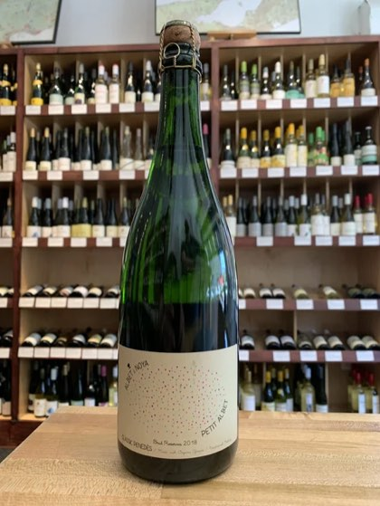
Albet i Noya Petit Albet Brut Reserva Cava 2024
Spain
This delicious vintage Cava has a precise bead with some well integrated toasty richness in the background from 15 months aging. A traditional blend, the nose offers herbs and white flowers while the palate dazzles with crisp apple, baked pear, and citrus. Organic and vegan friendly.
$19.0Only 6 left
-
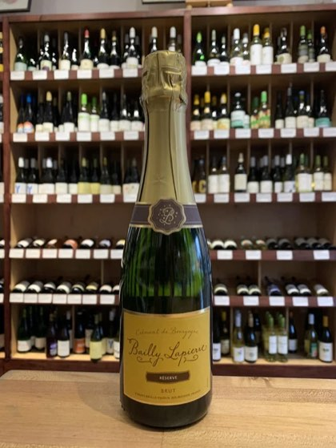
Bailly Lapierre Cremant de Bourgogne 375ml NV
Burgundy, France
A unique blend of Aligote, Chardonnay, Gamay, and Pinot Noir. This Cremant is extremely elegant with lemon oil, apple, pear, and toasty hazelnut. Before it was a winery this area was a limestone quarry and the limestone was used to build the Pantheon and Notre Dame.
$17.0Only 6 left
-
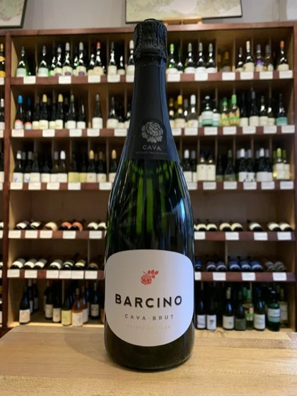
Barcino Cava Brut NV
Spain
Fresh and crisp with fine, Champagne like bubbles. The palate features lots of citrus and a very faint brioche note. Perfect for a celebratory toast or mixing with OJ. Made from a blend of grape varietals indigenous to this part of Spain -- Xarello, Macabeo and Parellada -- and aged on its lees for over a year. Dry and delicious.
$16.0Only 6 left
-
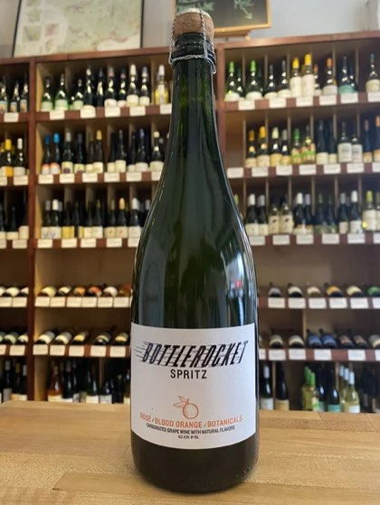
Bieler Bottlerocket Spritz
Washington
A really neat and refreshing blend of rose wine, blood orange, gentian, and other botanicals. Well balanced bitter flavors on top of the grapefruit pith and blood orange tasting notes. Great on its own or an excellent cocktail mixer.
$14.0Only 6 left
-
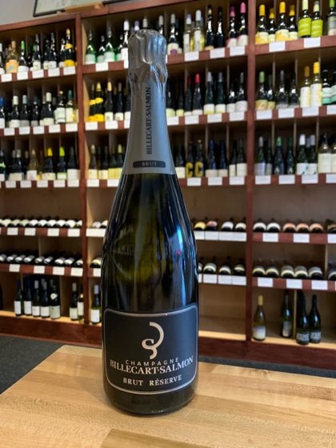
Billecart Salmon Brut Le Reserve NV
Champagne, France
Delicate nose with hints of biscuit and orange zest. Dry, with peaches and nectarines on the palate, with some nice minerality and great length. A simply fantastic Champagne. More info from the producer: Balance and harmony combine together in this light and subtle Champagne. Its blend is made up of Pinot Noir, Chardonnay and Pinot Meunier sourced from the very best sites of the Champagne region from 3 separate vintages. It is the ideal partner to delight your guests on every occasion, both as an aperitif and throughout the entirety of a meal. Ageworthy for at least an additional 5-6 years in your cellar. Aged 30 months on the lees. 30% Pinot Noir from the Montagne de Reims and the Grande Vallée de la Marne • 30% Chardonnay sourced from the best Crus in the Champagne region • 40% Pinot Meunier from the Vallée de la Marne and the southern slopes of Epernay • 30% Pinot Noir sourced from the best Crus in the Champagne region
$85.0Only 4 left
-
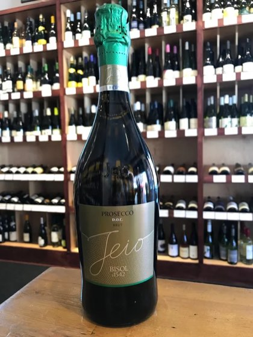
Bisol Jeio Prosecco NV Brut
Valdobbiadene, Italy
This dry Prosecco features a very fine, lively bead and offers exceptional value. Subtle citrus fruit and spiced pear on the palate with a fresh, clean finish. Sustainable farming.
$20.0Only 4 left
-
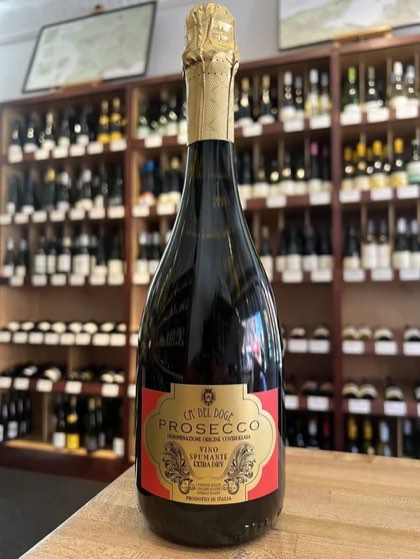
Ca Del Doge Prosecco
Veneto, Italy
A very classic Prosecco made of 100% Glera, with soft bubbles lifting the golden apple , Bosc pear, white peach, and citrus notes from the glass. Friendly and approachable for drinking on it’s own or blending with your preferred mixers.
$14.0Only 6 left
-
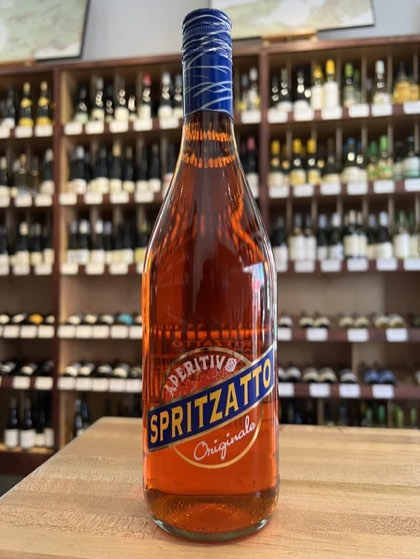
Caldirola Spritzatto
Apertif, Italy
Five glasses of premade spritz ready to pour over ice! Italian sparkling wine blends perfectly with an Aperol substitute to fashion this easy apertif. Notes of zesty citrus, burnt orange peel, grapefruit, bitters, and herbs are well balanced to create the perfect summer stoop sipper.
$16.0Only 6 left
-
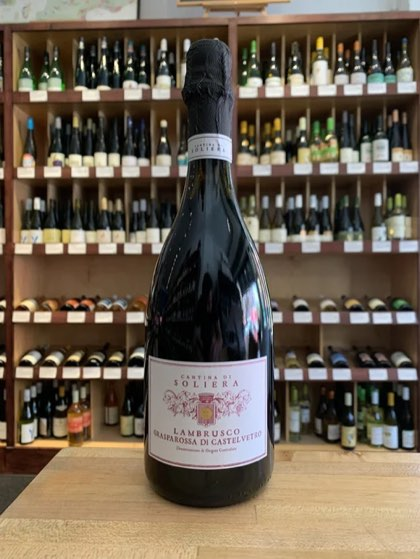
Cantina di Soliera Lambrusco Grasparossa NV
Emiliga Romagna, Italy
Deep ruby in the glass with ripe berry fruit notes and violet petals. This dry sparkler is fresh and versatile but really shines with regional fare like Parmiggiano Reggiano and Prosciutto di Parma. Sustainably farmed.
$21.0Only 6 left
-
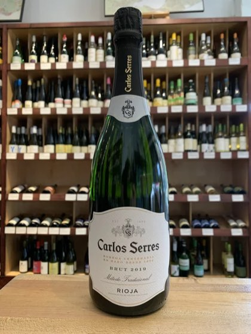
Carlos Serres Brut Blanc de Blancs 2020
Spain
Though Rioja has produced sparkling wine for nearly a century it’s always had to be designated as Cava, that is until Rafael Vivanco worked with the Spanish Regulatory Council to designate a new category of sparkling Rioja. To say this wine is a passion project for him is an undersell. This beautiful blend of Viura, Chardonnay, and Tempranillo Blanco is lights out! Brisk and expressive with white flowers, citrus, pineapple, and brioche from 15 months on the lees. Excellent concentration of fruit in the mid palate with nothing out of place.
$25.0Only 3 left
-
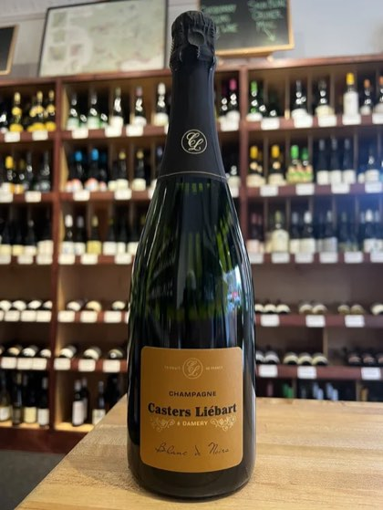
Casters Liebart Blanc De Noirs NV
Champagne, France
Such an elegant blend of 80% Pinot Noir and 20% Pinot Meunier from this grower Champagne producer based in Epernay. Fine, silky red cherry and berry fruits pop on the palate with great acidity and a clean mineral streak imparted by chalk soils.
$50.0Only 6 left
-
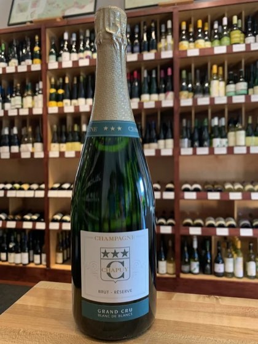
Chapuy Grand Cru Blanc de Blancs Brut Reserve
Chardonnay, France
This amazing Champagne is sourced from Grand Cru vineyard sites and produced from a small grower producer. A delicate nose that features white flowers and a hint of hazelnut. Bright, crisp lemon on the palate with beautiful minerality. 100% Chardonnay. Outstanding value for Champagne.
$58.0Only 6 left
-
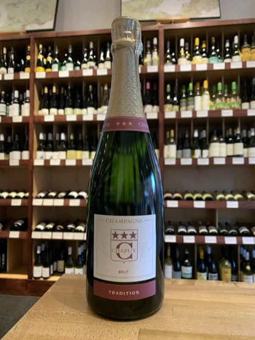
Chapuy Tradition Champagne Brut NV
France
A great value for true Champagne from this small producer based in Oger. Toasty lemon, orange peel, brioche, marzipan, and a long, fine finish of celebratory bubbles. Mostly Chardonnay with a quarter Pinot Noir, and Pinot Meunier. Who needs Veuve when Chapuy is Tradition?
$50.0Only 6 left
-
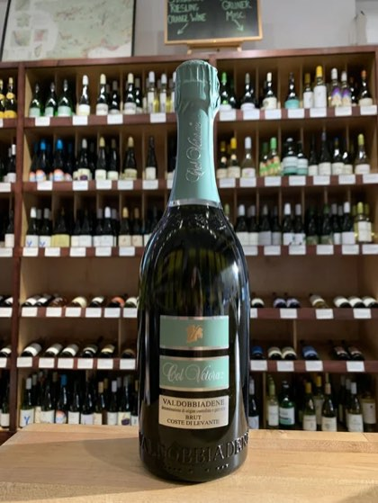
Col Vetoraz Prosecco Valdobbiadene 2025
Veneto, Italy
Conegliano Valdobbiadene is home to the best vineyards in Prosecco. Here the Miotto family crafts a wonderfully elegant wine from steep, high elevation slopes. Fine and aromatic with apple blossom, peach, grapefruit, and a soft creaminess.
$25.0Only 6 left
-
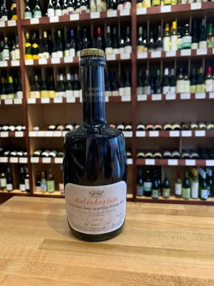
Domaine Glinavos Paleokerisio 2022 500ml
Orange wine
So Cool! The traditional spring-time wine of mountainous, northern Greece. Naturally fizzy and very refreshing, this wine has a little funk and plenty of grassy, nutty and herbal flavors. Deep orange color, all-natural, no added sulfur.
$19.0Only 6 left
-
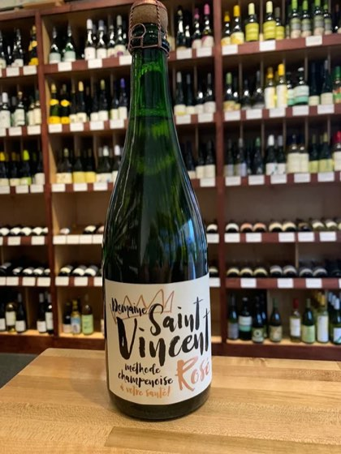
Domaine Saint Vincent Brut Rose NV
Sparkling, United States
Vibrant magenta in color with aromatics of lavender and ripe berries. The dry palate presents bing cherry with lively acidity and a vivacious finish. A true crowd-pleaser.
$18.0
-
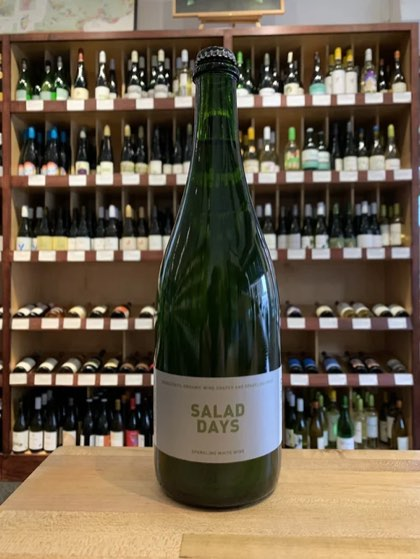
Field Recordings Salad Days Pet Nat NV
United States
This light, bright blend of Colombard, Chenin Blanc, and Chardonnay is sourced from vineyards throughout California. Super fresh with notes of lychee, gooseberry, and pomme fruits with a grassy topnote. A perfect picnic pet nat. Organic farming.
$19.0Only 6 left
-
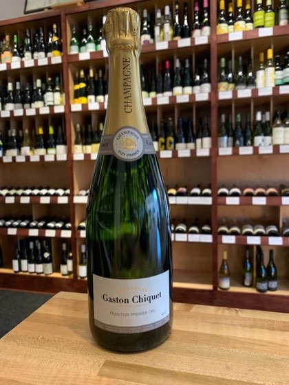
Gaston Chiquet Brut Tradition 1er Cru NV
Champagne, France
Exotic aromas of honeysuckle, rose petals, and dried fruit. Intensely flavored, frothy, and quite dry. Stylish, seamless, and with a very long finish. 40% Pinot Meunier, 35% Chardonnay, and 25% Pinot Noir. Sustainable farming.
$57.0Only 6 left
-
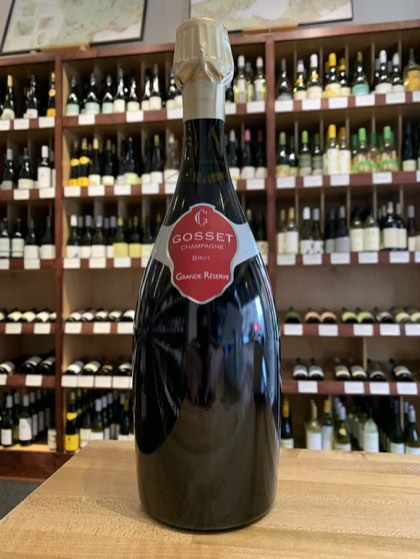
Gosset Grande Reserve Champagne NV
France
A blend of three vintages, Gosset’s Grande Reserve is a stunning sparkler for every occasion. The wine simultaneously showcases racy acidity with elegant richness. Smoky pear and citrus, wet stones, and fresh pastry offer the drinker a royal sipping experience.
$70.0Only 4 left
-
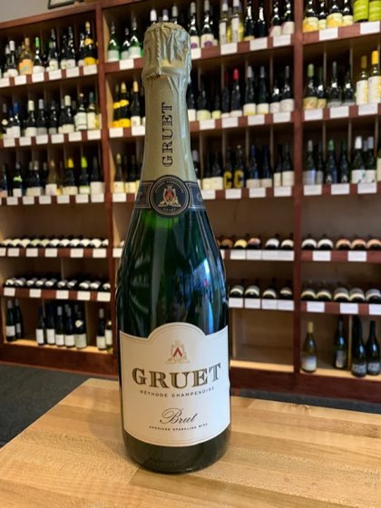
Gruet Gold Label Brut 750ml
Pinot Noir, United States
A crisp and full bodied sparkling wine with a rich complexity and fine mousse. A toasty finish complimented by apple and citrus fruit. Ultra fine bubbles. A lovely bottle created in the Champagne method that offers great value for the price. 75% Chardonnay and 25% Pinot Noir aged for two years on the lees before release.
$21.0Only 6 left
-
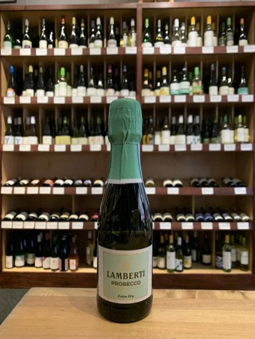
Lamberti Prosecco 187ml
Veneto, Italy
Delicious dry Prosecco for small celebrations (one glass per bottle).
$6.0
-
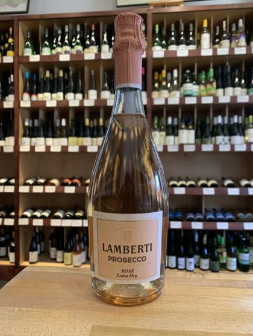
Lamberti Rose Prosecco 2023
Sparkling, Italy
Light, bright, and on the fruity side, this refreshing sparkler from the Veneto is perfect for all your day drinking needs or to pair with antipasti. Equal parts Pinot Bianco, Pinot Nero, and Raboso that obtains a fine, bubbly mousse through the Charmat method.
$19.0Only 6 left
-
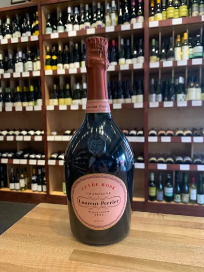
Laurent-Perrier Cuvée Rosé Brut
Champagne, France
Laurent Perrier first released this rosé in 1968, well before it became fashionable to have a pink-hued Champagne in the portfolio. 100% Pinot Noir (almost all from 2008 vintage) sourced from both the north and south sectors of the Grand Cru Montagne de Reims sub-region, and famously draws its color from skin contact rather than the more usual addition of red wine. It has striking freshness on the nose with zippy strawberry and raspberry fruit flavors, and satisfying vivacity. It's beautifully balanced with a long finish, and calls for a carpaccio of raw salmon Vivid orange-pink color. Seamless, round edges encompassing an expressive bouquet of raspberry, wild strawberry and pie crust. Rich, but lively. Brilliant with light appetizers, but great enough to stand on its own.
$115.0Only 4 left
-
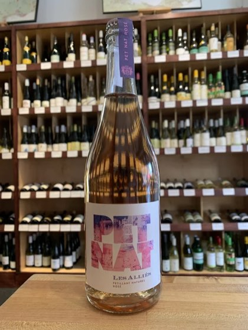
Les Allies Pet-Nat Rose NV
No Added Sulfites, France
A big, fruity punch bowl of a pet-nat. This fun, frothy rose is a blend of Semillon (98%) with a dash of Carignan (2%). Peach, raspberry, watermelon, and blood orange all leap out of the glass. Ever so slightly off-dry. Vegan. No added sulfites.
$15.0Only 6 left
-
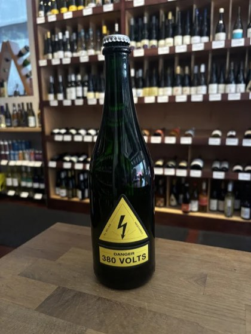
Milan Nestarec "Danger 380 Volts" 2025
Czech Republic
From a single vineyard on sandy soils this soulful pet-nat blends Gruner Veltliner, Neuburger, Muller Thurgau, and Muscat. Bright and salty with grapefruit, gooseberry, and finger lime. Unfined, unfiltered with no sulfur. Organic.
$38.0Only 6 left
-
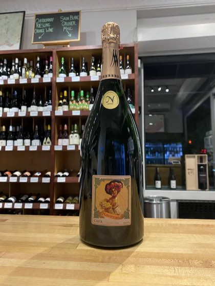
Naveran Brut Cava 1.5L
Penedes, Spain
A traditional blend of 50% Xarello, 30% Macabeo, and 20% Parellada. Loads of fresh cirtus, apple, and a subtle bready character. Value methode Champenois bubble in a large format for a product that is all estate grown, vintage dated, and organically farmed.
$48.0Only 2 left
-
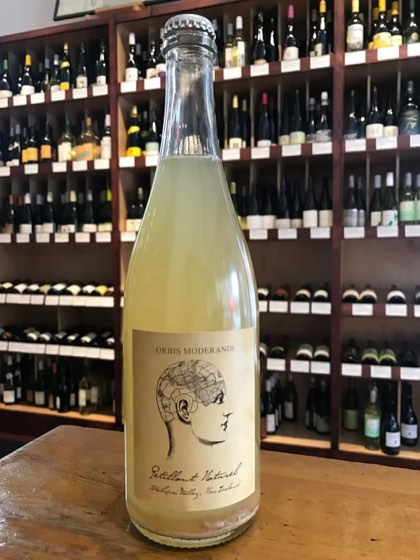
Orbis Moderandi Pet-Nat Sauvignon Blanc 2025
Petillant Natural, New Zealand
100% Sauvignon Blanc from a stunning single vineyard within Marlborough that is bottled during fermentation (petillant naturel or “pet-nat”). Very bubbly and aromatic with notes of kiwi, grapefruit and lemon preserves. Sustainable farming and vegan.
$18.0Only 1 left
-
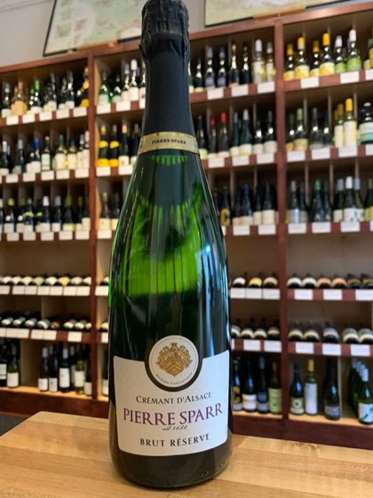
Pierre Sparr Cremant D'Alsace Brut Reserve NV
Pinot Blanc, France
With a nose of baked apple and fresh bread, this blend of Pinot Blanc and Auxerrois is classic Alsace. Dry and elegant on the palate, the texture and balance give Champagne a run for its money. No chemical fertilizers or pesticides are used at this winery that was founded in 1680!
$26.0Only 6 left
-
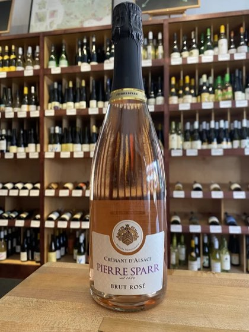
Pierre Sparr Cremant Rose NV
Sparkling, France
100% Pinot Noir from one of our favorite Alsatian producers. Salmon pink in the glass with aromas of strawberry, raspberry, and peach. Lively acidity and delicate bubbles give Champagne charm without the price tag. 18 months aging on the lees. Sustainable.
$27.0Only 6 left
-
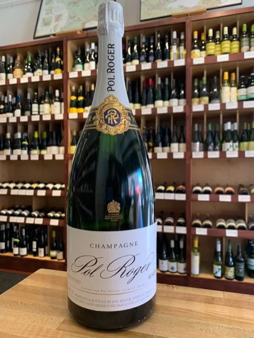
Pol Roger Brut Reserve Champagne 1.5L Magnum NV
France
Pale gold with a very fine bead. A complex & delicate nose with subtle aromas of toast, jasmine, and honeysuckle. The creamy palate is beautifully balanced with a dry, harmonious finish. Equal parts Pinot Noir, Chardonnay, and Pinot Meunier.
$174.0Only 4 left
-
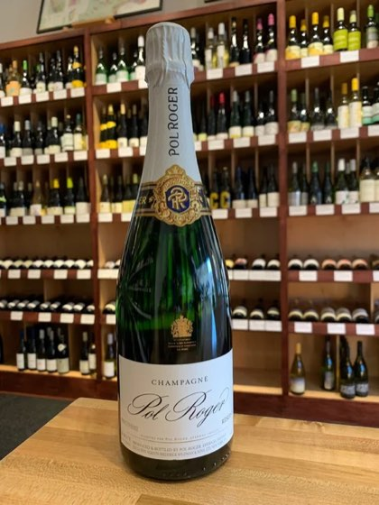
Pol Roger NV Brut
Champagne, France
Pale gold with a very fine bead. A complex & delicate nose with subtle aromas of toast, jasmine, and honeysuckle. The creamy palate is beautifully balanced with a dry, harmonious finish. Equal parts Pinot Noir, Chardonnay, and Pinot Meunier. Aged four years in the producer’s cellar before release. - The Pinot Noir (bringing structure, body and power) is mainly produced from some of the best crus of the Montagne de Reims. - The Pinot Meunier (ensuring freshness, roundness and fruitiness) is issued from several crus from the Vallée de la Marne and from the Epernay area. - The Chardonnay (adding its aromatic complexity, finesse, elegance and lightness) comes from Epernay and some of the best crus of the Côte des Blancs.
$76.0Only 6 left
-
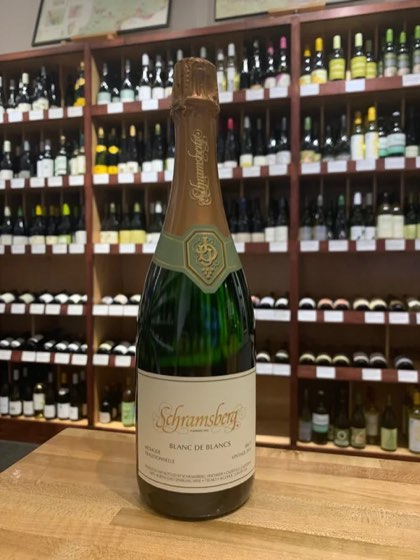
Schramsberg Blanc de Blancs Brut 2022
Chardonnay, United States
Introduced in 1965, this vintage "white from whites" gained international renown in 1972 when Nixon served it in Beijing for the historic "Toast to Peace." This is a stunning American sparkler with lean, crisp notes of lillies, ripe pear, and lemon sorbet. Made in the Champagne method and always a crowd pleaser.
$50.0Only 6 left
-
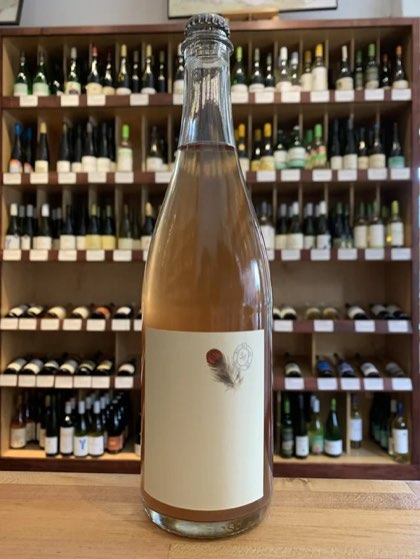
Silver Thread Pet-Nat 2025
Finger Lakes, United States
A field blend of red and white varieties co-fermented into this aromatic sparkler from Seneca Lake. Prickly notes of tangerine, lychee, and peach bubble out of the glass. The palate is well textured with some grip. This is a really beautiful New York wine. Sustainable and vegan. Solar powered winery.
$28.0Only 1 left
-
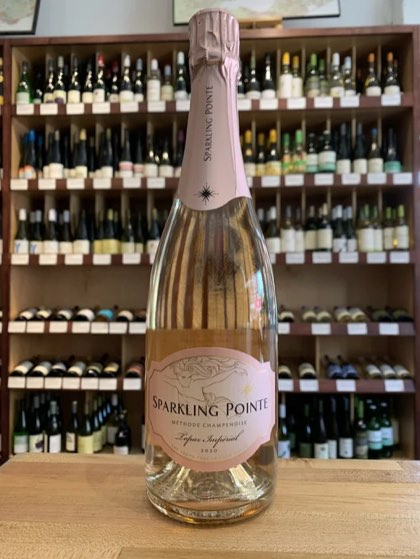
Sparkling Pointe Topaz Imperial Brut Rose 2020
North Fork of Long Island, United States
A traditional method sparkler from Long Island’s top producer of bubbles. Charming, elegant, and bright with notes of cherry, strawberry, and peach with soft toastiness on the finish. A super stylish Southold sipper.
$40.0Only 1 left
-
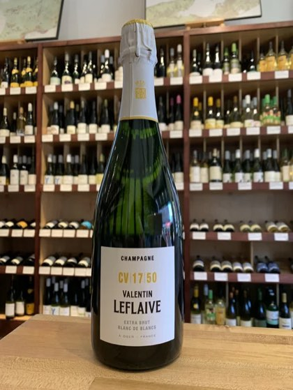
Valentin Leflaive CV / 19 / 30 Blanc de Blancs NV
Champagne, France
Sourced from 40 year-old-vines on mostly Premier Cru sites, this wine has a great citrus attack with notes of white flowers, nectarine, apple, and salty seashell. 34 months on the lees with 5 grams dosage (so truly extra brut). Sustainably farmed.
$75.0Only 3 left
-
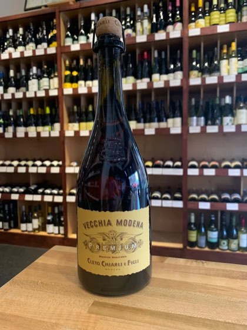
Vecchia Modena Lambrusco Sorbara 2025
Sparkling, Italy
A wonderfully elegant and delicate Lambrusco Sorbara. Flavors of cherry, white peach, and strawberry creamsicle collide with stellar acidity to form a frothy, fresh substitute for Mimosas or Bellinis at your next brunch.
$22.0Only 6 left
White
White 150 bottles
-

A Christmann Idig Konigsbach Riesling Grosses Gewachs 2022
Pfalz, Germany
This vineyard is the crown jewel of the Christmann estate holdings and lies on the steep southeastern facing limestone soils of Pfalz. This is a young wine and will reward patience. In 2026 and beyond you can expect this wine to pour a golden yellow color in the glass with an intense nose of marine salt, lime, underripe tropical fruit, and acacia. It is vibrant, dense, and powerful and will handsomely reward your restraint. Pure, precise Riesling that will likely rank among the best white wines of its vintage. The hardest part of owning this wine is keeping your hands off while it ages. If drinking now decant a full day early.
$105.0Only 1 left
-

Domaine Jomain Puligny Montrachet Les Perrieres 1er Cru 2023
Burgundy, France
Young, fresh, oaked Chardonnay from brothers Philippe and Christophe. White flowers, lemon curd, peach, and lime blossom with lots of concentration and length on the palate. Aged in a combination of neutral and new oak (no more than 25% new). Extended contact and stirring of the lees (yeast) leads to a fuller body and texture. Excellent structure and acidity. The family’s parcel of Perrieres is east facing and planted on limestone. Pair with crab cakes, halibut in creamy her sauce, or veal cutlet Milanese.
$130.0Only 1 left
-

Guiberteau Le Bourg Breze 1.5L 2022
Loire Valley, France
One of the great Loire whites from the steep hill of Breze in Saumur with vines nearly 100 years old planted on chalk and limestone soils. Romain Guiberteau makes dry Chenin of “punk rock violence, yet of Bach-like logic and profoundness,” according to importer Becky Wasserman. This Chenin is taut with exceptional tension and texture after being aged in neutral oak for a year. Notes of beeswax, smoky citrus, pear, wet stone, honeycomb, and nutmeg are supercharged in the glass with incredible acidity and a long, lingering mineral finish. Patience will be rewarded with this one as it locks in to a more mature character. Pair with chicken liver mousse, Peking duck, or Thai chili spot prawns. Organic farming.
$160.0Only 1 left
-

J.J. Prum Wehlener Sonnenuhr Kabinett Riesling 2021
Reserve, Germany
A superb Mosel vintage managed by the deft hands of Dr. Katharina Prum. Really harmonious, elegant, and balanced with clean notes of green apple, white peach, smoky grapefruit, pear, white plum, lime, and petrol. From the famed, steep Wehlener Sonnenuhr (Virgin Sundial) vineyard. While this wine shows generously on “pop and pour” it is layered and complex on day two and three of being open and will age effortlessly in a cellar for years if not decades to come. While there is some residual sugar in this wine it is exquisitely balanced with fresh acidity and the sweetness is never cloying. One of the top producers in the region and one of the best vintages of the decade. Impressive stuff. 94 - Vinous 92 - Wine Enthusiast
$78.0Only 6 left
-

Marina Coppi Fausto Timorasso 2021
Piedmont, Italy
Talk about a wine full of character and complexity! This estate was founded in 2003 and Fausto, for who the wine is named, is the grandfather of winemaker Francesco Bellocchio. The rare Timorasso is the hallmark of this estate and it shines in the deft hands of this winemaker. It has the soul of a red in the body of a white. Waxy, deep, and long on the palate with incredible structure and stuffing. It is bright and brimming with stone fruit, peaches, pear, and vanilla with vibrant acids, incredible weight, and wonderful length on the mineral finish. All stainless steel fermentation and aging. An ageworthy offering that whispers sweet everythings to your palate.
$80.0Only 4 left
-

Patrick Piuze Butteaux 1er Cru Chablis 2023
Premier cru, France
We’re not shy about our love for Patrick Piuze as the Montreal native consistently impresses with his thoughtful and precise Chablis offerings. This bottling from the 75 year-old-vines in the Premier Cru of Butteaux displays incredible depth, length, purity, and finesse. Butteaux is a sub climate of Montmains and typically showcases the richer side of Chablis. The left bank of the Serein River is known for its Kimmeridgian clay soils, which impart a recognizable minerality of seashells and salinity. This age worthy offering displays notes of white flowers, lemon curd, citrus confit, green apple, peach, and toasty richness. Lots of acidity and tension provide great cut to this medium bodied and mouthwatering Chardonnay.
$90.0Only 3 left
-

Tenuta Tascante Sciaranuova Etna Bianco 2022
Mount Etna, Italy
This is an exceptional bottle of wine from a region that is really heating up. 100% Carricante from the Sciaranuova contrada on the north slopes of Mount Etna. Elegant and brimming with sliced apple, lemon peel, white peach, white pepper, flint, and a dense streak of smoky minerality imparted by these gravel rich volcanic soils (former lava flows). Grown at 730 meters of altitude and aged in large Slavonian oak barrels for one year. Put this up against any premier cru Chablis or Burgundy and be amazed. Drink or hold. Extremely limited cellar selection. Sustainable farming.
$65.0Only 4 left
-
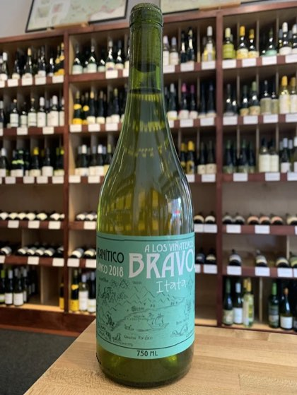
A Los Viñateros Bravos Granitico Blanco 2022
Itata, Chile
An aromatic blend of Muscatel (60%) and Semillon (40%) from southern Chile. This is a hazy white that borders on orange wine territory. Orange blossom on the nose with bright, fresh flavors of peach and nectarine finishing with a hint of salinity. Old vines, hand harvested, native yeast fermented, vegan, and organically grown.
$23.0Only 1 left
-
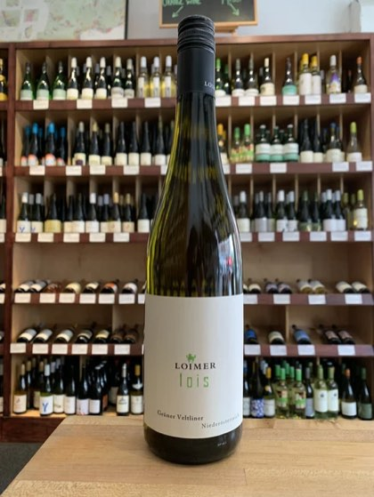
A. Christmann Pfalz Riesling Trocken 2023
Germany
A super zesty dry Riesling from this formidable Pfalz producer. Lime blossom, under ripe tropics, flint, and petrol in the glass with great length and texture from six months on the lees. Nervy and age worthy. Quite a savory Riesling. Spontaneous fermentation and sustainable farming.
$25.0Only 6 left
-
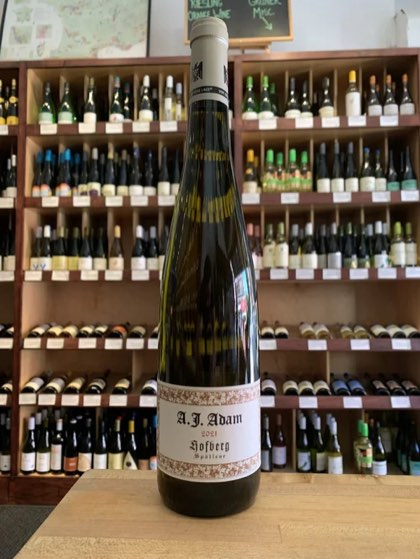
AJ Adam Hofberg Spatlese Riesling 2021
Mosel, Germany
From the Grand Cru Hofberg Vineyard and a collector’s vintage! A layered palate of kaffir lime leaf, ripe apples, peach, passionfruit, honey, slate, glacial ice, and a hint of funk from botrytis (noble rot). Serious juice that will only get better with age. Pair with Ethiopian cuisine. Sustainably farmed.
$35.0Only 4 left
-
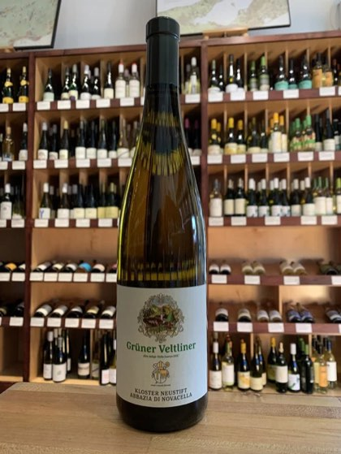
Abbazia di Novacella Gruner Veltliner 2023
Alto Adige, Italy
Made by the Augustinian Canons Reguar Monastery founded in 1142, this Gruner Veltliner from the Dolomites (2,000 feet of elevation) shows crunchy citrus, exotic stone fruit, white pepper, green bean, vibrant acidity, and a long finish of gravelly minerality that goes on and on. A gorgeous wine just a stone’s throw from it’s local home in Austria, yet wholly one-of-a-kind. Farmed organically.
$25.0Sold out
-
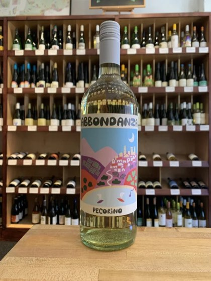
Abbondanza Pecorino 2024
Abruzzo, Italy
A fun litre of Pecorino from the Adriatic coast, with a great label desing by LA artist Eric Junker. Salted lemon, melon rind, orchard apple, and stone fruits. Crisp, but with a softer acidity and a classic Italian note of marcona almond on the finish. Certified organic.
$21.0Only 6 left
-
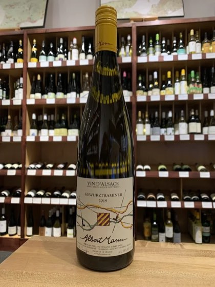
Albert Mann Gewurztraminer 2023
Alsace, France
Gorgeous Gewurztraminer from the heralded Albert Mann Estate. With an enthralling nose of exotic fruit and spice the palate shines with mango, lychee, and passionfruit while never coming off as heavy or clumsy. A wine with great poise. Biodynamic farming.
$39.0Only 3 left
-
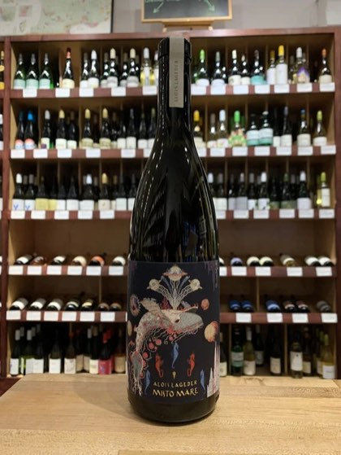
Alois Lageder Misto Mare White Blend 2025
Alto Adige, Italy
A delicious white field blend containing 20 grape varieties co-fermented. Presenting a delicate blush in the glass, the nose exudes fuzzy peach while the palate is brisk and clean with jasmine, citrus, white peach, and minerals. From vineyards converting to Biodynamic farming.
$20.0Only 6 left
-
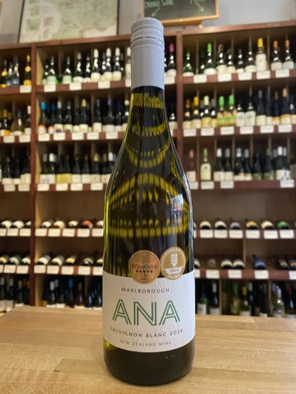
Ana Sauvignon Blanc 2024
Sustainable Farming, New Zealand
From 23 year-old vines in Marlborough. Typical NZ flavors of grapefruit, passionfruit, kiwi, and a hint of green bell pepper. Sauvignon Blanc has high levels of pyrazine so is known for its “green” grassy characteristics. Sustainable farming.
$17.0Only 6 left
-
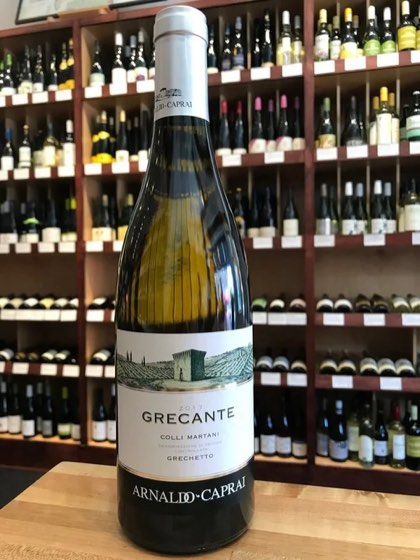
Arnaldo-Caprai Grecante Grechetto 2024
Umbria, Italy
Arnaldo Caprai is recognized for its dedication to sustainability. Yellow peach, hawthorne, and floral notes on the nose. Fuller body with great freshness, acidity, and a touch of chalkiness. 100% Grechetto, certified sustainable.
$25.0Only 6 left
-
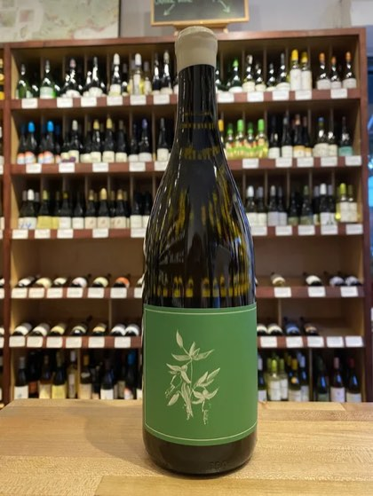
Arnot Roberts Ascona Vineyard Sauvignon Blanc
White, United States
High-toned and complex from this incredible California team. Lime zest, green melon, lemongrass, and flint are super charged and energetic on the palate. The vibrant acid is tamed by neutral oak aging. Sustainable.
$43.0Only 4 left
-
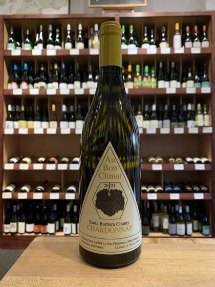
Au Bon Climat Chardonnay 2023
Santa Barbara, United States
From one of our favorite Santa Barbara producers. This Chardonnay is always consistent with notes of apple blossom, chamomile, lemon, white stone fruit, pear, vanilla, and soft spices from 8 months aging in neutral French oak. Ageworthy and sustainable.
$29.0Only 6 left
-
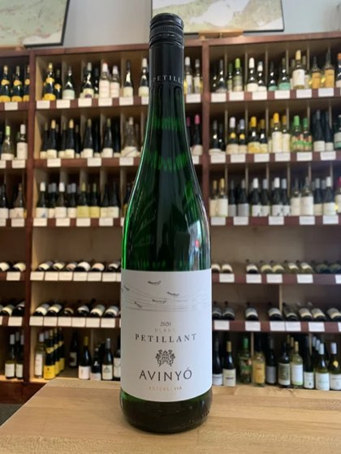
Avinyo Vi D'Agulla Petillant 2025
Muscat, Spain
Made from free-run juice (not pressed grapes). Lighter bodied, dry, and slightly effervescent. Crisp green apple and citrus fruit make this a fantastic summer wine. Mostly Muscat with a touch of Macabeo and Xarel-Lo. This wine returns to the shelves after a slew of customer requests. Practicing organic.
$23.0Only 6 left
-
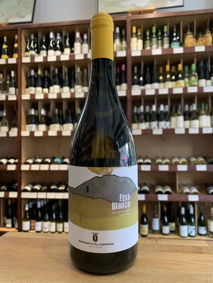
Barone Villagrande Etna Bianco 2024
Sicily, Italy
This family has been making beautiful wine on the slopes of Mount Etna since 1727. Subtle firewood and charcuterie on the nose, hinting at volcanic soil. Medium-bodied with great acidity and minerality. Practicing organic.
$28.0Only 6 left
-
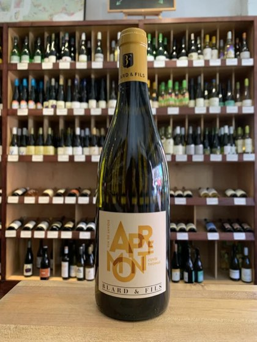
Blard Cuvee Thomas Apremont
Savoie, France
This is bright, textured, and mineral Jacquere. These 35 year old vines on clay and limestone create a wine with lots of underripe apple, pear, and orchard fruit. Native yeast fermentation with six months on the lees. Organic farming.
$27.0Only 6 left
-
Blue Quail Chardonnay 2025
Potter Valley, United States
From a beautiful vineyard between the Russian River and the Mendocino National Forest comes this lovely, fruit-forward Chardonnay. A bouquet of peach blossom leads to a crisp, dry palate of apple and white peach. Certified organic.
$19.0Only 6 left
-
Borell Diehl Muller Thurgau 2024
Pfalz, Germany
A killer value from the estate vineyards of this Pfalz producer! Lots of brightness in the apple, pear, and citrus notes that dance around the palate. Easy drinking, versatile with or without food, and in a handy litre size. So crisp it presents a false effervescence. Sustainably farmed.
$16.0Only 6 left
-
Buttonwood Grove Unoaked Chardonnay 2024
Finger Lakes, United States
The Finger Lakes does more than just great Riesling, and this Chardonnay proves it. Medium-bodied and totally unoaked, the Pittard family strives for a bright, clean profile. Subtle orchard fruit & lemon peel with wet stone on the finish.
$20.0Only 2 left
-
Ca Del Doge Pinot Grigio 2025
Veneto, Italy
Equally adept as an easy sipper or for cooking - this is one of the best bargains in the shop. Light bodied and dry with hints of green apple and almond. Crisp and uncomplicated.
$10.0Only 6 left
-
Cantina Orsogna Luna Gaia Grillo 2024
Sicily, Italy
A lovely Grillo (“cricket” in Italian) with notes of lemon verbena, honeysuckle, and white peach on the nose. The palate displays acacia blossom, lemon zest, and chamomile with fantastic texture from four months aging on the lees. Herbal. Native yeast fermented and certified biodynamic.
$20.0Only 6 left
-
Carta Vieja Sauvignon Blanc 1.5L 2025
Central Valley, Chile
A delicate pale yellow in the glass this is bright and crisp with notes of lime, lemon, grapefruit, white currant, and cut grass. Very fresh with nice minerality on the finish. Great on its own or for making white wine spritzers. Sustainable.
$18.0Only 6 left
-
Cellar Pinol Portal Garnacha Blanca 2024
Terra Alta, Spain
This dry, full-bodied blend comes from western Cataluña. Powerful aromatics of tropical fruit are met with herbal and floral nuances. Smooth, fresh, and amazing with seafood. Mostly Garnacha Blanca with Sauvignon Blanc, and Viognier. Organic farming.
$29.0Only 6 left
-
Channing Daughters Scuttlehole Chardonnay 2021
Long Island, United States
Crisp, clean and mineral-driven, this lovely local Chardonnay is completely unoaked and sees no malolactic fermentation. Hand-picked, whole cluster-pressed, and certified sustainable.
$19.0Only 6 left
-
Chateau Sainte Marie Bordeaux Blanc 2025
French, France
This blend of 63% Sauvignon Blanc, 27% Semillon, and 10% Muscadelle is charming and fresh. Lees stirring during fermentation gives faint richness to the white flower, pink grapefruit, and bright gooseberry flavors. Sustainable farming.
$19.0Only 6 left
-
Cinque Campi Terbianc 2023
Emilia Romagna, Italy
Vanni Nizzoli crafts this beautiful frizzante with multiple varieties of Trebbiano from 30+ year-old vines. Aged in stainless steel and cement, this is a dry, herbal, and mineral sparkler for all occasions. Citrus, peach, honey, and flint. A bit on the funky side. Certified organic with no sulfur added.
$34.0Only 3 left
-
Clean Slate Riesling 2024
Mosel, Germany
Ripe peach fruit with balanced acidity along with hints of lime. This wine gets its great minerality from the steep blue slate slopes of Lower Mosel and has a fair amount of residual sugar.
$15.0Only 6 left
-
Clemens Busch Riesling Trocken 2024
White, Germany
From vines up to 60 years old on the steep slopes of the Mosel planted on gray slate soils. This dry Riesling shows intense tangy citrus, salty minerality, and good body from lees aging in neutral oak barrels and stainless steel. Sour lemon candy. From an exceptional biodynamic estate.
$28.0Only 6 left
-
Columna Albarino 2024
Rias Baixas, Spain
Rodri Mendez is considered one of thebest winemakers in Galicia. Aged in stainless steel tanks, this wine offers notes of lemon pith, green apple, and honeysuckle. Lively and taut, but with an expansive acidity that broadens out on the palate. A great pairing for all kinds of seafood. Sustainably farmed.
$25.0Only 6 left
-
Conti Formentini Sauvignon Blanc 2024
Italy
Named “Caligo” after the morning mists that surround these vineyards this Sauvignon Blanc captures that cool morning freshness. Aromatics of poached pear and yellow apple lead to a palate bursting with passionfruit and herbs.
$21.0Only 6 left
-
Domaine Bernard Defaix Chablis 2024
Burgundy, France
Outstanding Chablis at this price point! Citrus, green tree fruits, and minerals on the nose. The palate shows great tenacity with lemon, grapefruit, and a saltiness from the Kimmeridgian clay soils of this region. Organic farming.
$38.0Only 6 left
-
Domaine Francois Cartier Touraine 2025
Sauvignon Blanc, France
Lively and elegant Sauvignon Blanc that gives Sancerre a run for its money. Crisp citrus and gooseberry flavors mingle with snappy acidity and a faint grassiness creating a refreshing blast for the palate. An extremely classy wine at this price point.
$22.0Only 6 left
-
Domaine Morin-Langaran "Perdu" Picpoul 2025
Languedoc, France
100% Picpoul displaying light and fresh notes of green apple, lemon, fuzzy peach, nectarine, and a Topo Chico like alkaline minerality. Nearly effervescent. Charming and versatile. Sustainable.
$18.0Only 6 left
-
Domaine Rolet Arbois Chardonnay 2023
Jura, France
A stunning roller coaster of a wine from Jura. The nose displays citrus peel and pollen. The palate is snappy with taut lemon curd and almost tropical fruit before finishing with the savory, nutty characteristic of the intentionally oxidized whites of this producer. A fantastic and fascinating wine. Aged in oak. Organically farmed.
$35.0Only 4 left
-
Domaine Zafeirakis Assyrtiko 2024
Thessalia, Greece
While the prices of Santorini skyrocket, this stunning Assyrtiko from inland Tyrnavos represents a great value. Pale in the glass with striking acidity and a brisk, clean, and salty palate of meyer lemon, pithy citrus, and flint. Sustainable farming.
$27.0Only 4 left
-
Domaine des Cassagnoles Blanc 2025
Cotes de Gascogne, France
A light, bright, crisp wine with lots of fresh, clean citrus fruit flavors. This blend features Colombard, Ugni Blanc, Gros Manseng and Sauvignon Blanc. A great way to start a dinner party. Sustainable farming.
$15.0Only 6 left
-
Don David Torrontes 2024
South America
Intense perfumed aromas of tropical fruits with some floral hints. Elegant and complex. Full bodied with rich flavors of peach and apricot. Lower acidity makes this a great pairing with spicy cuisine. 10% aged in American oak and sustainable agriculture.
$19.0Only 6 left
-
Donini Pinot Grigio 2024 1.5L
Magnum, Italy
Light and crisp with notes of citrus. An easy drinking Pinot Grigio in magnum for white sangria recipes, bulk cooking wine, or simply for large gatherings.
$17.0Only 6 left
-
Donnhoff Grauburgunder 2023
Nahe, Germany
100% Pinot Gris from what is arguably Nahe’s best producer. Super refreshing, bright, and pepper-y with a deep slatey minerality imparted by the loess soils. Matured in large format neutral oak barrels. Sustainably farmed.
$25.0Only 6 left
-
Dr. G Dry Riesling 2024
Germany/Austria
Light, fresh, fun, and totally DRY - this a great intro to the world of German Riesling. The bouquet is laced with subtle floral notes while the palate features bright acidity, apple blossom and river pebbles.
$14.0Only 6 left
-
$24.8
-
Durnberg Falko White Blend 2023
Sauvignon Blanc, Austria
Refreshing and easy-going, this blend of Gelber Muskateller, Welschriesling, and a touch of Sauvignon Blanc is crisp and fruity. Picnic Perfect. Certified sustainable.
$19.0Only 6 left
-
East Rock Sauvignon Blanc
Hawke's Bay, New Zealand
A deliciously crisp and refreshing Sauvignon Blanc from Hawke’s Bay on New Zealand’s north island. Lime, lemon pith, and rock melon on the palate with a salty sea spray minerality on the finish. Less green and herbal than other Kiwi sauvys. Farmed organically.
$21.0
-
Elena Walch Pinot Bianco 2024
Alto Adige, Italy
Pale in the glass with a crisp alpine minerality that tastes like a breeze in the Dolomites. Citrus and apple with a delicate herbaceous quality. 100% estate farmed Pinot Bianco. Female winemakers. Sustainably farmed.
$27.0Only 6 left
-
Entre Vinyes Oniric Xarel-lo 2024
Penedes, Spain
Old-vine Xarel-lo from this husband and wife team. Traditionally used for Cava production, this still version offers honeysuckle and almond blossom on the nose with a textured palate of orchard apple and bruised pear. Native yeast fermentation, no filtration, and minimal sulfur. Organic
$21.0Only 6 left
-
Fabrizio Vella Bianco 2024
Catarrato, Italy
This fresh, Catarratto-dominant field blend is crisp and clean but fairly full-bodied. An unfiltered white loaded with citrus, white peach, almond blossom, and hay. This Sicily native is passionate about local grapes and is crafting some awesome wines. Farmed organically.
$13.0Only 6 left
-
Fairvalley Chenin Blanc 2025
Black owned, South Africa
Fresh and fruity aromas abound. Pear and apple fruit comprise the palate along with a bit of honey to balance the crisp, fresh acidity. Made by one of the few Black-owned wineries in South Africa. Fair Trade and certified sustainable.
$12.0Only 6 left
-
Famille Paquet Bourgogne Blanc 2024
Burgundy, France
The Paquet family are highly regarded winemakers in Burgundy, crafting precise Chardonnay with minimal intervention. Medium bodied with lively acidity, pronounced minerality, and subtle use of neutral oak.
$30.0Only 6 left
-
Forstreiter Gruner Veltliner 2024
Kremstal, Austria
An intriguing nose of white pepper and grapefruit leads to a bracingly dry palate. Very crisp acidity keeps the notes of passionfruit and pear in balance. A slender, spicy, subtle wine. Sustainable farming. Vegan friendly.
$22.0Only 6 left
-
Fossil and Fawn Only Always White Blend 2024
Willamette Valley, United States
This blend of 46% Auxerrois, 38% Riesling, and 16% Gewurtztraminer is sourced from Willamette’s Sunnyside Vineyard. This “Gemischtwer Satz” (literally “mixed bag”) field blend is bright, dry, and elegant with floral aromatics and clean, pure fruit.
$35.0Only 6 left
-
Foxen Ernesto Wickenden 2023
Santa Maria Valley, United States
From vines planted in 1966(!) this is a stunning domestic Chenin Blanc. Medium bodied with waxy notes of white flowers, lemon oil, apple, and pear, with a good acidic backbone. Aged in stainless steel and large neutral barrel. Organic.
$28.0Only 6 left
-
Frenzy Sauvignon Blanc 2025
Australia/New Zealand
Grapefruit, kiwi, and asparagus are the main players in this crisp, fruity, and herbaceous white. This is a great example of New Zealand Sauvignon Blanc showcasing the high acid and intense fresh-cut grassy flavors assosciated with Marlborough. Green, green rocky road.
$18.0Only 6 left
-
Friend and Farmer Verdejo 2025
Spain
A crisp, clean, easy drinker from the Parra brothers and Juan Antonio Ponce in central La Mancha. This wine is a great, earth friendly value with notes of lemon, lime, apple, and peach. Stainless steel fermented and extremely crowd pleasing. Biodynamically farmed, vegan frinedly, and made with minimal sulfites.
$16.0Only 6 left
-
Garzon Albarino 2025
Maldonado, Uruguay
The famous grape of Galicia, Spain now finds itself at home in the cool, maritime climate of coastal Urugauy. Notes of lime, white peach, sea breeze, and slate refresh the palate. Medium bodied from time aging on the lees. A delicious stray from the norm while still being a dead ringer for Albarino from Rias Baixas.
$23.0Only 4 left
-
Gaspard Chenin Blanc 2025
Loire Valley, France
Zesty and clean with loads of bright citrus, lemon oil and the signature lanolin (wet wool) quality of great Chenin. This white is fermented with indigenous yeasts and spends six months on the lees before being bottled with light filtration. Sustainably farmed.
$19.0Only 6 left
-
Grenaudiere Muscadet 2024
Loire Valley, France
An incredibly refreshing Melon de Bourgogne from the Ollivier family. Light and nearly spritzy on the palate with its crisp, clean, limestone minerality and citrus. Pair with mussels, skate wing, or sashimi. Sustainably farmed.
$17.0Only 6 left
-
Grgich Hills Estate Sauvignon Blanc 2023
Napa Valley, United States
A style coined by Robert Mondavi, this Fume Blanc is fermented in large foudres and oak barrels. Tantalizing notes of green pepper, snap pea, lime, sea salt, and green apple leap from the glass. Chiseled. Biodynamic.
$42.0Only 6 left
-
Grooner Gruner Veltliner 2024
Germany/Austria
A toned down version of Gruner Veltliner, lots of bright citrus fruit with soft acidity that is very easy to drink. Sustainable farming and vegan friendly. A fun alternative to Sauvignon Blanc and a wonderful picnic wine.
$15.0Only 6 left
-
Guillerault-Fargette Les Panseillots Sancerre 2024
Sauvignon Blanc, France
Talk about elegance! Lovely tension and balance of brisk acidity and expansive fruit. Lots of green apple, citrus, and underripe peach on the palate with a super stony finish. Lovely, sustainably farmed Sauvignon Blanc.
$43.0Only 6 left
-
Hanging Vine Chardonnay 2023
Oaky, United States
Lush, ripe stone fruit with some hints of tropical fruit. This very well made wine has a nice balance of oak and acidity.
$17.0Only 6 left
-
Hedges Estate CMS Sauvignon Blanc 2024
Columbia Valley, United States
This dry & refreshing white from winemaker Sarah Hedges Goedhart features bright aromas of gooseberry and lemon curd. Medium-bodied with ripe citrus fruit atop bold acidity.
$17.0Only 6 left
-
Henry Fuchs Vieille Vigne Sylvaner 2024
Alsace, France
This presentation of the ancient Sylvaner comes from 60 yr. old vines grown in deep clay soil. An aromatic and exotic nose leads to a medium bodied palate of orchard fruit and bright acidity. Seven months on the lees and certified organic.
$27.0Only 6 left
-
Herault Chinon Blanc 2024
Loire Valley, France
Gorgeous Chenin Blanc from vines around 15 years-old aged in large new and neutral oak barrels. Golden apples and Bosc pear on the palate with a medium to full body and nice roundness to the texture and acidity. Wonderful versatility on this delicious Loire white.
$26.0Only 6 left
-
Hiedler Loss Gruner Veltliner 2024
Kamptal, Austria
“Löss” refers to the glacial Loess soils these vines are grown on, which imparts a crushed rock mineral character on top of the lime zest, grapefruit pith, white pepper, and spice notes. Great texture from ageing on the lees. Sustainable farming.
$23.0Only 6 left
-
Hugel Classic Riesling 2023
Alsace, France
A lovely, bone-dry Riesling sourced from clay and limestone rich vineyard sites around Riquewihr. Light and fresh with notes of spring flowers, lemongrass and grapefruit. Sustainable farming.
$27.0Only 4 left
-
Hugel Gentil 2024
Riesling, France
Subtle lychee nut and kiwi fruit that is complimented by lovely floral notes. A mild, but refreshing acidity that makes for a harmonious wine.
$19.0Only 3 left
-
Hyde Vineyards "Hyde Vineyard" Chardonnay 2017
Napa Valley, United States
Phenomenal energy in this remarkable wine! Spiced pear pie, pineapple, quince, white peach, honeycomb, vanilla, and clove all impress in the glass. Despite the power and bold flavors on the palate there is a vibrant minerality that goes on and on.
$100.0Only 1 left
-
I Pentri Flora Falanghina 2023
Campania, Italy
Truly unique Falanghina from a very small family estate. Striking golden color in the glass with an aromatic nose of apricots, underbrush, ginger and mint. Very dry & full bodied on the palate with notes of honey & volcanic minerality. This amazing natural wine features: practicing biodynamic agriculture, unfined, native yeast fermentation with no added sulfur.
$32.0Only 4 left
-
Inama Soave Classico 2024
Veneto, Italy
Pale in color, this wine is extremely delicate, dry and minerally. Faint aromas of apple blossom entice before stoney flavors envelope your palate. Not the Soave you remember. Sourced from unique volcanic soil and organic farming. 100% unoaked Garganega.
$22.0Only 5 left
-
Joao Portugal Ramos Vila Santa 2024
Alentejo, Portugal
From just outside of Estremoz comes this clean, easy drinking blend of Rabo de Ovelha and Roupeiro. Nice and bright with lime blossom, jasmine, and crisp citrus character. Pair with local specialties like cod.
$13.0Only 6 left
-
Kelley Fox Willamette Valley Chardonnay 2024
United States
With fruit from young vines in the Freedom Hill Vineyard, this unoaked Chardonnay spends 10 months on the lees and presents amazing energy and tension in the glass. Green apple, quince, citrus, and orchard fruit with great texture and salty minerality. Chablis like. Organic farming.
$37.0Only 4 left
-
Kiki & Juan Blanco 1L 2024
Valencia, Spain
(90% Macabeo and 10% Sauvignon Blanc, showing lots of pear, melon rind, starfruit, and a salty dose of sea breezy minerality. A great wine for a mezze plate in then park, and in a handy litre size so everyone can have a glass… or two. Organic farming.
$16.0Only 6 left
-
Kimich Riesling Kabinett Trocken 1L 2024
Pfalz, Germany
Lean and crisp, this liter of dry Riesling has high toned citrus and granny smith apple notes with lovely minerality on the finish. So bright and crisp it will trick your palate into thinking it has a touch of effervescence (Vinho Verde fans will appreciate). A staff favorite. Sustainable farming.
$18.0Only 6 left
-
Kontogiannis Penteskoufi 2023
Korinthia, Greece
A beautiful blend 67% Savatiano and 33% Roditis. Clean and crisp with a faintly waxy texture. The palate shows apple, pear, and spring blossoms like honeysuckle. Approachable and refreshing. Native yeast fermented. Biodynamic.
$30.0Only 4 left
-
La Carraia Orvieto Classico 2025
Umbria, Italy
This crisp, refreshing blend of Grechetto with Procanico, Vermentino , and Viognier is the perfect picnic or crudo accompaniment. Grown on volcanic tufa soils the palate races with citrus, white peach, and minerals. Another versatile value from Umbria. Sustainably farmed.
$17.0Only 6 left
-
La Sapata Aligote 2024
Romania
Umbrian winemaker Roberto di Filippo saw the potential of the Danube Delta when he began La Sapata. Aligote finds itself at home here, with plantings up to a century old. This wine shows incredible tension and freshness with green tree fruits, citrus, and excellent acidity. Native yeast fermentation, organic, and natural winemaking.
$21.0Only 6 left
-
La Spinetta Timorasso 2024
Piedmont, Italy
Nearly relegated to exctinction, Timorasso plantings are on the rise! This variety is slightly viscous showing white honey, waxen lemon peel, creamy tropical fruit like pineapple and guava, white pepper, and chamomile. Seven months on the less. Give us a break with this packaging! Certified organic.
$27.0Only 2 left
-
Laroche Chardonnay 2024
French, France
This lively Chardonnay is from the Peyroli vineyard purchased by Michel Laroche in 1985. The palate features vibrant acidity and tropical fruit with floral notes on the nose . Pairs well with with any type of seafood especially oysters! Practicing organic.
$17.0Only 6 left
-
Le Paradou Viognier 2025
France
100% Viognier from limestone plots in the hills above Montepellier. Medium to full-bodied with elegant aromas of white flowers, apricot, and peach. Stone fruit and minerality without presenting as overly fleshy. Sustainably farmed.
$17.0Only 6 left
-
Leirana Albarino 1.5L Magnum 2024
Spain
Winemaker Rodrigo Mendez has devoted his craft to reviving the wines of his family’s history. This old vine Albariño features a bright, focused bouquet of Meyer lemon, sea spray, lime, and white peach. Bone dry with mouthwatering acidity. An ideal pairing with paella. Organic.
$72.0Only 1 left
-
Leirana Albarino 2025
Rias Baixas, Spain
Winemaker Rodri Mendez has devoted his craft to reviving the wines of his family's history. This old vine Albariño features a bright, focused bouquet of Meyer lemon, sea spray and ginger. An ideal pairing with paella.
$37.0Only 6 left
-
Lucchetti Verdicchio 2025
Le Marche, Italy
100% Verdicchio from Castelli di Jesi, a small appellation on Italy’s Adriatic Coast, where this winemaker focuses on reviving the region’s indigenous varietals. Aromas of white flowers, vibrant citrus fruits, and saline minerality on the palate. This wine is a delightful easy sipper.
$17.0Only 6 left
-
Luis Seabra Xisto Branco 2023
Douro, Portugal
Called “Xisto” to highlight the schist soils in the Cima Corgo, this blend is mostly Rabigato (60%) with a slew of other varities. Fuller bodied with loads of pear fruit, white poppy, and dense minerality. A Portuguese white Burgundy if you will. Fermented and aged in used oak and stainless steel.
$34.0Only 6 left
-
Manduria Alice Verdeca 2025
Puglia, Italy
A terrific white made from the obscure Verdeca grape by this Puglian cooperative of 400 growers. Medium bodied with lots of citrus, white peach, and a slightly salty finish. Pair with frutti di mare. Sustainable farming.
$18.0Only 6 left
-
Manta Sauvignon Blanc 2024
Chile
Bright acidity and citrus initially with the wine filling out nicely in the mid palate. Crisp, clean finish. Pretty amazing for the price.
$11.0
-
Marchesi Di Barolo Gavi 2025
Piedmont, Italy
Lots of golden delicious apple, pear, melon, and green almond notes in this Cortese from this formidableold school Barolo house. The palate is very crisp with a creamy texture on the mineral finish.
$20.0Only 4 left
-
Marco Porello Roero Arneis 2025
Piedmont, Italy
Beautiful, hand-harvested Arneis sourced from plots in Vezza d’Alba and Canale. The nose beautifully displays a mix of white flowers, subtle citrus, and herbs. The bright, unoaked palate lends itself to being served as an aperitif or paired with light appetizers.
$19.0Only 2 left
-
Mary Taylor Gaillac Perle 2023
France
This blend of 80% Mauzac and 20% Muscadelle is so fresh it shows an almost effervescent crispness, hence the name “Perle.” The palate is lively with green apple, herbs, underripe peach, and honey. Sustainably farmed.
$20.0Only 5 left
-
Mas Magnan Chasseur d'Afrique Colombard 2024
Languedoc, France
An exciting new project from brothers Guilhem and Hugo. Single plot old-vine Colombard aged in neutral barrel and stainless steel. Textured and enticing with lemongrass, jackfruit, apricot, pineapple, and sea breeze. Organic with minimal sulfur.
$32.0Only 4 left
-
Massican Gemina White Blend 2024
Greco, United States
This family focuses on the native grapes from their Southern Italian roots. Comprised of 62% Greco and 38% Falanghina, this wine is fresh and bracing with lemon grass, lime blossom, yuzu, tangerine, ginger, and sea salt. Mediterranean in character. Sustainably farmed.
$47.0Only 2 left
-
Maximin Grunhaus Von Schubert Riesling 2023
Mosel, Germany
Juicy and snappy Riesling sourced from sites throughout Mosel-Saar-Ruwer river valleys. Light and zippy with yellow apple, pear, peach, and flinty minerality. Very lively with great acidic tension and a long finish. Just the faintest pearl of residual sugar. Sleek and refreshing, not to mention the perfect pairing for drunken noodles.
$25.0Only 1 left
-
Mayr Gruner Veltliner 1L 2025
Kremstal, Austria
Another great value in a litre (one bottle and a third) format! True to character, this Gruner displays apple, pear, grapefruit, melon, white pepper, and a clean minerality from the loess soils of Kremstal. Organic farming.
$18.0Only 6 left
-
Mayu Pedro Ximenez 2023
South America
A beautifully dry Pedro Ximenez from the highest vineyard in Chile. Pale straw color with peach and melon on the nose. Very focused medium bodied palate with subtle stone-fruit and lots of minerals and spice that will appeal to Gruner Veltliner fans. Unoaked.
$19.0Only 3 left
-
Mormoraia Suavis Vernaccia 2023
Tuscany, Italy
Delicious, crisp, medium-bodied with floral mineral, grapefruit and lemon zest notes. Nice elegant wine from one of the top producers in San Gimignano. Certified organic farming.
$22.0Only 2 left
-
Moulin Touchais Coteaux du Layon 1997
Loire Valley, France
The dessert Chenin Blancs of Coteaux du Layon are among the most ageworthy wines in the world. The Moulin Touchais 1997 has 92 grams per litre of residual sugar with a fair amount of botrytis (Noble Rot) in this vintage. An aged texture exuding deep aromas of honeycomb, tropical fruit, lanolin, and spice. The palate displays lengthy notes of marmalade, apricot jam, baked pear, burnt caramel, and honeyed almonds. An incredible wine that will continue to evolve for years in the bottle.
$92.0Only 1 left
-
Nickel & Nickel Truchard Vineyard Chardonnay 2023
Carneros, United States
Enticing, fresh, and pure with notes of sliced apple, pear, tropical melon, papaya, tangerine, honeysuckle, and toasted almond from 10 months French barrel aging (30% new). From the cool Truchard vineyard in Carneros. Sustainable.
$60.0Only 3 left
-
No Es Pituko Viognier 2024
Central Valley, Chile
A lovely natural wine from the Curico Valley! Hazy and aromatic in the glass with notes of fresh honeysuckle, peach, and pomme fruit. The medium bodied palate is well textured and would make a great pairing for Chinese duck. Unfined, unfiltered, organic, no added sulfites.
$16.0Only 6 left
-
Nortico Alvarinho 2025
Albarino, Portugal
This 100% Alvarinho (Albarino) is from sustainably grown vines on granite soils. The wine features fresh, bright acidity supported with notes of peach and ruby grapefruit with a beautiful, mineral finish.
$17.0
-
O Raio da Vella Albarino 2024
Rias Baixas, Spain
This might as well be Premier Cru Chablis! A beautiful singe vineyard Albarino from Rodri Mendez. Super charged acidity and texture, this displays gorgeous Meyer lemon, bay leaf, white grapefruit, quince, and saline minerality from its coastal origin. 12 months in neutral oak on the lees. Biodynamic.
$62.0Only 4 left
-
Olga Raffault Chenin des Picasses Chinon Blanc 2025
Loire Valley, France
This is the inaugural bottling of this new addition to the Raffault line! From ten-year-old Chenin Blanc vines in the famed Picasses vineyard, this ageworthy white spends a year on the lees in 500 litre neutral oak foudres. This gorgeous Chenin shows lemon, quince, apple, chalk, bee pollen, and just a hint of vanilla. Another stunning wine from one of our favorite producers. Native yeast fermented with no fining. Farmed organically.
$53.0Only 3 left
-
Olivier Leflaive Bourgogne Blanc Les Sétilles 2023
Burgundy, France
Incredible satisfaction in a white Burgundy at this price point. Leflaive selects multiple vineyard plots to form their final blend, striving for the cleanest varietal character possible. 10% new oak, with the remaining aged in neutral cask and stainless steel.
$45.0Only 6 left
-
Pago del Cielo Celeste Verdejo 2023
Rueda, Spain
Fresh, clean, and elegant Verdejo from the slopes of the Duero River. This wine possesses notes of lemon, peach, and mango with a soft herbaceousness from a dash of Sauvignon Blanc. Aging on the lees gives it a little extra body before the lengthy finish kicks in. Vegan.
$19.0Only 6 left
-
Pardas Blau Cru 2022
Penedes, Spain
Malvasia de Sitges is highly acidic and hard to vinify, but Ramon Parera ferments in steel and ages 8 months on lees to tame the acidy. Very floral on the nose with bracing flavors of key lime and minerals on the palate. Practicing organic, minimal intervention and vegan friendly.
$32.0Only 6 left
-
Pardas Rupestris 2023
Penedes, Spain
A unique blend of 80% Xarello and 20% Malvasia de Sitges, both native to Penedes. Wild flowers and rosemary on the nose lead to light, tart peach and almond blossom notes. Fermented and aged in concrete vats. Practicing organic, minimal intervention and vegan friendly.
$22.0Only 6 left
-
Patio Pounder 1L
Vinho Verde, Portugal
A liter of bright, refreshing, and crushable Vinho Verde with effervescent notes of lime, lemon pith, green apple, peach, apricot, and a saline mineral character. A great pairing for fried calamari. Perfect for “Patio Pounding” if you would stoop so low… or stoop solo.
$17.0
-
Patrick Piuze Val de Mer Bourgogne Blanc 2023
Burgundy, France
Lovely unoaked Chardonnay from Patrick Piuze’s second winery. The crisp palate displays notes of Honeycrisp apple skin, ripe pear, white peach, saline, and chalk. Native yeast fermented, aged in stainless steel, and sustainably farmed.
$26.0Only 6 left
-
Pazos de Bruxas Albarino 2025
Rias Baixas, Spain
This lighter to medium bodied Albariño features a nose of lime blossom and seashells. The finely etched palate is saline with notes of lemon marmalade, granny smith apple, and stones. Fermented in stainless steel.
$25.0Only 4 left
-
Pepiere La Pepie Muscadet 2025
Loire Valley, France
100% Melon de Bourgogne grown on granite soils just outside of Brittany. “Pepie” means thirst and translates directly to this crisp, racy style. Notes of lime blossom, lemon, pear, and wet stones. Clean and mineral with lees aging. Certified biodynamic with no fining.
$22.0Only 6 left
-
Perraud De La Grande Burette Macon-Villages 2022
Burgundy, France
This is a super classic Macon showing lots of chalky minerality and a hint of crushed seashell. Ripe lemon, green apple, Asian pear, plus white flower and herbal notes are showcased on the palate. Aged 10% in used oak.
$23.0Only 4 left
-
Pierre Bories Hippolyte Blanc 2025
Roussanne, France
A terrific Rhone style blend of Roussanne, Marsanne, Grenache Blanc, and Grenache Gris. Faintly waxy with moderate acidity and a creamy palate of apple and pear. Unoaked, but with a rounder fruit quality from malolactic fermentation. Pair with Szechuan. Organic.
$20.0Only 6 left
-
Pinot Project Pinot Grigio 2025
Veneto, Italy
Talk about easy drinking! An approachable, crisp wine brimming with notes of freshly picked lemon and pear. Dry, medium-bodied, and always a crowd-pleaser.
$15.0Only 6 left
-
Plumpjack Reserve Chardonnay 2020
Napa Valley, United States
From vineyards in St. Helena and Carneros this shows layers of honeysuckle, orange blossom, cinnamon apple, pomelo, grapefruit, faint tropics, and toasty spice. Aged in 35% oak and 65% stainless steel to preserve freshness.
$68.0Only 5 left
-
Preys Jacky Et Fils Fie Gris 2020
Loire, France
A fascinating white with some age on it. 100% Fie Gris, a pink-skinned mutation of Sauvignon Blanc. From 100 year-old-vines this shows white peach, ginger, mint, flinty minerality and a beautiful texture. Native yeast fermented and made with minimal intervention. Unique.
$20.0Only 6 left
-
Ramey Russian River Valley Chardonnay 2022
United States
David Ramey has crafted another stunner with this beautifully powerful and structured offering from cool climate sites within the Russian River Valley. The palate exudes aromas of green apple, lemon curd, ginger, and pie crust. On the palate the wine balances the richness of a year’s aging in 10% new French oak with a chalky, mineral laden finish you’d expect from Burgundy. Beautiful now but can age a decade.
$59.0Only 6 left
-
Ravines Dry Riesling 2022
Finger Lakes, United States
This is an elegant expression of Finger Lakes terroir. The Bouquet is delicate with aromas of white flowers mingled with pear; apple and citrus notes on the palate followed by a mineral finish and a vibrant acidity.
$21.0Only 5 left
-
Re Manfredi Bianco 2023
Basilicata, Italy
How did the Alpine varietals Muller-Thurgau and Traminer make it to the Basilicata? Who knows, but they are thriving in the heat and volcanic soil. Rich, vibrant, and floral with notes of melon, lychee, and spice. Great with curries or spicy Asian cuisine. Sustainable farming.
$17.0Only 4 left
-
Remoissenet Bourgogne Aligote 2023
Burgundy, France
Mouth watering Aligote that is buzzing with energy and nerve. Lemon pith, underripe peach, and seashells are bright and tense on the palate with incredible depth and length. High toned and delicious. 10 months on the lees in tank. Biodynamic farming.
$38.0Only 6 left
-
Rezabal Txakoli 2025
Basque, Spain
100% hand harvested Hondarrabi Zuri fermented in stainless steel. The palate is shockingly dry with fresh green apple, citrus, zippy acidity, and a faint sparkle. Sustainable farming.
$21.0Only 1 left
-
Ridge Heringer Chenin Blanc 2025
Clarksburg, United States
A recent addition to the Ridge lineup, this Chenin Blanc from cool Clarksburg displays a nose of lime verbena and apricot with a palate of golden mango, ripe citrus, orange peel, white tea, and ginger. Beautifully textured. Sustainable.
$42.0Only 6 left
-
Roark Pocket Full Of Stone 2022
Sauvignon Blanc, United States
A fascinating blend of 70% Sauvignon Blanc and 30% Chardonnay aged in 90% neutral French oak and 10% Acacia barrels. Aromatic and textured with tropical papaya, pineapple, passionfruit, apricot nectar, and a saline finish. Very unique. Sustainably farmed.
$30.0Only 2 left
-
Roger Labee Abymes Savoie 2025
Jacquere, France
A delicate, minerally white from the border of France and Switzerland, made from the Jaquere grape. This is the classic fondue wine, or a refreshing accompaniment to shellfish or sushi. Sustainable farming.
$19.0Only 6 left
-
Ronchi di Cialla Ribolla Gialla 2024
Biodiverse, Italy
A lovely white from this historic Friuli producer located 3 miles from the Slovenian border. A clean mineral wine with taut acidity and lots of crisp orchard and pomme fruit, pear and yellow plum. Aged in stainless steel. The winemaking brothers are both entomologists and this wine is certified biodiverse.
$26.0Only 4 left
-
Routestock Chardonnay 2024
Oaky, United States
Smooth, easy drinking, California Chardonnay. Ripe notes of apple, pear and lemon zest on the palate with a rich buttery finish. Aged in 25% new French oak this wine has well integrated toasty vanilla notes throughout.
$25.0Only 6 left
-
Royal Tokaji Dry Furmint 2020
Hungary
Dry Furmint from this region of 400+ extinct volcanos, depicted on the label. Fermented in stainless steel and oak (15% new) the palate is snappy with lime blossom, granny smith apple, pear, and tangy stone fruits. Very dry, with a long refresh finish.
$19.0Only 5 left
-
Ryder Estate Sauvignon Blanc 2024
Monterey, United States
Crisp and mineral Sauvignon Blanc made with estate fruit from Monterey. The palate shows citrus, gooseberry, underripe pineapple, apricot, and lemongrass. Wind powered winery. Sustainable farming.
$15.0Only 6 left
-
Sablonnettes Trempette 2025
Loire Valley, France
45% Chardonnay, 40% Chenin, and 15% Sauvignon Blanc. “Trempette” means “dip” and refers to whole clusters macerating with direct-press juice. This is crisp and citrus-y with some food friendly tannin. A baby orange wine. Aged six months in epoxy tanks. Biodynamic.
$30.0Only 4 left
-
Santa Julia Chardonnay 2025
Argentina
Green Apple, pear and tropical fruit on the palate. Finishes dry with a great deal of length. Unoaked, certified organic, and vegan friendly to boot!
$16.0Only 6 left
-
Santa Maria La Palma Aragosta Vermentino 2025
Sardegna, Italy
Almond blossom on the nose with notes of citrus pith, peach, and saline minerality. A medium bodied island white with a faint herbaceous quality. Easy and sea breezy.
$15.0Only 6 left
-
Santalba Rioja Blanco 2024
White Rioja, Spain
100% Viura fermented in stainless steel creating a bright, clean, and mineral profile. The palate is fresh and bursting with green apple, citrus, and white flower petals. Terrific on its own, this would also make an ideal accompaniment to boquerones or an endive salad.
$14.0Only 6 left
-
Suertes del Marques Trenzado 2024
Listan Blanco, Spain
Savory Listan Blanco from the largest of the Canary Islands off the coast of Morocco. This full bodied, high acid white has a fascinating core of preserved lemon and sea foam from the volcanic soils. One of the saltiest wines we’ve ever encountered. The name “trenzado” refers to the vine training method in which the grape vine is braided in long segments. Practicing organic.
$37.0Only 3 left
-
Tenuta Rapitala Grillo 2024
Sicily, Italy
Light and refreshing, with notes of flowers and citrus. Sustainable farming.
$17.0
-
Tenuta Scuotto Greco Di Tufo
Campania, Italy
Aged in stainless steel, this Greco is bright and refreshing with crisp notes of orchard apple and pear, zesty lemon, peach, silvered almond, honeysuckle, beeswax, and wet stone minerality. A great pairing for seared scallops.
$22.0Only 4 left
-
The Curator Reserve Chenin Blanc 2025
Swartland, South Africa
Layered and textural Chenin Blanc from old, dry-farmed bush vines in Swartland. Medium bodied and fruit forward with honeysuckle, paraffin, golden apple, plus some stone fruit and tropical notes. Aged in large-format old oak barrels with five months on the lees adding some extra richness and body. Sustainable farming.
$20.0Only 6 left
-
Troupis Fteri Moschofilero 2024
Greece
The Troupis family diligently harvests Moschofilero grapes among ferns and fruit trees. This aromatic, medium-bodied delight boasts a perfumed nose of herbs, honey, and red berries. The palate balances citrus with searing acidity. Practicing organic.
$19.0Only 2 left
-
Vera Vinho Verde 2025
Portugal
Refreshing effervescence from northern Portugal! Comprised of 60% Arinto, 30% Azal, and 10% Loureiro. Loads of bright, crisp citrus and white peach on the palate. Equally charming as an apertif or a spritz mixer.
$16.0Only 6 left
-
Vignoble Simian Mon P'tit Camion Blanc 2025
Rolle, France
100% Rolle (Vermentino) from 20 year-old-vines on clay soils. A clean summer white with acacia on the nose followed by a brisk palate of lemon zest, white flowers, and salty minerals. Drink as an aperitif or pair with oysters. Biodynamic.
$16.0Only 6 left
-
Villa Della Torre Soave Classico 2024
Veneto, Italy
Wonderfull fresh and light on its feet. This Garganega charms with white flowers, fresh cut apple and pear slices, fuzzy peach, and a faint minerality as if sailing on Lake Garda. Sustainably farmed.
$24.0Only 6 left
-
Villa Sparina Gavi 2025
Piedmont, Italy
100% Cortese from this 70 hectare commune comprised of organic and biodynamic growers. The palate is crisp with apple, pear, white peach, nectarine, and pineapple. Medium acidity with a long finish.
$22.0Only 6 left
-
Weingut Diel De Diel 2023
Nahe, Germany
This aromatic blend of Pinot Blanc, Pinot Gris and a splash of Riesling is crisp with notes of granny smith apple, lime zest, orchard fruits, and creamy acids. Aged in neutral barrel. Female winemaker. Sustainable.
$25.0Only 6 left
-
Weingut Stadt Krems Dry Riesling 2025
Kremstal, Austria
Weingut Stadt Krems has been harvesting Riesling on the steep terraces of the Danube River since 1452. Subtle and very dry with aromas of necatrines & white flowers. Brisk on the palate with crushed stone and zingy acidity. Certified sustainable.
$22.0Only 6 left
-
Wolffer Estate Chardonnay Perle 2021
Long Island, United States
Elegant and ageworthy, this local Chardonnay is modeled after Burgundy: 8 months on the lees & fermented in French oak (20% new). Well structured with a creamy texture and notes of honeysuckle & almonds. Certified sustainable.
$35.0Only 6 left
-
Yalumba Y-Series Chardonnay 2025
Female Winemaker, Australia/New Zealand
Bright tropical fruit aromas leap from the glass of this bright, unoaked Chardonnay. Fermented with native yeast for a fresh aspect, this is a lovely, balanced wine with flavors of peaches and cream and solid acidity. Sustainably farmed and vegan friendly.
$15.0Only 6 left
-
Zappacosta Trebbiano 2024
Abruzzo, Italy
100% Trebbiano displaying a beautiful golden color in the glass. Yellow orchard apple, citrus pith, quince, and bergamot notes. Hand harvested at 1,000 feet of elevation. Native yeast fermented. Certified organic.
$20.0Only 4 left
-
Zenato Lugana 2024
Veneto, Italy
100% Trebbiano di Lugana from south of Lake Garda. Cherry blossoms on the nose lead to a brisk palate of lemon oil, apple, bartlett pear, herbs, sorbet, and a zesty sea-breezy finish. Medium to full bodied, this is a great pairing for skate or chicken piccata. Sustainable.
$23.0Only 6 left
-
Zuccardi Poligonos Semillon 2023
Mendoza, Argentina
While Semillon is the main grape in Sauternes dessert wines, it thrives in the high altitude vineyards of Zuccardi in Mendoza. Vines planted in 1973 at 3,900 feet, this is waxy, tense, and bright with citrus, under ripe peach, and tangy minerals. Aged in neutral oak.
$35.0Only 6 left
Rosé
Rosé 21 bottles
-
Alkoomi Frankland River Rose 2025
Australia
A very pale blend of Grenache, Mataro, Malbec, and Petit Verdot from Western Australia. Medium bodied with notes of lime blossom, grapefruit, tangerine, and lemon biscuit. Pair with ceviche. Sustainably farmed.
$19.0Only 6 left
-
Bernard Baudry Rose 2025
Loire Valley, France
A silky and elegant rosé from one of the best producers in the Loire. 100% Cabernet Franc from clay and silex soils, this shows a subtle floral tone, delicate red fruits, and a refreshing minerality. Aged in cement. Native yeast fermentation and organic farming.
$30.0Only 6 left
-
Bieler Sabine Rose 2025
Provence, France
Delicate and light with subtle peach and strawberry notes. This delicious and dry rpse is sourced from five sites in Provence. Easy and drinking and very versatile with lighter fare or salads. Sustainable farming.
$18.0Only 6 left
-
Canyon Oaks White Zinfandel 2024
United States
This delicious White Zinfandel is bursting with notes of ripe strawberries and watermelon. Soft and medium bodied on the palate. Fairly sweet and very refreshing.
$11.0Only 4 left
-
Casa Santos Lima Confidencial Rosado 2025
Rose, Portugal
Beautifully light and delicate, this rosé is an impressive value made of Cabernet, Syrah, and Touriga Nacional. Fresh cut grass and strawberry patch on the nose, with soft white peach on the palate. Finishes crisp and dry.
$14.0Only 6 left
-
Castello Monaci Kreos Negroamaro Rosato 2025
Puglia, Italy
The Serraca family has been making amazing wine in southeastern Italy for generations. 100% Negroamaro grown in limestone & clay soil that has an impressive nose of ripe strawberry. Very clean and balanced. Certified sustainable.
$18.0
-
Channing Daughters Franconia Rosato 2025
Long Island, United States
From the ten acre Sylvanus Vineyard a mere 100 miles away, this rose is 100% Franconia (Blaufrankisch). Vibrant and juicy with notes of red grapefruit, pink peppercorns, peach, raspberry, and salted melon rind. Sustainably farmed.
$23.0Only 4 left
-
Charles Gonnet Savoie Rose 2025
Gamay, France
This seamless alpine rosé shows subtle notes of flowers and herbs with an undercurrent of tart, wild berry flavors. 100% hand-harvested, high altitude Gamay grown in limestone soil. Six months on the lees and certified sustainable.
$20.0Only 6 left
-
Feudo Montoni Nerello Mascalese Rose 2025
Sicily, Italy
100% Nerello Mascalese from forty year old vines grown on clay and sandy soils 600 meters above level with two hours of skin contact. The palate is fresh and food friendly with notes of violet, pomegranate, and strawberries with a focused mineral finish. Certified organic.
$28.0Only 6 left
-
La Belle Etoile Rose 2025
France
From talented young winemaker Florian Andre comes this lovely blend of hand-harvested Cinsault, Syrah, and Grenache. Extremely versatile with lighter Summer fare. Grown in limestone and clay soils and organically farmed.
$16.0Only 6 left
-
La Berangeraie Tu Bois Coa? Malbec Rose 2025
Cahors, France
This rose is made with 100% Malbec and is absolutely a great value. Fuller-bodied than standard French rose, it has hints of berries and grapefruit and a very nice acidity to it.
$15.0Only 6 left
-
Les Chemins de Bassac L'Incandescente Syrah 2025
France
A super quaffable Syrah grown on limestone soils near the Mediterranean. Bright flavors of juicy strawberry, wild blueberry, and candied red fruits with a hint of black pepper and chalk. A cross between red and rosé to drink slightly chilled. Certified biodynamic and bottled with minimal sulfur.
$19.0Only 6 left
-
Los Bermejos Listan Negro Rosado 2025
Canary Islands, Spain
100% Listan Negro from the sun baked, volcanic island of Lanzarote. The palate has good structure with notes of passionfruit, watermelon, and sea water with dense minerality. Incredibly small yields from this lunar landscape of a growing region. Very limited production. Organic.
$37.0Only 4 left
-
Moulin de Gassac Guilhem Rose 2025
France
From the famed (single) vineyards of the Mas de Daumas estate along the southern border of France’s Languedoc, this salmon colored rosé offers a bit more body and substance than many of the others. Round notes of strawberry and currant sparkle in the glass ending in a crisp, seamless finish. 40% Grenache, 40% Carignan, and 20% Cinsault. Big bottle, small price. Sustainable.
$13.0Only 6 left
-
Olga Raffault Rose 2025
Cabernet Franc, France
A sunny rosé of Cabernet Franc from our favorite Loire Valley producer. Ten hours on the skins creates a beautiful blush with soft, round, floral notes of orange blossom, salted cantaloupe rind, and herbs. Airy and elegant. Pair with seared trout of goat cheese. Organic farming.
$25.0Only 6 left
-
Peyrassol La Croix Rose 2025
Mediterranee, France
Precise, elegant, and finely etched are all words to match the pedigree of the esteemed Peyrassol estate. Made of equal parts Grenache and Cinsault the palate is soft and welcoming, while remaining crisp and bright. Delightful.
$24.0Only 6 left
-
Quiet Resolve Leila's Dance Rose 2024
Western Cape, South Africa
This 80/20 blend of Mourvedre and Cinsault is super fresh with zingy, crisp acidity and notes of strawberry and citrus peel. The name “Leila’s Dance” comes from the winemaker watching his daughter hoola-hoop in the driveway. Sustainably farmed.
$16.0Sold out
-
Troupis Thunder Moschofilero Rose 1L 2025
Litre, Greece
Medium bodied, crisp, and dry—this excellent value is made from the ancient Moschofilero grape (which is white but turns pink when fully ripe). Aromatic and somewhat tropical with passionfruit, starfruit, and kiwi flavors. Practicing organic.
$20.0Only 6 left
-
Underwood Rose 355ml Can
Dry Rose, United States
Drinkable, unpretentious and travel-ready, this is the perfect wine for action lounging, such as poolside shindigs, outdoor music festivals, or backyard BBQ's with friends. A lighter-bodied, dry rosé that is too easy to drink.
$8.0Only 6 left
-

Underwood Rose Bubbles 355ml Can
Sparkling, United States
The newest addition to our Underwood family! A delightful half bottle of dry, bubbly rosé from Oregon. Refreshing and almost too easy to drink with notes of wild strawberry and tart cherry.
$8.0Only 6 left
-
Vera Vinho Verde Rose 2025
Portugal
Juicy, refreshing, and slightly effervescent. Be careful, a wine this easy to drink at this price point can be a burden to productivity. You might as well just relax on your stoop.
$16.0
Orange Wine & Beyond
Orange Wine & Beyond 14 bottles
-
Cacique Maravilla Moscatel Naranja 2025
Unfined, Chile
An aromatic and tropical orange with two months on the skins. This is salty and bright with loads of citrus, orange peel, and a faint tannic grip. This has some cider-y, sour beer charm. Refreshing. Unfined and unfiltered with no added sulfur. Organic.
$20.0Only 6 left
-
Diem D'Ora Orange 1L 2024
Niederosterreich, Austria
A crowd pleasing orange wine made of Gruner Veltliner with four weeks on the skins. Approachable with white plum, apricot, nectarine, orange creamsicle, and chamomile with a bit of chalky minerality and faint tannins. Unfined and unfiltered. Organic.
$18.0Only 6 left
-
Domaine Glinavos Paleokerisio 2022 500m
Orange Wine, Greece
So Cool! The traditional Spring wine of mountainous, northern Greece. Naturally fizzy and very refreshing, this blend of Debina and Vlahiko has a little funk and plenty of grassy, nutty and herbal flavors. Deep orange color, all-natural, no added sulfur.
$19.0Only 6 left
-
Fabrizio Vella Catarratto 2024
Sicily, Italy
An unfined and unfiltered orange wine aged for five days on the skins. This is textured and complex from aging in acacia barrels. Ripe citrus, orange zest, apricot, ginger, and tea. Minimal sulfur. Organic.
$23.0Only 6 left
-
Field Recordings SKINS Orange 2024
Central Coast, United States
A wild blend of Chenin Blanc, Pinot Gris, Albarino, Verdelho, and Riesling. The skin contact provides a fair amount of body for the orange peel, apricot, and marzipan flavors. Soft tannic grip makes for a versatile food pairing. Sustainably farmed and vegan.
$23.0Only 5 left
-
Foradori Fontanasanta Manzoni Bianco 2025 1.5L
Alto Adige, Italy
A gorgeous orange wine from Elisabetta Foradori made of 100% Manzoni, a crossing of Riesling and Pinot Bianco. White flowers, mandarin, apricot, lemon peel, and a creamy acidic texture from aging in acacia barrels. About four days of skin contact, this wine is best with a few years of age on it. Biodynamic farming.
$95.0Only 2 left
-
Itri Cellars Orange NV
Central Coast, United States
A blend of 55% Gewurztraminer, 40% Riesling, and 5% Pinot Gris this is an aromatic and floral orange wine showing notes of spring meadow and bergamot. Not overly funky with a unique spice profile. Queer winemaker. Organic.
$24.0Only 6 left
-
Kamara Retsina 500ml
Greece
Classic Greek Retsina in a package ready for your next beach picnic or backyard BBQ. Super refreshing with just a hint of pine behind lemon oil, fresh grapefruit and delightful acidity. Organic farming.
$14.0Only 1 left
-
Les Pirouettes Eros de Vincent 2025
Alsace, France
60% Gewurtztraminer and 40% Muscat create a delicious addition to the Eros line from Christian Binner. Clementine, persimmon, orange zest, tomato leaf, and white tea. 7 out of 10 on the funk scale. Biodynamic, unfined, unfiltered, with no added sulfur.
$27.0Only 5 left
-
Markus Altenburger Neuberger Betont Orange Wine 2023
Burgenland, Austria
So much character in this Neuberger, a variety that nearly disappeared in the 1990’s and and is a focus of Markus Altenburger. 4.5 days of skin contact makes this a baby orange wine, but it’s full of minerality and verve with incredible balance. “Betont” means distinct in German and this bottling aged entirely in concrete egg is absolutely unique. Dry farmed and organic.
$33.0Only 4 left
-
No Es Pituko Orange 2026
Central Valley, Chile
Single vineyard Chilean Sauvignon Blanc! Lots of smoky stone fruit on the palate with bergamot and wild herbs. Nice texture and tannin from 60 days of skin contact. Native yeast fermented , unfined, unfiltered, and vegan friendly. No added sulfur. Organic.
$16.0Only 6 left
-
Sant Elena Pinot Grigio Ramato 2016
Orange Wine, Italy
36 hours of skin contact and six months on the lees turn this Pinot Grigio into a bold, slightly funky orange wine. This part of Italy, along with the bordering region of Slovenia, is famous for this heavier style.
$20.0Only 3 left
-
Spiritus Terrae Malvasia 2025
Abruzzo, Italy
A lovely orange from Italy’s Adriatic Coast. 100% Malvasia from the Orsogna cooperative. This orange wine leads with notes of fallen orchard apple, peach, tropical fruit, and floral tones. Nice body and acidity for pairing with bolder foods like curry dishes. Biodynamic.
$21.0Only 6 left
-
Troupis Hoof and Lur Moschofilero 2025
Orange Wine, Greece
Troupis has crafted Moschofilero as their fathers remember it: skin contact, wild ferment, unfiltered with minimal sulfur. Floral with a subtle pink hue and complex notes of blood orange, wildflower pollen, and honey. Organic farming.
$26.0Only 6 left
Red
Red 220 bottles
-

Bond St. Eden 2011
Meritage, United States
A little piece of Napa winemaking history right here. The St. Eden bottling from Bond is from an 11-acre estate situated on a rocky knoll in stunning Oakville. Bill Harlan has crafted a beauty from this much maligned vintage and it is drinking at peak form with life still ahead. This Cabernet dominant, meritage blend is both opulent and focused with creme de cassis, dark chocolate, eucalyptus, mint, and crushed gravel. The palate is broad and lush with fine grained tannin and a texture that is royal and elegant. Whether celebrating a special occasion or YOLO’ing on a midweek splurge this outstanding wine is sure to impress the palates of anyone that gets the opportunity to taste it.
$450.0Only 2 left
-

Bruno Clair Les Vaudenelles Marsannay 2023
Burgundy, France
Bruno Clair is a sixth generation winemaker who began the eponymous estate in 1979. The majority of the estate’s focus is in Marsannay in the far north of the Cote de Nuits. “Les Vaudenelles” is a three acre, south facing site sitting at over 1,000 feet of elevation with 50+ year old vines. This wine sees 15% whole cluster fermentation and ages in 25% new French barrels for 18 months. Pouring a pretty purple in the glass the bouquet features dried rose petals, macerated cherries, gravel, and faint baking spice. The medium bodied palate is lifted and expressive with blood orange, black cherries, cranberries, wet earth, fresh minerality, and a faint meatiness. This has wonderful energy and crunchiness to it. Pair with pheasant or sautéed mushrooms. 90 – Tim Atkin 90 - Robert Parker’s Wine Advocate.
$90.0Only 4 left
-

Cascina Chicco Ginestra Barolo Riserva 2013
Nebbiolo, Italy
Ginestra is in the municipality of Monforte d’Alba and is known for great vineyards that produce Barolo of superior excellence. This is 100% Nebbiolo planted on clay soils with southwest sun exposure. The wine ferments for 15 days followed by an additional 45 days of maceration before aging in oak for 40+ months. Cascina Chicco traditionally ages this wine a whopping seven years before release. Displaying a gorgeous ruby with traces of garnet in the glass the wine is elegant and enticing with a bouquet of violet petals, leather, sage, and small red berries. The palate is juicy, balanced, and lithe with notes of mint chocolate, black cherry, pomegranate, macerated raspberry, orange zest, truffle, cigar box, star anise, and vanilla. Only 3,000 bottles made. One for the long haul, drink through 2040.
$185.0Only 4 left
-

Chateau Lagrange St. Julien 2014
Bordeaux, France
Sophisticated, elegant, refined, and finessed. This is a benchmark vintage from this marquee, third-growth, Bordeaux producer. Blackberry, cassis, citrus peel, tobacco leaf, espresso, and gravel all frame the silky and seamless foundation of this wine. Beautifully styled, this wine can be enjoyed now with ample time in a decanter but should age gracefully for another decade or more.
$85.0Only 1 left
-

Chateau Musar 2018
Bekaa Valley, Lebanon
The Middle East may not be the first place that pops into your head when thinking of wine but vine cultivation in the region dates back to the Phoenicians. Chateau Musar is no newcomer to the scene, having made fine wine just north of Beirut since 1930. This concentrated, structured blend of Cabernet, Cinsault, and Carignan demonstrates signature Musar with cassis, raspberry liqueur, black olives, smoke, barnyard, and rich earth. These wines aren’t for everyone but there’s no denying the introspection and investigation they demand in the glass. Vegan friendly.
$90.0Only 1 left
-

Cobb Rice Spivak Vineyard Pinot Noir 2021
Sonoma Coast, United States
A beautiful Pinot from a 2 hectare single vineyard in the Sebastopol Hills of the Sonoma Coast. The vineyard is on volcanic ash soils, which impart excellent structure and minerality to this ageworthy offering. Dark cherry, fleshy strawberry, pomegranate, blood orange, forest floor, pipe tobacco, and potting soil hit your palate layer after layer. A wonderfully complex offering that should be drunk over the next decade plus. Only 375 cases made.
$92.0Only 4 left
-

Domain de Montille Beaune Les Sizies 2023
Burgundy, France
While the history of Montille dates back to the 1730’s it is the new generation under the careful stewardship of Etienne Hubert that has ushered in organic and biodynamic practices and a new purity to the prowess of the estate’s bottlings. “Les Sizies” is 100% Pinot Noir from a four acre plot on clay soils. Partial whole-cluster fermentation and aged 16 months in 20% new oak, this is elegant and approachable Burgundy with a medium bodied palate of violet and rose petal with black cherry, wild strawberry, and blackberry fruit notes. The oak is well integrated and the savory Pinot charm comes through on the long chalky finish. We love Les Sizies because despite its potential to age for over a decade it is always pleasant in its youth. A great gift that allows the person receiving to enjoy immediately or with adequate cellaring. Farmed biodynamically and fermented with native yeasts. Drink now through 2035.
$100.0Only 4 left
-

Domaine Du Pegau Cuvee Reserve Chateauneuf Du Pape 2021
Chateauneuf De Pape, France
The Ferraud’s have been a vine growing family in this region since 1670, with titles to their earliest vineyards dating back to 1733. This is classic, old school CdP from a great vintage. The aromas are spicy and savory featuring notes of garrigue, violets, herbs de Provence, and smoked meat. The palate exudes layers of complexity with polished raspberry, cherry, and plum fruit flavors plus notes of leather, black pepper, and stones. There is a level of poise to this wine that will ensure it’s success in the cellar for many, many years to come. Keeping your paws off this puppy with be a challenge as it has so much to offer even in its youth. 80% Grenache, 6% Syrah, 4% Mourvèdre, 10% other varieties.
$95.0Only 2 left
-

Domaine Faiveley Mercurey Framboisiere 1.5L Magnum 2023
Burgundy, France
From a plot Domaine Faiveley has owned since 1933, the Framboisiere is named after the raspberry bushes that line the property. This is flamboyant, fleshy, and sappy Pinot Noir with effusive red fruited flavors of strawberry, raspberry, and clove spice. Fermented with 25% whole cluster fermentation in 20% new oak for just over a year. This is a killer wine that is an absolute pleasure to drink year in and year out. While it is drinking well now it will age gracefully for a decade or more. Pop this bad boy with Thanksgiving dinner, Christmas ham, wild mushroom risotto, or coq au vin. Organic farming.
$145.0Only 1 left
-

Frederic Magnien Morey-Saint-Denis Ruchots 1er Cru 2021
Burgundy, France
Fred Magnien is a fifth generation native of Morey-Saint-Denis and despite being a negociant he works diligently with his growing team to ensure only the highest quality fruit reaches the bottle. These are wines of place, soul, and power. The fruit from this bottling comes from vines that border grand crus Clos de Tart and Bonnes Mares. This is a fuller, riper Pinot Noir that exudes notes of wild red cherries, black berries, perfumed rose petal, mushroom, black tea leaves, and a fantastic earthy musk. Native yeast fermentation, unfined and unfiltered. Aged in clay amphorae and 35% in neutral oak barrel. Organic and biodynamic. Drink through 2035. Proprietor’s pick.
$140.0Only 3 left
-

Jean Michel Sorrel Hermitage Le Vignon 2021
Northern Rhone, France
100% Syrah sourced from three separate parcels in Hermitage: ‘Les Plantiers,’ ‘Les Greffieux,’ and ‘Les Bessards’. Winemaker Jean-Michel Sorrel, alongside brothers Jacques and Bruno, practice long-held Hermitage traditions: plowing by horse, picking grapes by hand, and using older barrels for aging (2 years in this case). This wine showcases aromas of black cherry, cinnamon, plum, and ripe blackberry. On the palate it is full-bodied and meaty, with notes of chocolate covered cherry, sandalwood, and cola. Great structure with grippy tannins that is bound to soften in the cellar over the next decade. This needs a good decant to unfurl in the glass. Pair with rack of lamb. 94 – Decanter
$90.0Only 3 left
-

Marcel Lapierre Cuvee Marcel Lapierre MMXXIV 2024
Beaujolais, France
A stunning and highly allocated wine from this storied, natural Beaujolais producer. 100% Gamay from the Cote du Py and Douby with vines over a century old. Only produced in the best vintages, this is exuberant right out of the gate with violet and rose petals, and a focused palate of macerated red berries and sleek minerality from the high granite content in the soils. This is so seductive and velvety with pure precision in the strawberry, raspberry flavors with a citrus top note. This is a wine with massive aging potential but is also known for being approachable in its youth. Biodynamic with no added sulfur. 93 – Vinous
$90.0Only 1 left
-

Mount Eden Estate Cabernet Sauvignon 2018
Santa Cruz Mountains, United States
Another Santa Cruz Mountains favorite of ours! Unlike valley fruit, mountain fruit presents more tertiary complexity and less of the overt fruitiness and booziness of many of the California Cabernets from lower elevations. This structure also supports substantial age ability for this beautiful Mount Eden Cabernet. The palate brims with black currant, cherry, plum, blackberry, brown sugar, and baking spice. The long finish shows off the herbal sage and mint notes expressed by this defined Cabernet. 85% Cabernet Sauvignon, 10% Merlot, 3% Cabernet Franc, and 2% Petit Verdot. Native yeast fermentation before two years aging new and used French and American oak barrels. Unfined and unfiltered.
$125.0Only 3 left
-

Ridge Monte Bello 2019
Santa Cruz Mountains, California
JamesSuckling.com: 99 Points “This is a very powerful Monte Bello with currants and blackberry, black licorice and smoked meat. Mint. Some sesame seed, too. It’s full-bodied with incredible darkness and saltiness like volcanic salt. Umami. Grilled seaweed. Flavorful and captivating. It goes on for minutes. Try after 2025, but this may age forever.” -James Suckling (November 2022) Vinous Media: 98 Points “The 2019 Monte Bello is a wild, exotic wine. Huge, soaring aromatics meld into a core of heady, exotically ripe fruit. Not a shy wine by any means, the 2019 is atypically opulent, and yet all of the classic Monte Bello structure is there, underneath all of that fruit. The 2019 needs time in bottle to shed its baby fat, but there is a lot to look forward to. I imagine it will always be a pretty exuberant wine. Inky red fruit, blood orange, espresso, sweet American oak, cedar and pipe tobacco leave a lasting impression. In a word: magnificent!” -Antonio Galloni (May 2022) Decanter: 98 Points “Opens with soaring red raspberry and vivid cassis flavours. Even more precise and pure-tasting than its brother, the Estate Cabernet, Monte Bello has exquisite choreography and building on the palate. Still terribly young, has an immense structure. With time, its finish will no doubt lengthen if one can endure the agony of waiting. This is the wine that has established Ridge as a California ‘First Growth’. Because of the vineyard’s cool mountain site exposed to the Pacific, Monte Bello always has a dramatic freshness—drinking it, you feel as though you’re in the mountains yourself. The first Monte Bello vines were planted in 1886, but the vineyard fell into near ruin during and post-Prohibition. A mere 3.25ha (eight acres) were replanted in 1949 and were the source of the first Monte Bello in 1962. Since then, other historic blocks have also been replanted. The 2019 is 82% Cabernet Sauvignon, 9% Merlot, 8% Petit Verdot and 1% Cabernet Franc.” -Karen MacNeil (November 2022) Forbes: 98 Points “This incredibly complex wine is produced at the legendary Monte Bello vineyard high on top of a limestone ridge overlooking Silicon Valley. Only the very best organic grapes go into the Monte Bello bottles each year, with barrel samples carefully tasted and evaluated by a team of winemakers, and still overseen by 86-year old Chairman, Paul Draper. With a nose of red currant, anise, tobacco leaf, and a hint of rosemary, it expresses blackberry, smoked meat, herbs, and earthy umami flavors on the palate. Incredibly complex, it has bold chewy tannins, great concentration, vibrant acidity, and outstanding length. Though probably not ready to drink for a few more years, it is still mesmerizing now.” -Dr. Liz Thach, MW (December 2022) Robert Parker Wine Advocate: 97 Points “Medium ruby in color, the 2019 Monte Bello is bursting with pure, expressive perfume! Red and black currants are layered with wafts of rose petals, charcuterie, fresh thyme and tobacco, graphite, vanilla and cedar. Medium-bodied, it’s the definition of weightless intensity, with concentrated layers of floral perfume and spice, a silky, mouthwatering frame, and a very long, ethereal finish that calls you back to the glass for another sip. Delicate, complex and very easy to drink, it’s an especially elegant expression of Monte Bello!” -Erin Brooks (March 2023) Robert Parker Wine Advocate: 97 Points “The 2019 Monte Bello includes 9% Merlot, 8% Petit Verdot and 1% Cabernet Franc. It has a poised, graceful nose of fresh sage and lilac with savory, meaty aromas in the background. The palate is medium-bodied but with admirable stuffing and concentration, leading to a springboard finish of pencil lead, gravel and pleasing, refreshing acidity. The standard élevage in new American oak is still years away from fully integrating, as evidenced in the herbal, upright but pleasant posture of the finish. This is a confidently elegant, high-toned iteration of this iconic wine that should drink and develop beautifully over the next three decades.” -Matthew Luczy (April 2024) OwenBargreen.com: 97 Points “A masterpiece by the Ridge winemaking team, the 2019 ‘Monte Bello’ is a blend of 82% Cabernet Sauvignon, 9% Merlot and 8% Petit Verdot with a splash of Cabernet Franc. Blending for this wine took place on February 5-6 as twenty-eight lots were blind tasted and scored prior to crafting the final blend. This really needs an hour or two in the decanter prior to enjoying, as it is very tightly-wound like most new release Monte Bellos. Once aroused this shows incredible nuance aromatically from wintergreen and dried herbs to cassis and creme de violette notes, with scorched earth undertones. The palate is very fresh and vibrant with a seamless texture and wonderful length. Try not to touch this beauty for at least two more years, as this has both the weight and finesse to cellar well past two decades. Drink 2024-2045.” -Owen Bargreen (June 2022) Wine Enthusiast: 96 Points + Cellar Selection “Rich and smoky on the nose, this famed estate Cabernet Sauvignon, which is enhanced with 9% Merlot, 8% Petit Verdot and 1% Cabernet Franc, offers aromas of roasted plum, mesquite, sandalwood and frankincense on the nose. Impressively polished tannins consume the palate, where roasted berry, black plum and toasted coffee flavors linger long. Drink now–2039” -Matt Kettmann (September 2022) Wilfred Wong: 96 Points “Generous berries, complementary oak; well balanced; intense; plenty to like here; lasting finish.” (September 2022) Wine Spectator: 95 Points “This has a densely packed core of vivid red and black currant and mulberry fruit, which is encased for now in a mix of charcoal, cast iron, singed mesquite and apple wood. Shows terrific drive, though, and everything is in proportion, with an echo of violet hinting at some inner purity. This will just need time to unwind. Cabernet Sauvignon, Merlot, Petit Verdot and Cabernet Franc. Best from 2024 through 2040.” -James Molesworth (September 2022) JebDunnuck.com: 95 Points “The 2019 Cabernet Sauvignon Monte Bello is a more Cabernet Sauvignon-dominated blend of 82% Cabernet Sauvignon, 9% Merlot, 8% Petit Verdot, and the balance Cabernet Franc, all hitting 13.7% alcohol. As usual, it was aged in new American oak. It shows the higher Cabernet component and is deep purple-hued and tight and closed, with a primordial vibe to its dark blue and black fruit, smoked tobacco, vanilla bean, graphite, and cedarwood aromatics. Medium to full-bodied on the palate, it has terrific overall balance, building, ripe tannins, a good sense of freshness, and outstanding length. It reminds me slightly of the 2018 with its more elegant, streamlined profile, but I expect this to build with bottle age, and it should have 2-3 decades of overall longevity.” -Jeb Dunnuck (August 2022) The Fine Wine Review: 95+ Points “Ridge’s flagship Monte Bello historically has borne comparison to two Bordeaux first growths, Haut-Brion and Latour; that most certainly is the case with the 2019 vintage. The hot bricks aromas characteristic of Haut-Brion are here, and they are supplemented by slight herbal notes. The mouth shows intense cassis fruit with a noble austerity of texture and structure brought about by plenty of tannin and acid — and thus evoking the comparison with Latour. This vintage has a significantly higher percentage of Cabernet Sauvignon than usual at 82% (along with 9% Merlot, 8% Petit Verdot, and 1% Cabernet Franc), thus making the Latour comparison even stronger. Some will enjoy drinking the wine already for the ebullience of its fruit, but for maximum pleasure, I’d wait at least a decade.” -Claude Kolm (July 2022) JancisRobinson.com: 18 “Shaded garnet with a blackish tinge. Relatively mineral nose – less emphatic than the 2020. High toned and ethereal. Herbal notes and real lift. Very much sui generis. Not remotely like a red bordeaux and so much drier than any California Cabernet from further north. Very aromatic. This may be relatively more approachable than the 2020. In all, a lighter-weight Monte Bello than many. Very refreshing, lingering finish with, again, a stony, mineral impression.” -Jancis Robinson (March 2024)
$300.0Only 3 left
-

Roagna Langhe Rosso 2020
Nebbiolo, Italy
Roagna create this bottling from what they consider “young vines” from two of Piedmont’s most prestigious vineyards, Paje (Barbaresco), and Pira (Barolo). Each is a storied site with ideal microclimates from Nebbiolo. Fermentation occurs with native yeast in large wooden casks. Extended maceration of 60 days is followed by a full five years in neutral barrel. Clearly, this is a bottle meant for a long decanting or years in the cellar. Medium-bodied and seamless with complex nuances of burnt orange peel, cherry compote, and barrel spice. The lengthy finish displays impressive tannins that will soften over the next decade.
$64.0Only 3 left
-

Salicutti Brunello di Montalcino 2019
Tuscany, Italy
The Salicutti Brunello is sourced from the estate’s Teatro, Piaggione, and Sorgente vineyards. This is a stunning, lifted Sangiovese with aromas of spearmint, bay laurel, lilac, berries, and spice box leaping from the glass. The palate is suave with wild red currant, macerated raspberry, black cherry, forest bramble, orange peel, anise, and eucalyptus. Decant if drinking now or hold through 2040.
$100.0Only 6 left
-

Volker Eisele Estate Napa Valley Cabernet Sauvignon 1.5L Magnum 2016
Chiles District, United States
The Eisele Family has now been farming in the Chiles Valley District of Napa Valley since 1974. This is classic and traditional Napa Valley from a cooler and higher elevation site. Comprised of 75% Cabernet Sauvignon and 25% Merlot, this is deep and generous with black plum, cassis, blueberry, and boysenberry with baking spice coming through on the finish from 22 months in 50% new French oak barrel. A perfect match for burgers, brats, and steaks. There is no doubt you’ll be a hit at the BBQ when you walk through the door with this. Organic farming. 93 - James Suckling 93 - Wine Enthusiast 92 - Decanter
$155.0Only 1 left
-
4 Kilos Motor America 2023
Majorca, Spain
Made of 100% Callet, this mineral red is fermented and aged in cement tank. A chillable wine with lots of earthy, spiced red fruits, and a core volcanic minerality. Certified organic and practicing biodynamic. Natural.
$21.0Only 6 left
-
Alexis Hudon Groseille 2024
Touraine, France
Former sommelier Alexis Hudon blends 70% Gamay, 20% Braucol, and 10% Grolleau sourced from organic vineyards in Touraine. Aged in fiberglass tanks, this is fresh, juicy, earthy, and bursting with red fruits and herbs. Unfined, unfiltered, and organic.
$25.0Only 6 left
-
Alkina Grenache 2022
Barossa, Australia
Wonderfully aromatic Grenache from a region known for Shiraz and Cabernet Sauvignon. This wine possesses notes of dried flower petals, blood orange, wild strawberry and raspberry notes, plus a dash of herbaceousness from whole cluster fermentation. Juicy with good structure. Biodynamic.
$28.0Only 1 left
-
Alois Lageder Schiava 2024
Alto Adige, Italy
Schiava is an underrated, Pinot Noir adjacent variety from the Italian Alps. Light ruby in color with a farmy fresh nose, light and earth red fruits with an herbal under tone. Pair with lake trout or sauteed mushrooms. Organic farming. WARNING: FUNKY NOSE
$20.0Only 6 left
-
Altos Ibericos Rioja Crianza 2021
Tempranillo, Spain
A lovely example of Rioja with a strong nose of vanilla and cookie dough from the abundant use of American oak. The extra suave palate provides ripe berry notes and a touch of wood tannin that lingers pleasantly.
$20.0Only 5 left
-
Alvaro Castro DAC Tinto 2022
Red Blend, Portugal
A medium bodied, earthy blend comprised of Touriga Nacional, Jaen (Mencia), Tinta Roriz (Tempranillo), and Alfrocheiro. The palate shines with savory herbs, black pepper, and a silky mouthfeel. Organically grown.
$20.0Only 6 left
-
Alvaro Palacios Camins del Priorat 2023
Red blend, Spain
Simply stellar Priorat from the area’s leading proponent, Alvaro Palacio. Pronounced aromatics of crushed berries, wild flowers, and herbs. Mostly Garnacha (Grenache) with Samso (Carignan), Cabernet Sauvignon, and Syrah sourced from a combination of estate vineyards and other ideal plots located in/around the village of Gratallops. Aged eight months in large wooden vats. Powerful yet elegant and balanced with a tannic grip. A great expression of Priorat terroir that craves an hour in the decanter or some time in your cellar.
$36.0Only 6 left
-
Areyna Cabernet Sauvignon 2024
Mendoza, Argentina
100% Cabernet Sauvignon from high elevation (3,000+ feet) old-vines in Mendoza’s Lujan de Cuyo. Black cherry, blackberry, mulberry, cassis, red bell pepper, baking chocolate, and cigar box waft from the glass of this full and rich red. Female produced. Vegan. Sustainable farming.
$20.0Only 6 left
-
Arnaldo Caprai Montefalco Rosso 2021
Red Blend, Italy
Ripe plums, dried lavender, basil, tar, licorice and hot stones on the nose of this exceptional Montefalco. Mostly Sangiovese with Sagrantino and Merlot aged one year in French oak. Certified sustainable.
$28.0Only 5 left
-
Astica Cabernet Sauvignon 2025
$10 and Under, Argentina
Cassis anyone? A supple, lushly fruited Cabernet Sauvignon with ripe cherry-berry fruit flavors. Don't let the price fool you, this is a well balanced Cabernet that offers unbelievable quality. Medium bodied with hints of cassis, dried leaves, cherries, subtle earth and spice. Ready to enjoy right now and perfect for making mulled wine.
$9.0Only 6 left
-
Astica Malbec 2025
$10 and Under, Argentina
Likely to be the best under-$10 Malbec you’ve ever had. Fresh berry fruit with a medium to full body palate and soft tannic structure. A good deal? You bet your Astica.
$9.0Only 4 left
-
Atzei Saragat Monica di Sardegna 2023
Italy
Wonderfully aromatic Monica with candied florals and pomegranate seeds. The palate has marasca cherry, Rooibos tea, and a note of New Delhi spice market from six months aging in neutral oak. Soft, well balanced, and very food versatile.
$16.0Only 5 left
-
Au Bon Climat Pinot Noir 2024
Santa Barbara, United States
Santa Barbara, California Beautiful and Complex, this Pinot displays a fruit forward nose of strawberry, blackberry, anise and clove. The supple palate is medium to full bodied with delicate baking spice and a dry and impressive finish.
$31.0Only 6 left
-
B. Kosuge Pinot Noir Sonoma Coast 2022
United States
From the former winemaker at Saintsbury, this Pinot shows spice and subtle red fruits on the nose. Beautiful earth and delicate cherry flavors tip toe on top of the slight tannic grip. Composed of fruit from two of Kosuge’s esteemed vineyards (the Hirsch and Barlow Homestead plots, respectively). Let this restrained wine breath a bit and pair with salmon, grilled chicken, or Thanksgiving dinner.
$49.0Only 4 left
-
Bacchus Ginger's Cuvee Pinot Noir 2023
United States
A cool project from David Gordon, the wine director at Tribeca Grill. Light to medium bodied with pretty aromatics and flavors of red flower petals, cherry , raspberry, and a touch of earth. Inexpensive enough to use in your beef stew.
$15.0
-
Barberani Polago Red Blend 2024
Sangiovese, Italy
70% Sangiovese, 30% Montepulciano, 100% delicious. Intense ruby-red color. Medium-bodied with lots of light cranberry and raspberry fruit. An impressive natural effort that is certifed organic with no added sulfur and vegan. The Barberani brothers practice immaculate, holistic farming techniques that read like biodynamics to us.
$21.0Only 6 left
-
Barone di Villagrande Etna Rosso 2022
Nerello Mascalese, Italy
700 meters above sea level on the slopes of Mount Etna. Beautiful perfume of red berry fruits. Medium body with drying tannins and a long finish. Aged in local chestnut. Practicing organic.
$28.0Only 6 left
-
Bergstrom Cumberland Reserve Pinot Noir 2023
Willamette Valley, United States
Black raspberry color with a beautiful balance of earth, spice, and fresh fruit. Notes of violets, mushroom, cinnamon, and dried leaves. A bright acidity and ripe tannins will be found in this age-worthy Biodynamic Oregon Pinot.
$62.0Only 1 left
-
Blacks Station Cabernet Sauvignon 2023
United States
Classic aromas of tobacco leaf and black licorice leap out of this generous Cabernet Sauvignon. The palate is full bodied and smooth with black currant, dark chocolate and black cherry. Pair with hearty dishes or BBQ.
$13.0Only 6 left
-
Bloomer Creek Auten Vineyard Pinot Noir 2021
Finger Lakes, United States
Natural Pinot Noir from this famed husband and wife team just East of Seneca Lake. Dried geranium on the nose with lots of ripe cherry and strawberry fruit on the palate. Bright, juicy, and savory with great texture. Organic farming and natural.
$30.0Only 6 left
-
Bodegas Farina Gran Colegiata Tinta de Toro Reserva 2018
Tempranillo, Spain
The flagship wine of the Fariña estate is comprised of 100% hand harvested Tinta de Toro (Tempranillo) from 60 year old vines and aged 18 months in American oak. Deep notes of raspberry, blackberry, plum, licorice, vanilla, and balsamic entice the palate. Age has softened this wine but it will continually to evolve in the cellar.
$52.0Only 4 left
-
Bodegas Garzon Tannat Reserva 2024
Uruguay
Dark purple color in the glass with aromas of plums, raspberries, and spice. Full-bodied with great personality on the palate. Bold notes of smoke, coffee, and toasty spice pair superbly with roasted meat. Aged one year in French oak.
$23.0Only 1 left
-
Bonny Doon Le Cigare Volant 2023
Grenache, United States
An elegant twist on Chateauneuf du Pape from “Rhone Ranger” Randall Graham. Grenache dominant with Cinsault and Syrah create a giving wine with red currant, juicy raspberry, pepper, and flower petals. Vegan friendly and sourced from practicing biodynamic vineyards.
$18.0Only 5 left
-
Broadacre Pinot Noir 2024
Monterey, United States
A super people pleasing, cool climate Pinot from Northern Monterey. Lifted red fruits lead to a palate of cherry, cranberry, raspberry, and Asian spice, with some dried flower petals on the finish. Aged 11 months in neutral French oak barrel.
$17.0Only 6 left
-
Buglioni I'm Perfetto Valpolicella 2022
Veneto, Italy
Beautiful aromas of blackberries, leather, and fall leaves give way to plummy flavors on the palate supported by earthy notes, tactile tannins, and vibrant acidity. Medium to full bodied, this awesome Valpolicella is 30% ripasso (passed over dried grapes).
$28.0Only 6 left
-
COS Nero di Lupo 2023
Sicily, Italy
Bursting with under ripe plum, pomegranate, balsamic, and iron notes. A low alcohol Nero d’Avola that is bright, energetic, and mineral. The palate shows more plum with black cherry, crushed sweet tart candy, and more iron-y minerality. This leading Sicilian producer has been practicing organic since the winery’s founding in 1980 and has been certified since 2007.
$32.0Only 6 left
-
Ca del Doge Cabernet Sauvignon NV
Veneto, Italy
Is this wine going to blow your mind? No. Is it a super solid value for cooking purposes, pairing with spaghetti and meatballs, making sangria, or serving 100 guests at a wedding? Absolutely! It doesn’t get much more cheap and cheerful. Lighter to medium bodied with bright, rustic red fruits and spice.
$10.0Only 2 left
-
Cantine del Notaio Aglianico L'Atto 2023
Basilicata, Italy
100% Aglianico that displays an intense red ruby color in the glass. Fresh red fruits are balanced on the palate by hints of spice and fine tannins. Aged in neutral French oak barriques kept in natural volcanic tufa caves.
$26.0Only 6 left
-
Carm Reserva Red Blend 2022
Duoro, Portugal
Deep and concentrated featuring notes of wild black cherry, cocoa, and licorice. Smooth and broad with rich fruit meeting subtle cedar tones through a firm tannic handshake. Impressive and drinks well above the price tag. Decanting recommended. Practicing organic.
$28.0Only 6 left
-
Carvalho Martins Pacto Palhete 2024
Douro, Portugal
50% Touriga Franca, 25% Tinta Roriz, 20% Touriga Nacional, and 5% Tinta Cao. This is a light, chillable style with fresh blackberry, spring flowers, and a nearly effervescent charm. Pair with grilled octopus. Organic.
$20.0Only 6 left
-
Casa Aurora La Nave Mencia 2023
Bierzo, Spain
Lifted and aromatic Mencia with splashes of Garnacha Tintoerra and Palomino (a white grape). Aged 13 months in neutral oak this displays dried rose petal, orange peel, black cherry, mountain herbs, pepper, and gravel. Pair with lamb. Organic.
$18.0Only 6 left
-
Casa Julia Cabernet Sauvignon 2022
Maipo Valley, Chile
A killer value Cabernet Sauvignon from Maipo! Aged six months in French oak barrel, this shows typical Cab characteristics of cassis and dark berries, a hint of roasted bell pepper, and some baking spice from oak aging. Pair with carne asada.
$13.0Only 6 left
-
Casa Santos Lima Confidencial Reserva 2020
Lisboa, Portugal
This family estate based in Alenquer is Lisbon's largest producer. This blend features Touriga Nacional with obscure varietals including Camaralet. Approachable & full-bodied with ripe red fruit and vanilla from 6 months in oak.
$14.0Only 2 left
-
Casa Santos Lima Topo Red Blend 2022
Lisboa, Portugal
This approachable blend of Castelao, Tinta Roriz, Syrah, and Touriga Nacional is a great value and downright delicious! Cherries and berries abound on the medium bodied palate with hints of vanilla and spice. Soft and velvety.
$13.0Only 2 left
-
Cascina Chicco Granera Alta Barbera D' Alba 2023
Piedmont, Italy
100% Barbera from the Granera Alta plot in Castellinaldo, Piedmont. This site has a history of vineyards going back to the 1700s. A nose featuring smoky and woody undertones as well as black cherry. Powerful, yet soft on the palate, this Barbera pairs well with richer dishes but still drinks well by itself. Aged in neutral French oak barriques. Sustainable farming.
$32.0Only 6 left
-
Cascina del Torcc Barolo DOCG 2021
Nebbiolo, Italy
Yes, it's real Barolo for $30. Muted notes of tobacco, licorice, and dried herbs on the nose. Intense, dried red and black fruit with some nice tannic grip. An amazing value for drinking now or putting down for several years.
$34.0Only 6 left
-
Castello Volpaia Chianti Classico 1.5L MAGNUM 2020
Tuscany, Italy
An affordable magnum of pure, focused Sangiovese for sharing at your next dinner party or cellaring for a decade. Marasca cherry, currant, licorice, tobacco, and spice make for a beautiful, Tuscan red. Matured for one year in Slavonian oak casks. Certified organic.
$70.0Only 1 left
-
Castello Volpaia Chianti Classico 750ML 2022
Sangiovese, Italy
Volpaia is a consistent producer in the Classico zone of Chianti. Marasca cherry, red currant, nutmeg, licorice, tobacco, and oak spice come together beautifully on this focused, supple Sangiovese. Versatile with or without food. Certified organic.
$34.0Only 6 left
-
Cerbaiona Grammatica Rosso 2023
Tuscany, Italy
High toned and fleshy Sangiovese with loads of sour cherry, red currant, small red berries, orange peel, and dried rose petal. There is a wonderful mineral component reminiscent of hot gravel and charcoal. Decant or cellar. Exceptional integration and balance.
$33.0Only 6 left
-
Chateau Bel Air Gloria Haut Medoc 2017
Bordeaux, France
Gorgeous Cru Bourgeois from the owners of Saint Julien’s famed Chateau Gloria. Mostly Cabernet Sauvignon with Merlot and a splash of Cabernet Franc, this shows heady red currant, blackberry, and tobacco leaf on the nose accompanying a full wine with layers of cherry, blackberry, cedar, herbs, and cocoa.
$31.0Only 6 left
-
Chateau Bellisle Mondotte Saint Emilion Grand Cru 2019
France
Made of 80% Merlot and 20% Cabernet Franc this Grand Cru Bordeaux comes from the much heralded 2010 collector’s vintage. The wine ferments in concrete before aging 22 months in first and second use oak barrels. Great finesse on the aromatic nose of dried cherry, plums, violets, and orange peel. The luscious palate is loaded with notes of dark berries, black cherry, tobacco, cedar, cocoa, herbs, and some awesome minerality on the finish from the clay and limestone soils of the chateau. This is currently drinking at peak and should have no problem holding there for the next 5-7 years. Organically grown.
$55.0Only 6 left
-
Chateau Cantelaudette Cuvee Prestige 2019
Merlot, France
Gorgeous Bordeaux from a chateau established in 1870. Beautifully balanced with dark, ripe fruit, soft tannin, and well integrated oak. Drinking superbly now but can be cellared for 5-10 years. 100% Merlot aged one year in a combination of neutral oak and steel tank.
$20.0Only 4 left
-
Chateau Chasse Spleen Moulis-en-Medoc 2020
Bordeaux, France
Classic, definitive, Bordeaux from the always reliable Chateau Chasse Spleen (one of the top two producers from Moulis). Displaying opulence and finesse simultaneously, this shows cassis, strawberry, rose petals, cedar, and leather. 49% Cabernet Sauvignon, 42% Merlot, with splashes of Petiut Verdot and Cabernet Franc. This should age gracefully for a decade or more.
$50.0Only 3 left
-
Chateau De Brague Bordeaux 2020
Merlot, France
Beautiful nose of cassis and clove with faint vegetal notes. Smooth with rich red fruit, savory herbs, and cedar. Mostly Merlot with a bit of Cabernet Sauvignon & Cabernet Franc. A few years of age elevate this above typical bargain Bordeaux. Sustainable farming.
$17.0Only 6 left
-
Chateau De Janicon Graves
Bordeaux, France
Delicious and well balanced Bordeaux comprised of 52% Cabernet Sauvignon, 44% Merlot, and 4% Petit Verdot from Graves (gravel). An earthier Bordeaux than its neighbors on the shelf with dark red fruits and tilled soil. Aged in French oak for one year.
$24.0Only 6 left
-
Chateau De Mattes-Sabran Le Viala Corbieres 2022
Languedoc, France
A rich and spicy blend of 60% Grenache, 20% Syrah, and 20% Mourvedre from 30-50 year old vines in Portel des Corbieres. This is a deep wine with savory florals, aromatic pomegranate seed, and mulberry notes.
$18.0Only 6 left
-
Chateau Guilhem Pot de Vin Rouge 2024
Merlot, France
This wine is a terrific value and a sheer delight. 100% Merlot crafted with minimal intervention that displays a supple palate of dark berries and plums. Matured in concrete and bottled with minimal sulfur. Practicing biodynamic. Great example of a natural wine that is still a crowd pleaser!
$16.0Only 6 left
-
Chateau Les Croisille Cahors Le Croizillon 2022
Malbec, France
Surprisingly delicate and fresh, almost like a vin de soif. Herbs and underripe berries on the nose lead to a palate that is tart, slightly dusty, and very refreshing. Extremely versatile food wine.
$16.0Only 6 left
-
Chateau Paradis Casseuil 2022
Bordeaux, France
A project of Barons de Rothschild, Paradis is an Entre Deux Mers blend of Merlot, Cabernet Sauvignon, and Cabernet Franc. Characterized by cassis, raspberry, and blackberry fruit with nice tannic balance and a touch of oak spice. Practicing organic.
$25.0Only 3 left
-
Chateau Puygueraud Cotes de Bordeaux 2022
Cotes de Francs, France
Exceptional Merlot-dominant Bordeaux from an iron rich plateau overlooking the Cotes de Francs. The palate is deep and polished with notes of black currant, damson plum, dried orange peel, and tobacco. A rich and plush wine that doesn’t sacrifice energy on the palate. It is very accessible in it’s youth.
$28.0Only 3 left
-
Chateau de la Greffiere Bourgogne Rouge 2023
Burgundy, France
Beautiful, light, and savory Pinot Noir. The bouquet presents dried rose petals while the palate displays soft, lively notes of cherry, raspberry, and earth. An impressive wine from a region where it’s increasingly hard to find good value.
$25.0Only 6 left
-
Chono Syrah 2023
Coquimbo, Chile
A dark and savory Syrah showing brooding berries, olives, black pepper, earth, and a hint of game. 100% estate fruit from a single vineyard. Aged 12 months in French and American oak. Certified sustainable and vegan.
$17.0Only 6 left
-
Christelle Betton Caprice Crozes-Hermitage
Northern Rhone, France
Wonderfully soulful Syrah from this third generation female winemaker. From the estate’s oldest vines, this shows violet florals, pomegranate, and deep black fruits while also maintaining a soft and juicy frame. Incredible balance. Organic farming.
$40.0Only 6 left
-
Christina "Kuhlbar" Zweigelt 2025
Unfined, Austria
100% hand-picked Zweigelt aged 6 months in stainless steel. This is classic “glou-glou” with bright and juicy notes of macerated berries, cherries, and watermelon with a fresh, crunchy profile. Unfined and unfiltered. Certified organic.
$19.0Only 6 left
-
Clos Fornelli La Robe d'Ange Sciaccarellu 2024
Corsica, France
100% Sciaccarellu from mountanous Corsica overlooking the Tyrrhenian Sea. Elegant and medium bodied with supple raspberry and silky black cherry notes with an earthy finish. The volcanic terroir makes itself known with an ashy mineral character. Organic farming with minimal sulfur.
$26.0Only 6 left
-
Clos de La Roilette Fleurie 2024
Burgundy, France
100% Gamay from 40-year-old-vines on clay soils in Fleurie. The palate is jam packed with black cherry, macerated strawberry, fleshy currant, crushed rocks, baking spice, and herbs. Age worthy. Don’t hesitate to let this breathe. Practicing organic with minimal sulfur.
$30.0Only 6 left
-
Clos de La Tech Santa Cruz Mountains Estate Pinot Noir 2019
United States
Nothing insipid about this bold Santa Cruz Mountains offering. Deep, savory, and spicy with bay laurel, cherry pipe tobacco, cola, anise, clove, and cardamom. Lots of mulberry and bramble underneath the 17 months of French oak (80% new). A pinot for steak, not salmon.
$42.0Only 3 left
-
Corona Del Valle Mezcla De Tintos 2022
Cabernet Sauvignon, Mexico
Cabernet Sauvignon dominant with Merlot and Tempranillo from estate vines in the Valle de Guadalupe. Juicy blackberry, plum, and cassis flavors with faint spice from aging in oak. Pair with carne asada. Sustainable.
$31.0Only 6 left
-
Cousin Oscar Cinsault NV
France
Jean-Marie Rimbert has been making extraordinary wines in Languedoc for over a quarter of a century. Light bodied with bright acidity and fresh fruit, this is a classic, refreshing vin de soif. Throw this in the fridge for half an hour and then throw it back. Certified organic, practicing biodynamic, and vegan friendly.
$18.0Only 6 left
-
Crosby Cabernet Sauvignon 2022
Under $15, United States
Lush black cherry and raspberry fruit, balanced by soft tannins. Hints of vanilla and oak blended with a hint of herbs. Lush black cherry and raspberry fruit that is balanced by soft tannins. Four months in neutral French oak. Sustainable farming. Delicious!
$13.0Only 3 left
-
Decibel Malbec 2021
Hawke's Bay, New Zealand
This is a beautifully big and spicy Malbec from vineyards in and around the Gimblett Gravels of Hawke’s Bay! Deep in color with blackberry jam, juicy black cherries, and black pepper. Native yeasts and aged in neutral French oak for 21 months. Great structure. Organic.
$25.0Only 3 left
-
Domaine Collotte Marsannay En Combereau 2022
Pinot Noir, France
Philippe sustainably farms his 50+ year old Pinot Noir vines in Marsannay, the most northerly village in Burgundy. The palate is sophisticated, soft, and supple with noticeable oak. An easy drinking young Burgundy.
$50.0Only 5 left
-
Domaine Desire La Bidode Ploussard 2023
Jura, France
Lovely and light Ploussard from this nearly century old estate with 50 acres in pastoral Jura. Wild mountain fruit on the nose the palate shows strawberry, currant, cherry, and a flinty mineral character. Pair with salmon. Organic.
$35.0Only 5 left
-
Domaine Faiveley Mercurey 2023
Pinot Noir, France
Polished Pinot from this domaine’s vast holdings of old vines in the Côte Chalonaisse. Fresh and well balanced with pure raspberry and cherry fruit, well integrated oak spice, and super silky tannins. This definitely airs on the riper side of Burgundy and will impress the palates of pros and amateurs alike. Drink or hold this exceptional vintage.
$55.0Only 3 left
-
Domaine Giuliani Chateauneuf du Pape 2021
Rhone Valley, France
Ageworthy CdP from a small family estate. Deep and complex with aromas of raspberries, cassis, smoke, and spice. Supple red and black fruit with notes of licorice, pepper, coffee grounds, and a hint of game. 70% Grenache with 15% Syrah and 15% Mourvedre. Practicing organic farming.
$50.0Only 6 left
-
Domaine Jean Tardy Cote De Nuits-Villages Aux Boulardes 2021
Burgundy, France
A beautiful, midweight Pinot Noir from a 3.5 acre site planted on Limestone near Nuits-Saint-Georges. Delicate and floral with savory cherry, red berry, tea, dried earth, and mineral layers. Aged 16 months in 25% new French oak.
$60.0Only 4 left
-
Domaine Les Gryphees Moulin A Vent 2023
Beaujolais, France
From the generations old Durdilly family, this Gamay is planted on limestones soils in Moulin-A-Vent. Red flowers, juicy berries, and long minerality on the palate. A great example of serious meeting playful. Sustainable.
$29.0Only 3 left
-
Domaine Tatsis Young Vines 2019
Macedonia, Greece
A blend of Xinomavro and Negoska from our favorite Greek producer. Bright notes of cranberry and pomegranate are supported by a bit of pepper and sage. Practicing biodynamic, minimal intervention, minimal sulfur, and vegan friendly.
$21.0Only 4 left
-
Domaine Yves Cheron Jurassique Gigondas 2020
Rhone Valley, France
70% Grenache and 30% Syrah from Jurassic marl and limestone soils. Deep full, pure, and fruit forward with mouth coating berry fruit, licorice, and the signature garrigue spice associated with the Southern Rhone. Organic farming.
$34.0Only 6 left
-
Domaine de Ferrand Cuvee Antique Cotes du Rhone 2023
Unfiltered, France
From 50 to 90-year-old vines comes this serious Grenache with classic aromas of raspberry, garrigue, and granite. The palate is dense with brambly fruit almost overtaken by earth. Integrated tannin provides both texture and structure. Unfined, unfiltered, organic, and minimal sulfur.
$27.0Only 2 left
-
Domaine de La Patience Rouge 2023
Carignan, France
A juicy and dare we say “crushable” blend of Carignan, Grenache, and Syrah. Fermented in stainless steel, this wine is bright and loaded with cherry and cranberry fruit notes with earth on the finish. A chillable, versatile value. Organic.
$16.0Only 2 left
-
Domaine de l'Ecu Love and Grapes Nobis 2024
Syrah
100% Syrah from a small parcel just outside Chateauneuf du Pape. Native years fermented and aged in stainless steel, this peppery wine is focused with notes of black raspberry, soil, and spice. Biodynamic.
$22.0Only 6 left
-
Dominio do Bibei Lalama 2022
Mencia, Spain
A stunning, soulful field blend of 90% Mencia with a dash of obscure varietals native to this small region in Spain (Brancellao, Mouraton, Souson, and Garnacha). Very aromatic with notes of dark red fruit, cigar box and fennel. Dark and earthy on the palate with a touch of cedar from 23 months in neutral French oak. Biodynamic, unfined, and unfiltered. Decanting highly recommended on this ageworthy natural bottle.
$36.0Only 3 left
-
Dominique et Janine Crochet Sancerre Rouge 2023
Loire Valley, France
A really lovely Pinot Noir from this 5th generation estate. The nose offers delicate and savory red fruits. The palate presents with a core of spiced cherries and an earthy backbone with a long, elegant finish. Nice acidic tension on this wine. Pair with sauteed mushrooms and call it a day. Organic farming.
$35.0Only 6 left
-
Don David Reserve Malbec 2024
South America
Concentrated aromas of plum, red fruits, and cassis with toasted oak notes. Round, full, and ripe tannins. 70% of the wine is aged for one year in new oak (French and American) which adds subtle notes of vanilla and cedar. Cafayette Valley’s most important winery practices sustainable farming and hand-harvests its grapes. We have featured this Malbec for years and it is always a crowd pleaser!
$19.0Only 6 left
-
Donini Montepluciano 2024 1.5L
Large Format, Italy
Varietal: Montelpulciano Region: Abruzzo, Italy Full bodied and fruity yet still really easy drinking. The nose has an intense, berry-like bouquet while the palate displays blackberry jam and solid tannins. Also great for making sangria or mulled wine.
$20.0Only 5 left
-
Edmunds St. John El Jaleo Shake Ridge Ranch 2020
Amador, United States
Another winner from famed vigneron Steve Edmunds. Comprised of 35% Graciano, 25% Tempranillo, 22% Mourvedre, and 18% Grenache from the Shake Ridge Ranch in Amador County, east of Sacramento. Juicy and bursting with Rainier cherry, raspberry compote, and crushed gravel with gentle tannins. DECANT TWO HOURS and serve with duck breast or Thanksgiving dinner. Organic farming.
$28.0Only 4 left
-
El Nido Clio 2023
Jumilla, Spain
This wine is a monster! 70% Monastrell and 30% Cabernet Sauvignon aged for two years in new French and American oak barrels. Opaque and rich with dense notes of blackberry, plum, licorice, and baking spices. Not for the faint of heart and best paried with red meat.
$70.0Only 4 left
-
Elderton E Series Shiraz 2021
Red blend, Australia
This medium bodied blend of 70% Shiraz and 30% Cabernet is ripe and velvety with concentrated notes of cassis, raspberry, plum, and baking spice from oak ageing. Super smooth.
$19.0Only 4 left
-
Escorihuela 1884 Malbec 2024
Uco Valley, Argentina
A deep, concentrated effort from Francis Mallman and Miguel Escorihuela Gascon. Packed with plum, blackberry, and dark chocolate flavors that flow continuously over the palate. From a single vineyard in Mendoza’s Uco Valley this wine is organically grown and vegan friendly.
$17.0Only 6 left
-
Esprit de Pavie 2019
Bordeaux, France
100% estate fruit for this second label from Chateau Pavie. 65% Merlot, 20% Cabernet Franc, and 15% Cabernet Sauvignon. Cassis, plum, and blackberry fruit supported by an extremely savory frame of potpurri, dried rose petal, and cedar with soft oak spice. An ageworthy offering from a great vintage in Bordeaux.
$30.0Only 5 left
-
Fabrizio Pratesi Carmione 2022
Tuscany, Italy
A fantastic super Tuscan comprised of 70% Sangiovese, 15% Cabernet Sauvignon, 10% Merlot, and 5% Cabernet Franc. Deep ruby in color with a palate chock full of black cherry, cassis, wild berry, licorice, vanilla, and tobacco. Family run since 1875. Organic farming.
$60.0Only 2 left
-
Fabrizio Vella Rosso 2024
Nero D'Avola, Italy
An easy-drinking, unoaked Nero D’Avola that is medium bodied and earthy with extremely food-friendly structure. Fabrizio’s wines are fresh and lively, not to mention farmed organically.
$13.0Only 6 left
-
Fairvalley Pinotage 2023
Fair Trade, South Africa
Medium-bodied with aromas of smoke, coffee, and vanilla. Ripe black fruit and rich plum on the palate. Fair Trade, certified sustainable, and one of the few Black-owned wineries in South Africa.
$12.0
-
Famille Coulon Le Petit Renard 2024
Grenache, France
60% Grenache, 35% Syrah, and 5% Viognier are meticulously blended in this medium bodied Rhone offering. The spicy and floral nose leads to a fresh palate of lush red and black fruits with the signature garrigue (underbrush) notes of the Rhone. Biodynamic.
$24.0Only 6 left
-
Famille Doublet Rouge Fusion 2024
Bordeaux, France
100% Merlot in a tangy, chillable style from Entre-deux-Mers! Pretty ruby with purple reflections in the glass, this is lively and juicy with cherries, red currant, pomegranate, and peony. Really nice freshness with soft, felted tannins. A very versatile and playful wine.
$24.0Only 6 left
-
Fat Barrel Winemaker's Mischief Cabernet Sauvignon 2023
Western Cape, South Africa
A lush, juicy Cabernet showing all the signature cassis and smooth berry notes with a bit of tannic grip and lovely baking spice notes from oak aging. Sustainably farmed.
$14.0Only 6 left
-
Finca Torremilanos Los Cantos 2022
Ribera Del Duero, Spain
This impressive Tempranillo has a nose of ripe berries, spice, flowers and dry stones (cantos). The palate is savory with muted notes of berries and cherry. The finish features suave vanilla from a year in french oak while persistent tannins provide amazing texture. Certified biodynamic.
$22.0Only 2 left
-
Folk Machine Parts and Labor Red 2023
Grenache, United States
Sourced from vineyard sites throughout Mendocino, Arroyo Seco, and Potter Valley this is a killer Rhone style blend from the gents at Hobo Wine Company. Grenache dominant with juicy red fruit flavors of wild raspberry and spice. Great freshness while not being dense or overly jammy like California reds are often want to do. A “1% For the Planet” member.
$24.0Only 6 left
-
Foradori Teroldego 2024
Female Winemaker, Italy
100% Teroldego from this famed Alto Adige producer Black cherry, wild alpine berries, cracked pepper, and a faint earthiness with a juicy medium-bodied frame. A woodsy and energetic wine with pure fruit character from this biodynamic estate.
$39.0Only 4 left
-
Forge Cellars Willow Vineyard Cabernet Franc 2024
Finger Lakes, United States
100% Cabernet Franc from the Willow Vineyard planted in 2014 on the eastern coast of Seneca Lake. Nice concentration featuring notes of strawberry, blueberry, campfire ember, peppercorns, dried lavender, and tomato leaf. Deep and spicy. A producer to look out for. 529 cases made. Sustainable.
$28.0Only 3 left
-
Forty Vines Pinot Noir NV
Chile
An incredible value Pinot Noir presenting ruby in the glass with aromatic notes of spiced cherry and clove. The palate impresses with ripe cherries, strawberries, and raspberries with earthy undertones and baking spices. Sustainable.
$10.0Only 6 left
-
Fox Tales Saperavi 2023
South East Australia, Australia
A really neat wine made of the Saperavi grape, native to Georgia! Saperavi is dark and full bodied with wild black fruits plus smoky notes of beef jerky and campfire ash. A viscous offering to be paired with dry aged ribeye or any fare suited for the barbie. Aged in neutral oak.
$18.0Only 6 left
-
Fratelli Langhe Nebbiolo 2024
Piedmont, Italy
Medium bodied Nebbiolo with dusty cherry, dried raspberry, orange peel, and herb notes. Bright acids and soft tannic grip make this an incredible food wine without being too structured to drink on its own. Sustainably farmed.
$19.0Only 6 left
-
GD Vajra Dolcetto D'Alba 2025
Piedmont, Italy
Pouring a bright purple, this Dolcetto from the famed Vajra estate spent four months in stainless steel to preserve the fresh fruit character. It’s jam packed with violets, raspberry, black currant, and licorice with tannic grip on the finish. Organic farming.
$22.0Only 6 left
-
Ghostrunner Ungrafted Red 2024
Red Blend, United States
A deep, rich blend of Cabernet Sauvignon, Petite Sirah, and Ruby Cabernet. The wine brims with velvety berry fruit, cherry preserves, black pepper, and vanilla from French oak ageing. A round, warming blend from winemaker Larry Levin
$18.0Only 6 left
-
Grgich Hills Cabernet Sauvignon Napa Valley 2021
Luxury, United States
A re-release of an excellent vintage! Impressive, estate grown & bottled Cabernet from one of the most iconic American producers. Lush and surprisingly approachable with fine-grained tannins. Complex aromas of black fruits, leather, and violets lead to a full bodied palate layered with cassis, and toasty barrel spice from 21 months in French oak (60% new). The 2014 vintage is sourced from three estate plots - mostly the Yountville site was utilized, with a bit coming from Rutherford and Calistoga. Each contributes outstanding fruit and a sense of place from this outstanding vintage (near-drought conditions helped foster intense, low yields). Grgich is the largest certified biodynamic producer in the world and uses cutting edge, minimal intervention winemaking techniques.
$89.0Only 4 left
-
Guarda Rios Red Blend 2022
Alentejo, Portugal
Yet another Portuguese wine that overdelivers at its price point. This blend of Aragones, Syrah, Trincadeira, and Alicante Bouschet is wildly aromatic with brambly forest fruit, pepper, and Mediterranean olives. Nice structure and balance on the Guarda Rios, Portuguese for the Kingfisher displayed on the label.
$22.0Only 6 left
-
Hand Work Tempranillo 2024
La Mancha, Spain
Talk about quality to price ratio! This litre of Tempranillo grown during La Mancha’s hot, dry days and cool nights greets you with cherry, raspberry, plum, earth, and spice. A flock of 1,500 black sheep wander this property providing cover crop weed control and naturally fertilizing the land. This wine is Demeter certified biodynamic, vegan friendly, and made with minimal sulfur.
$15.0Only 6 left
-
Hanging Vine Pinot Noir 2021
Lodi, United States
A New World style Pinot with a deep garnet red color, cherry fruit, clove, spice, and a hint of cedar in a supple, complex style. Medium-full in body with silky tannins, this gem is nicely balanced with a long finish. Sustainable farming practices.
$18.0Only 6 left
-
Hedges Family CMS Red Blend 2022
Washington, United States
This is a well-rounded, Merlot dominant, crowd pleaser with some great structure and balance. Summer berries, currants, black cherry, cocoa, and vanilla combine for a versatile package that is food friendly and also approachable on its own. While still somewhat under the radar, Washington is proving itself a powerhouse especially when it comes to Bordeaux varietals.
$17.0Only 4 left
-
Henri Et Didier Delagrange 2024
French
A really charming Pinot Noir from this Volnay based producer. Savory with rose petal, earth, and ripe red fruits on the nose. Very fresh and lithe on the palate with fine, powdery tannins. A great value from this expensive region.
$37.0Only 4 left
-
Hirsch Bohan Dillon Pinot Noir 2024
Sonoma Coast, United States
The “entry level” offering of this esteemed estate is from three Sonoma Coast sites. A beautiful ruby in the glass, this wine enthralls with sour cherry, cranberry, and savory herbal aromatics. A streak of citrus meets crushed raspberries and crunchy minerality. Biodynamic.
$53.0Only 4 left
-
Holloran North Hill Pinot Noir 2025
Willamette Valley, United States
Concentrated and fruit forward. From the Eola-Amity Hills, this is a blend of fruit from Holloran’s single vineyards. Cherry compote, macerated strawberry, rhubarb, and spice on the palate from six months neutral oak aging. Organic.
$26.0Only 6 left
-
Hullabaloo Zinfandel 2022
Thanksgiving, United States
Smooth and supple Zin with concentrated notes of cherry pie, red currant, and blackberry preserves. Pure and fruit forward with notes of sandalwood and spice cake from extended oak ageing. A perfect wine for BBQ fare or Thanksgiving dinner.
$17.0Only 6 left
-
Icardi Barbera D'Asti 2024
Italy, Italy
A wonderfully food-friendly Barbera from one of our favorite producers in Piedmont. Ruby red and medium bodied with light cherry fruit and great acidity. Practicing biodynamic.
$21.0Only 4 left
-
Il Faggio Montepulciano 2023
Abruzzo, Italy
Bright and youthful blackberry, cherry fruits with hints of coffee that is really easy drinking. This is your new everyday wine. Sustainable farming.
$15.0Only 6 left
-
Illahe Pinot Noir 2023
Certified Sustainable, United States
This is a great find from Oregon. Cranberry and spiced fruit mingle with violet and earth. Great acidic structure with soft tannin. This is truly a minimal intervention producer: horse powered vineyard, unfiltered, basket pressed, and salmon safe. Certified sustainable.
$36.0Only 6 left
-
Intermission Marquee Pinot Noir 2023
Anderson Valley, United States
A great project by this husband and wife team of Broadway performers. Expressive and aromatic with black cherry, blood orange, cola, and tea. Great structure here after 16 months in oak (15% new). Native yeast fermentation. Organic.
$32.0Only 3 left
-
Isle Saint Pierre Rouge 2022
France
Comprised of equal fifrths Merlot, Cabernet Franc, Petit Verdot, Carmenere, and Arinarnoa this Mediterranean blend is fresh with notes of blackberry, pepper, and violets. Great with a slight chill, this wine makes a great BBQ blend. Sustainable farming.
$14.0Only 6 left
-
Jamesport Petit Verdot Reserve 2022
Long Island, United States
100% Petit Verdot from the Jackson Vineyard on Long Island’s North Fork. Deep and rich with blueberry and licorice on the nose. The palate is full and chewy with raspberry, black currant, and baking spice from oak aging. Pair with ribeye or rack of lamb. Sustainable.
$24.0Only 3 left
-
Jasci Montepulciano 2023
Abruzzo, Italy
Montepulciano that is juicy and refreshing with zingy notes of black cherry, raspberries, and spice. Mouth watering acidity and a soft tannic grip make this a sure fire bet for just about any red sauce dish. Organic farming.
$18.0Only 6 left
-
K Vintners Motor City Kitty Syrah 2022
Washington, United States
A consistent over performer with fruit from Yakima Valley’s Boushey Vineyard. Dense and layered with wild dark berries, black currant, peppercorns, sage, camphor, and smoked meat. 20 months in new French oak adds rich baking spices to the mix. This is a massively complex wine that will reward cellaring for 5-10 years. Proprietor’s selection.
$46.0Only 3 left
-
K Vintners River Rock Syrah Magnum 2015
Walla Walla, United States
Charles Smith continues to impress with his line of K wines. This impressive Syrah is concentrated and seamless with notes of currant, raspberry, olive brine, fireplace ash, and spice cake. This wine should easily cellar for a decade.
$135.0Only 1 left
-
K Vintners Roma Magnum 2015
Walla Walla, United States
A magnificent co-fermentation of 75% Cabernet Sauvignon and 25% Syrah exuding pure notes of red currant, ripe cherry, crushed stone, dried tobacco, and forest floor. One taste of this wine will show you why Charles Smith is one of the most respected winemakers in Washington.
$150.0Only 1 left
-
Kermit Lynch Cotes du Rhone 2024
Grenache, France
Classic Rhone traits of bright cherry and raspberry flavors followed by subtle earth tones, black pepper, and food friendly tannins. A textbook Cotes du Rhone from the very dependable Kermit Lynch. Unfiltered, aged in cement, and practicing organic.
$18.0
-
L'Atelier Humo Blanco Carmenere 2022
Colchagua, Chile
Lots of spicy black currant and blackberry notes are complemented by herbal notes of thyme, tobacco leaf, and licorice on this Carmenere (an old Bordeaux grape). Aged in concrete and stainless. Biodynamic.
$23.0Only 6 left
-
L'Oliveto Russian River Valley Pinot Noir 2024
United States
You’ll be hard pressed to find Russian River Valley Pinot that’s this good at this price point. Earthy red fruits entice in the glass and are confirmed on the palate with juicy acidity, silky cherries and berries, umami, and a soft finish with a note of marzipan. Sustainable farming.
$25.0Only 1 left
-
LMT Korteta Garnacha 2023
Navarra, Spain
Luis Moya Tortosa blends 88% Garnacha and 12% Graciano from vineyards around Pamplona. Aged in stainless steel and neutral oak, this shows peppery balsamic tones and even a smoky note of mixed Negroni or bitter Campari. Only 4,000 bottles produced.
$27.0Only 6 left
-
La Maldita Garnacha 2024
Rioja, Spain
Proof that Rioja can produce more than great Tempranillo! Referring to Garnacha as “the little cursed one” for it’s temperament in the vineyard, this wine is fresh, fruit-forward, and peppery. Fruit from Rioja Alta presents black berries with a bit of tannin. Sustainable.
$19.0Only 6 left
-
La Palazzetta Brunello Di Montalcino 2021
Tuscany, Italy
Beautiful Sangiovese from an ecologically minded producer. Ruby with a garnet rim, there is a nice structure and power behind the red currant, black cherry, and pipe tobacco notes. 3.5 years in neutral French oak. Organic.
$47.0Only 6 left
-
La Rioja Alta Vina Alberdi Rioja Reserva 2020
Tempranillo, Spain
Impressive medium-bodied Tempranillo with seductive notes of strawberry jam and smokey vanilla. Impeccably balanced with food friendly acidity, spicy red fruit, and refined tannins. Aged two years in housemade American oak barrels. Endlessly ageable and always a terrific gift idea.
$32.0
-
La Spinona Secondine Barbaresco 2017
Nebbiolo, Italy
Presenting ruby to garnet in the glass, the wine is aged 9 months in large neutral oak barrels. The palate displays rose petal, cherries, macerated strawberry, spiced berries, camphor, and licorice. This is drinking beautifully at almost a decade old. Sustainably farmed.
$66.0Only 2 left
-
Laroche Cabernet Sauvignon 2023
French, France
Made by pioneering Languedoc wine maker Michel Laroche. This wine is juicy and has velvety tannins on the palate. Intense and complex fresh notes of red fruit are well balanced. Practicing Organic.
$17.0Only 3 left
-
Le Charmel Pinot Noir 2024
Languedoc, France
The fruit for this Pinot comes from vineyards in Limoux, which is the coolest part of the Languedoc. Nice concentration of red and black berry fruit with a good does of vanilla and clove from 25% of the wine being aged in French oak barrels. Nice richness and length. Le charming!
$18.0Only 6 left
-
Le Ragnaie Passo del Lume Spento Brunello di Montalcino 2020
Tuscany, Italy
From one of the highest elevation sites in Brunello this displays incredible lift and freshness. Top producers in this region are exploring these higher altitude sites with great success. This Sangiovese displays blue wildflowers, lavender incense, camphor, dried strawberries, forest raspberries, blood orange, and earth. A wonderfully savory offering that will age effortlessly through 2040 and beyond. Only 375 cases made.
$150.0Only 3 left
-
Li Veli Primitivo Orion 2024
Puglia, Italy
A striking example of how Primitivo can be full bodied yet still remain soft and fresh on the palate. A bright nose of fleshy red fruits gives way to hints of baking spice obtained from 6 months in French Oak.
$20.0Only 5 left
-
Lopez de Heredia Vina Tondonia Rioja Reserva 2013
Tempranillo, Spain
Regardless of the vintage, you always know what you’re getting with a bottle of Lopez. Classic, definitive, old-school Rioja at its best. A blend of all estate grown fruit from the “Tondonia” vineyard (of course almost all Tempranillo with a bit of other local varietals), carefully aged in American oak barrels for six years before being bottled and further matured in their cellars. The wine shows some garnet shades as it showcases some tertiary qualities at more than a decade old. Aromas of sun-drenched cherries, vanilla bean, dill, and figs lead to a medium-bodied palate. Surprisingly youthful acidity supports the noticeable oak influence and notes of tobacco, leather, and esparto grass. From the producer: The Tondonia vineyard has to be is the most spectacular in Haro. Situated in a shell-like depression next to the River Ebro which serves as a border with Rioja Alavesa (the part of the Rioja appellation region belonging to the Basque Country), it is characterised by poplar trees. The soil is alluvial clay with a high proportion of limestone. The vineyards, cared for with enthusiasm and love, cover a total area of 170 hectares and produce an average annual yield of some 800,000 kg of grapes. Grapes from Viña Tondonia are always used in making our highest quality wines, and with truly exceptional vintages, becoming "Gran Reservas" if the vintage is truly exceptional - as was the case in 1976, 1973, 1970, 1968, 1964, 1961 and 1954. The first "Reserva" was bottled by the founder as long ago as 1890. A few bottles of this are still kept in the family wine museum.
$70.0Only 6 left
-
Lucchetti Lacrima Di Morro D'Alba 2024
Le Marche, Italy
A deep, aromatic red with structured blackberry, pomegranate, and herbal notes. Very floral and concentrated with perfumed notes of roses and violets. Fermented in stainless steel.
$18.0Only 3 left
-
Luis Seabra Xisto Ilimitado Tinto 2021
Douro, Portugal
This blend showcases the ideal soil and rare varietals that thrive in the Douro Valley. High toned aromas of fresh berries mingle with violets and wet stone. The palate perfectly balances juicy red fruit with bright acidity. Made from grapes sourced from vineyards in the Cima Corgo. It is a field blend of Douro grape varieties – Rufete, Touriga Franca, Tinta Carvalha, Alicante Bouchet, Donzelinho and Malvasia Negra. 30% of the wine was foot trodden and fermented in stone lagar. The remainder is done 100% whole cluster fermented in vat. One year in neutral oak and sustainable farming.
$34.0Only 3 left
-
Lulumi Pinot Noir 2025
France
Intense color with a precise bouquet of black cherry and raspberry. The palate is medium bodied with red berry fruit and a long, elegant finish. Aged in neutral French oak and composed of fruit from 50 year old vines.
$14.0Only 6 left
-
Lumami Pinot Noir 2024
Willamette Valley, United States
This is a great value. Bright berry notes mingle with mushrooms and wet leaves on the nose. Those berry notes make up the front palate while mushrooms and earth dominate the finish. Balanced acidity, very versatile. A staff favorite. Sourced from sustainable, organic, and biodynamic vineyards in Willamette.
$22.0Only 6 left
-
Macanita MAC Tinto 2023
Douro, Portugal
A traditional blend of 50% Touriga Nacional, 25% Sousao, and 25% Tinta Roriz (Tempranillo), this wine presents violet in the glass with deep aromas of ripe florals, blackberry, blueberry, and dark cherry notes. Full bodied and round. No oak treatment.
$21.0Only 6 left
-
Maeli La Donna Cavatappi Rosso 2023
Veneto, Italy
An intriguing blend of Merlot, Cabernet Sauvignon, and Carmenere from 30 year-old-vines, aged predominantly in concrete. Juicy and floral with geraniums, red berries, black cherries, and cardamom. A really fun value from Veneto. Pair with chicken parm.
$15.0Only 6 left
-
Manon Tempranillo 2020
$10 and Under, Spain
Bright cherry, tobacco, and woodsmoke aromas leap out from this very solid Tempranillo. Juicy and refreshingly spicy on the palate with a hint of chocolate and a lingering finish. One of the best bargains in the shop.
$13.0Only 6 left
-
Marchesi Incisa Della Rocchetta Grignolino D'Asti 2021
Piedmont, Italy
Light, fruit forward Grignolino with juicy notes of cranberry, strawberry, plum, and white pepper. A chillable red with some nice structure making it very food versatile with charcuterie or even frutti di mare. Aged in stainless steel.
$21.0Only 3 left
-
Marietta Cellars OVR Blend
Zinfandel, United States
This Zinfandel dominant blend is plush and fruity with notes of blackberry, blueberry pie, and black pepper. Supple and concentrated but without sacrificing balance. Aged in 60% neutral oak and 40% stainless steel.
$21.0Only 6 left
-
Markogianni Mandilaria 2022
Clay Amphora, Greece
Aged in clay amhpora, this Mandilaria exhibits dark red fruits with lifted aromas of sour cherry and anise. The palate is dark and earthy with lavender, pomegranate, licorice, and herbs. Juicy acids and gripping tannins make this a complex food wine. Organic farming.
$25.0Only 6 left
-
Martin Vajcner Rysak 2023
Moravia
A soulful co-ferment of Blaufrankisch, Zweigeltrebbe, and Welschriesling that is humming with energy and bright minerality. Matured in French oak and Moravian amphorae. This is a fine, natural wine farmed organically with no added sulfur. Extremely limited.
$32.0Only 2 left
-
Mocali I Piaggioni Rosso 2022
Sangiovese, Italy
Entry-level bottling from this Brunello producer offers incredible value. Medium to full bodied with impeccable balance. Great with steak, braised meats, or other hearty fare. Aged in French oak for eight months (30% new) and bottled unfiltered. 100% sustainably farmed Sangiovese Grosso sourced from vineyards around Montalcino (just not ones classified for Brunello or Rosso).
$20.0Only 6 left
-
Mont Gravet Rouge 2024
Pays D'Oc, France
Made of equal thirds Grenache, Syrah, and Mourvedre this is a killer Rhone style blend for the money. While the nose presents dark berry fruits and spice, the palate remains juicy and lithe with silky tannins and a soft earthy finish.
$16.0Only 1 left
-
Montlaiz Dandelion Malbec 2023
Mendoza, Argentina
An incredible natural wine from this third generation producer. This is a salty, and mineral Malbec with a very faint false effervescence on the palate. Unfined, unfiltered, and made with minimal sulfur. Super Unique. Biodynamic.
$19.0Only 6 left
-
Mormoraia Haurio Chianti Colli Senesi 2022
Sangiovese, Italy
A beautiful wine from one of our favorite producers. Colli Senesi is further south than Chianti Classico, and offers more fruit and a slightly richer body. Balanced acidity and subtle spice round out this stellar example of the genre.
$22.0Only 5 left
-
Musar Hochar Rouge 2020
Bekaa Valley, Lebanon
From Lebanon’s famed Chateau Musar, the Hochar is a Bordeaux like red comprised of Cinsault, Grenache, and Cabernet Sauvignon from 30 year-old-vines. Silky cassis, baked blackberry, carob, and coffee grounds leap out of the glass on this age worthy stunner. Decant and pair with rack of lamb.
$44.0Only 6 left
-
Nat Cool Bairrada Tinto 1L 2025
Baga, Portugal
Made of the Baga grape, Dirk Niepoort has crafted a beautiful, lighter-bodied natural wine with a nose of wet flower petals and pomegranate seeds. This litre is slightly funky with bright, juicy acidity that makes it a “glou glou” or glug-glug style quaffing wine. Great with a slight chill it is farmed organically and made with minimal sulfur.
$22.0Only 6 left
-
Nicolas Reau Ange Anjou 2024
Loire Valley, France
100% Cabernet Franc aged in 50% Cement and 50% neutral oak barrel. With fruit from a single 4-acre vineyard, this is classic Loire! The nose is green and woodsy while the palate matches with light, juicy red fruits and peppercorns. Organic farming.
$21.0Only 6 left
-
Nino Negri Valtellina Quadrio 2021
Nebbiolo, Italy
On the Italian-Swiss border, these are among the highest and steepest vineyards anywhere in the world, with upper slopes harvested by helicopter. Medium bodied with bright red fruit and minerals, this wine is elegant and distinctive. Sustainable farming.
$25.0Only 3 left
-
No Es Pituko Cabernet Sauvignon 2023
Chile
With aromas of ripe raspberries and bell pepper this natural wine boasts fresh red fruits, licorice, chocolate, and is delicious with a slight chill. Pleasantly funky. Practicing organic, no added sulfur, unfined, unfiltered, and vegan.
$16.0Only 5 left
-
No Love Lost Chillable Red Blend
Lodi, United States
A new chillable red blend comprised of Grenache, Carignan, Zinfandel, and Counoise fermented by carbonic maceration. Zesty notes of watermelon, pomegranate, red berries, and white pepper on the palate with subtle earthiness. Refreshing. Sustainably farmed, natural, and vegan.
$34.0Only 2 left
-
Obsidian Ridge Cabernet Sauvignon 2019 1.5L MAGNUM
Red Hills Lake County, United States
A dense, structured Cabernet from the volcanic soil of nearby Mt. Konocti. Blackberry, cherry, and cinnamon on the nose leads to a rich palate of pure, dark fruit. Aged in sustainably sourced Hungarian oak and certified fish friendly. An amazing gift idea and endlessly ageable.
$90.0Only 6 left
-
Obsidian Ridge Cabernet Sauvignon 2022
United States
Stunning, structured, single vineyard Cabernet Sauvignon from the volcanic soil of the Red Hills Lake County AVA. This unique microclimate boasts black Obsidian rock, which imparts beautiful mineral undertones. Blackberry, cherry, and cinnamon on the nose lead to a rich palate of dark fruit. Aged in sustainably sourced Hungarian oak. An age-worthy bottle that drinks well above the price tag.
$47.0Only 6 left
-
Olga Raffault Les Picasses Chinon 2020
Cabernet Franc, France
The Grande Dame of the Loire Valley and her marquee wine. This is truly the benchmark of Chinon and a delicious, savory Cabernet Franc. Pencil shavings and wet grass dominate the nose, and the palate balances cherry fruit with herbs and earth. Organic farming.
$40.0Only 6 left
-
Oracle Cellars Labyrinth Red Blend 2021
Mendocino, United States
This blend is comprised of Sangiovese, Barbera, and Zinfandel. Grown in volcanic soil and partially aged in new oak, this is a perfect expression of Mendocino's terroir and the resulting concentrated fruit and complex layers.
$19.0Only 4 left
-
Pardas Sus Scrofa 2023
Sumoll, Spain
Sus Scrofa is latin for wild boar, and this wine balances approachability with a distinctive flair. 100% Sumoll that is easy drinking with vivid acidity and notes of black cherry and a touch of smoke. Aged in cement, practicing organic, and vegan friendly.
$22.0Only 6 left
-
Pasaeli 6N Karasakiz 2024
Aegean, Turkey
The Karasakız varietal has grown on bush vines in this part of Turkey for centuries. This lighter-bodied wine is rustic and restrained with cranberry & dried fig notes atop a mineral-driven spine with lingering acidity. A beautiful red to serve with a slight chill. Six months in oak. Practicing organic.
$21.0Only 6 left
-
Pax Mahle The Bench Clements Hills Syrah 2023
United States
A thunderous Syrah fermented whole-cluster and aged in large neutral oak. This is a spicy and peppery red with a gamey frame supporting black cherry pie, cassis, tobacco, violets, and scorched earth. Pair with dry aged rib eye. Biodynamic farming.
$37.0Only 6 left
-
Pheasant's Tears Saperavi 2024
Kakheti, Georgia
Inky black in the glass from this teinturier grape. Aged in clay amphorae, this shows intense cranberry, currant, underripe plum, earth, and smoke flavors that are deeply concentrated and fruit forward with tangy acidity. Unfined and unfiltered. Organic with minimal sulfur.
$25.0Only 6 left
-
Pie de Palo Malbec 2023
Mendoza, Argentina
Deep and lush Malbec with concentrated notes of black cherry, raspberry, and plum. Vinified in stainless steel to preserve the fresh fruit flavors, the tannins are soft and approachable. A flavorful pairing for burgers or lamb.
$13.0Only 6 left
-
Pierre Chermette Griottes Beaujolais 2025
Gamay, France
Deep purple in color and extremely floral, this Gamay is rich with ripe berry flavors and a subtle earthiness. Versatile and great with a slight chill. Semi carbonic maceration with minimal added sulfur.
$21.0Only 6 left
-
Pinuaga Nature Tempranillo 2022
Spain
Deep, dark, and mysterious. Sleek, yet well structured, this wine is a bridge between modern winemaking and old vine, old world fruit. Rioja isn't the only region that can produce well-rounded Tempranillo. Certified organic.
$24.0Only 6 left
-
Pirates Del Ebro Chatxo Rioja 2022
Tempranillo, Spain
This is a warm weather Rioja with a brighter, juicier frame. Aged in neutral French oak and stainless steel the palate is fresh and lively with lavender, cherries, raspberry, and gravel. From the Basque part of Rioja. A great BBQ companion. Sustainable farming.
$16.0Only 4 left
-
Plani Arche Montefalco Sagrantino 2021
Umbria, Italy
Intense Sagrantino that grabs you by the collar! Aged a year in stainless steel, a year in 1,500 litre oak, another year in stainless steel, and four months in bottle before release. Perhaps the most tannic wine in the shop, this wine almost requires ribeye or pork shoulder unless you’re a complete masochist. Farmed organically.
$40.0Only 2 left
-
Ponce La Estrecha Bobal 2023
Manchuela, Spain
Juan Antonio Ponce gets back to his roots with the obscure Bobal grape from this overlooked growing region of central Spain. Akin to Beaujolais with lifted red flower petals, red berry flesh, grilled herbs, and clay tiles. Juicy with fine tannins and great texture. Organic.
$34.0Only 6 left
-
Porta D'Armas Dao Tinto 2021
Touriga Nacional, Portugal
Mostly Touriga Nacional with Jaen (Mencia), and Alfrocheiro. This is rustic blend with spiced red berries, plum, and a hint of smoke and earth. Pair with flank steak and charred scallions. Sustainable.
$13.0Only 6 left
-
Ramos Reserva Red Blend 2023
Trincadeira, Portugal
This awesome blend of Trincadeira, Aragonez, and a touch of Syrah is from schist and limestone soils in Alentejo. This blend is plush with blossoming floral tones and ripe red fruits. Nice tannic structure that isn’t too assertive. Bang for your buck!
$14.0Only 6 left
-
Regard D'Artiste Rouge 2024
Vin de France, France
Another bright, fresh, easy-drinking chillable red, this time from grapes around St. Chinian. A fruit forward blend of Cinsault and Merlot with juicy notes of spiced cherry, wild strawberry, and blood orange. Pair with vegetable skewers. HVE sustainable and vegan.
$18.0Only 5 left
-
Ridge Geyserville 2021
Zinfandel, United States
A superb vintage of a bottling that dates back to 1966 (vines from 1882)! The nose is deep and layered with brambly fruit and stunning length on the palate. Patience will be rewarded but is no small task with such a charming wine. Ridge suggests drinking this Alexander Valley bottling at 12-15 years of age. Certified organic.
$60.0Only 6 left
-
Ridge Lytton Estate Petite Sirah 2021
Petite Syrah, United States
Deep and luscious with an intense bouquet of dark red and black fruits accompanied by mint and spice. Pure and regal with elegant structure. A true gem from one of our favorite producers. From the winemaker: “The six vineyard blocks were fermented separately for seven days. We selected two hillside parcels to bring depth and texture to the young vines block. After 12 months of barrel aging, tannins have integrated and the wine is beginning to soften. This exemplary wine will continue to improve for at least a decade". Aged one year in American oak (10% new). Crafted with minimal intervention, minimal sulfur, and vegan friendly.
$58.0Only 4 left
-
Ridge Lytton Springs 2019 Magnum
Zinfandel, United States
One of California’s most iconic wines, Ridge has a unique and unmistakable style. Old-vine Zinfandel shows through with rich blackberry and boysenberry fruit plus pepper, cocoa, briar, and cedar on the finish. 14 months in American oak (10% new). Sustainable farming.
$110.0Only 3 left
-
Ridge Lytton Springs 2020
Zinfandel, United States
One of California's most iconic wines, Ridge has a unique and unmistakable style. Old-vine Zinfandel shows through with rich blackberry and boysenberry fruit and a bit of briar and cedar on the finish. Dense but still retains elegance. Minimal intervention and vegan friendly. Drinking great now and can be cellared for over a decade.
$60.0Only 6 left
-
Ridge Santa Cruz Mountains Cabernet Sauvignon 2023
United States
One of few non-estate offerings from Ridge with fruit from trusted growing parners throughout the Santa Cruz Mountains. Lush and savory with black currant, blackberry, plum, clove, mesquite, black olive, and licorice. Aged 17 months in barrel.
$78.0Only 6 left
-
Ridge Three Valleys Sonoma County 2023
Zinfandel, United States
Terrific balance in this Zinfandel-dominant blend from the benchmark producer. Fresh herbs, ripe blackberry, plum, and a touch of earth on the nose. Supple raspberry and cherry fruit with elegant tannins on the palate. Great restraint and balance. Aged for 11 months in American oak (5% new). Crafted with minimal intervention. Minimal added sulfur and vegan friendly.
$36.0Only 6 left
-
Robert Craig La Fleur Craig Cabernet Sauvignon 2023
North Coast, United States
A wonderfully dense Cabernet with fruit sourced from Howell and Moon Mountains in Napa and Sonoma. Cassis and raspberry show themselves in spades with a spiced star anise note from 18 months French oak aging (35% new).
$35.0Only 4 left
-
Root 1 Carmenere 2023
Chile
Ancient, ungrafted vines provide intense varietal characteristics of herbs and bell pepper. The warm, dry Colchagua Valley creates ripe, deep flavors of plums and blackberries. Certified sustainable with a focus on water and energy conservation.
$14.0Only 6 left
-
Routestock Cabernet Sauvignon 2024
Napa Valley, United States
Once decanted, the nose will reveal black cherry, baking spices, cedar, and plum. The dense but approachable palate features lush black currant fruit, sturdy tannin, and a smooth toasty oak finish. Try it with hanger steak after a long day on the road. RouteStock selects grapes from prime vineyard sites in Napa (usually some from the Rutherford & Coombsville plots) - making this a very solid entry level Napa Cab. Aged 18 months in oak (mostly French with a bit of American), 20% of the barrels were new.
$30.0Only 6 left
-
Sablonnettes Les Copains D'Abord 2024
Loire Valley, France
An intriguing blend of Groulleau with Chenin Blanc, Cabernet Sauvignon and Gamay! This natural wine boasts a cloudy ruby color in the glass with notes of cherry pit, plum skin, and wild dark fruits with a mineral backbone. Biodynamic.
$24.0Only 6 left
-
Saint Verny Gamay 2023
Loire Valley, France
100% Gamay from Auvergne, a volcanic portion of the Loire appellation. This Gamay is lighter in color and chillable but showing darker red fruit notes, black pepper, and a faint smokiness from the volcanic soils. Great, food friendly acidity and freshness on this stainless steel fermented wine. Sustainable.
$18.0Only 6 left
-
Salcheto Biskero Chianti 2024
Sangiovese, Italy
This bright, easy drinking Chianti is comprised of mostly Sangiovese from the Poggio Piglia & Abbadia vineyards. The palate is medium-bodied and offers notes of plum, black cherry, and earth. Certified organic with minimal sulfur and oak.
$16.0Only 6 left
-
Santa Julia La Vaquita 2025
Mendoza, Argentina
An incredibly versatile natural wine made of 80% Malbec and 20% Torrontes, co-fermented. Light, bright, juicy, and floral with notes of orange blossom, plum, cherry, and pomegranate. Partial whole cluster and fermentation and carbonic maceration. A great value natural wine from the Maipu Valley. Organic farming.
$21.0Only 6 left
-
Santi Santico Amarone 2020
Corvina, Italy
Deep ruby in the glass with a fragrant nose of Rainier cherry, dried cranberry, flower petals, and baking spice. This wine exudes elegance and finesse with velvety tannin and polished acidity atop pure notes of cherry, plum, wild berries, and cigar box.
$46.0Only 5 left
-
Schied Family VDR Very Dark Red Blend 2022
Monterey, United States
Aptly named with an opaque ruby/purple color in the glass. This dense, concentrated blend of Petit Verdot and Petite Sirah shows velvety notes of chocolate covered cherry, blackberry, cassis, crushed violets, and vanilla from a year in French and American oak (30% new). Sustainably farmed and produced using renewable wind energy.
$22.0Only 5 left
-
Senorio de Barahonda Carro Tinto 2024
Red Blend, Spain
This unpretentious Rhone-styled blend from Yecla is your new weeknight favorite. Aromas of licorice, cherries, and smoke lead to an earthy palate that balances ripe, red fruit with lingering acidity and spice. Versatile and unoaked. Organic farming.
$17.0Only 6 left
-
Smith and Hook Cabernet Sauvignon 2023
Central Coast, United States
Aromas of plum and cherry combine with vanilla, clove, and cocoa. The palate shows layers of blackberry, currant, and mocha with supple tannins and a long finish. Fermented & aged 10 months in French oak. Made by Hahn Cellars.
$25.0Only 6 left
-
Stringtown Pinot Noir 2023
Willamette Valley, United States
Pure, juicy, and approachable Oregon Pinot Noir. Medium-bodied with cherry, black pepper, and a delicate minerality. Organic farming.
$20.0Only 4 left
-
Telegramme Chateauneuf du Pape 2023
Rhone Valley, France
The Brunier family is one of the most important names in the southern Rhone valley - and the “Telegramme” bottling represents an approachable version of their more structured, pricier offerings. However, this is still amazing fruit sourced from some of the finest plots in Chateauneuf (La Crau, Pignan, Colombis, Escondudes, Rascassa, Font de Michèle, Blaireaux). 80% Grenache with Syrah, Mourvedre, and Cinsault. Vignoble Brunier's second label is round and supple with complex layers of dark fruit, garrigue, earth, game, and coffee grounds. Aged ten months in cement and then six months in oak. Amazing now but will continue to improve for a few more years in your cellar. Practicing organic.
$78.0Only 4 left
-
Tenuta Rapitala Nero D'Avola 2024
Sicily, Italy
Full-bodied with ripe, dark berry fruit and clove spice on the palate. The right balance of acidity and tannin create a long finish. Sustainable farming.
$16.0
-
Tenuta di Castellaro Ypsilon Rosso 2022
Sicily, Italy
A unique blend of Corinto, Nero d’Avola, and Alicante from the volcanic, windswept island of Lipari. Fermented in stainless steel this wine is fresh and juicy. The palate is bursting with cherries, red berries, wild spice, and a sea breezy mineral character. Organic farming.
$26.0Only 6 left
-
Tortoise Creek Cabernet Sauvignon 2023
Lodi, United States
100% Cabernet Sauvignon from Lodi. Medium bodied with lush dark cherry and blackberry fruit. A very easy drinking Cab from one of our favorite producers. Certified sustainable.
$16.0Only 6 left
-
Tratturi Primitivo 2024
Pizza, Italy
A great nose featuring hints of campfire and the slightest touch of leather. Big, dark and bold on the palate with delicate spice on finish. An excellent value.
$14.0Only 6 left
-
Ultraviolet Cabernet Sauvignon 2024
Female Winemaker, United States
A round, velvety blend of 95% Cabernet Sauvignon from Red Hills and 5% Cabernet Franc from Coombsville. The palate impresses with generous notes of cassis, blackberry, violets, and pie crust with silky tannin. A great value from winemaker Samantha Sheehan.
$19.0Only 6 left
-
Ungrafted Cinsault 2025
Itata, Chile
Original rootstock, old-vine Cinsault that drinks like well textured Cru Beaujolais! Pomegranate, wild berry, and juicy cherries dominate the pure, focused palate. Minerality from the granitic soils shows on the finish. Sustainably farmed.
$21.0Only 6 left
-
Ver Sacrum GSM Field Blend 2024
Mendoza, Argentina
Eduardo Soler began Ver Sacrum with two friends in 2012. This is a minimal intervention, co-fermented Rhone style field blend that oozes with fresh red cherry, strawberry, and wild raspberry character. A bit funky on the nose, this shows earthy and herbal notes of black tea and thyme. One year in oak and a year in bottle before release. (70% Grenache, 15% Syrah, 15% Monastrell)
$26.0Only 6 left
-
Vignerons D'Estezargues Carambouille 2024
Vin de France, France
A fresh, fun, and unpretentious blend made up of 70% Grenache, 10% Syrah, 9% Cinsault, 6% Carignan, 4% Mourvedre, and 1% Counoise. Lots of soft red fruit on the nose and palate. A wine as chillable as it is gluggable! Aged 6 months in concrete.
$17.0Only 6 left
-
Walsh + Sons Roi Cabernet Sauvignon 2021
Margaret River, Australia
100% Cabernet Sauvignon sourced from the sandy clay soils of Osmington. Powerful but very smooth with rich dark fruit resting atop herbal and vegetal undertones. One year in French oak (30% new). Unfined, unfiltered, and practicing biodynamic.
$53.0Only 2 left
-
Wapisa Pinot Noir 2023
Patagonia, Argentina
A lovely Pinot from an up and coming growing region. From cool, coastal Patagonia near the Atlantic, this wine entices with smoky cherry, passionfruit, and spice cake aromas. The palate shows firm ripe raspberry, spiced tea, and savory earth. 10 months in oak. Sustainably farmed.
$25.0Only 4 left
-
Weninger Ponzichter 2023
Pinot Noir, Austria
Named for the German speaking “bean growers” that farmed between the vines of the Austrian and Hungarian borders. This light red blend of Pinot Noir and Zweigelt has a nose of fresh spring meadow and a palate displaying notes of bright red fruits, black pepper, alpine herbs, and earth. Biodynamically farmed and vegan friendly. Truly a natural wine.
$22.0Only 6 left
-
Wild & Wilder The Pugilist Cabernet Sauvignon 2021
Langhorne Creek, Australia
A juicy South Australian Cab with lots of silky red and black berry fruit and a nose of violet, tomato leaf, and cherry. There is a lovely savory quality here with notes of earth and spice atop the cassis and mocha flavors. Vegan.
$15.0Only 3 left
-
Wolffer Estate Fatalis Fatum Red Blend 2017
Long Island, United States
Long Island continues to impress in the realm of Bordeaux blends with this ageworthy bottling from the South Fork. Rich and full bodied with notes of gravel, cassis, licorice, and coffee. Decanting recommended. Certified sustainable.
$42.0Only 5 left
-
Zephyr Wells Mencia 2024
Willamette Valley, United States
Mencia is the famed grape of Bierzo, Spain. This beaut from the Eola Springs Vineyard in the Wiallmette Valley is peppery with notes of wild raspberry, forest bramble, and red rope licorice. Great structure for standing up to heartier proteins. Female winemaker. Sustainable farming.
$21.0Only 6 left
-
Zephyr Wells Trousseau 2024
Willamette Valley, United States
100% Trousseau presenting a beautiful light ruby hue in the glass. Deep and wild in style with crushed flower petals, forest berries, spiced plum, and garrigue. Present but not overbearing tannins. An iron fist in a velvet glove. Trousseau is predominantly grown in Jura, France. Just a dang good wine for the money. Sustainably farmed.
$21.0Only 6 left
-
Zestos Garnacha 2022
Spain
A great value Garnacha from the outskirts of Madrid. Bright and medium bodied, bursting with blackberry, ripe pomegranate seed, and black pepper on the finish. Aged in cement and stainless steel, and entirely unoaked. Humble, yet complex at this price point. Practicing oganic.
$14.0Only 4 left
-
Ziereisen Gestad Syrah 2022
Baden, Germany
The first Germen Syrah we’ve carried as warmer climate grapes can now be planted there. Fifteen year-old Syrah vines planted on limestone soils create a zesty and rustic offering with loads of pepper and wild black fruits, while preserving a juicy acid frame. Sustainable.
$28.0Only 6 left
-
Zillamina Monastrell 2024
Spain
This is a really fun, chillable Monastrell! With a beautiful ruby color and youthful, aromatic nose this wine shows plenty of berry fruit and a charming spice while also displaying some solid structure with wild raspberry, blackberry, and soft tannic grip. This is a delicious organic value.
$12.0Only 6 left
Fortified & Dessert
Fortified & Dessert 26 bottles
-

Dow's Vintage Port 2017
Douro Valley, Portugal
Following the incredibly exciting 2016 release, this 2017 Port reflects the renowned pedigree that has given Dow’s its legendary status in the world of wine. Comprised of mostly Touriga Nacional and Touriga Franca, this wine is incredibly complex, full-bodied, and aromatic. Although quite different than the 2016 vintage, many are already classifying it among the most legendary of Dow’s Port. The nose is intoxicating with blueberry cobbler, mocha, salted licorice, and tar notes swirling around the glass. On the palate, chocolate shavings, espresso bean, and blueberry puree provide balance, purity and depth. This wine is powerful and muscular, yet somehow manages a great deal of grace. While definitely entering the “Hall of Fame” of Dow’s, this delightful vintage could use 3-5 more years in the cellar to refine an even more exquisite finish and can be enjoyed through 2060 and beyond. A legendary fortified wine. 98 – James Suckling 96 – Wine Spectator 97 – Decanter 96 – Wine Enthusiast
$105.0Only 2 left
-

Klein Constantia Vin de Constance 2019 500ml
Western Cape, South Africa
One of the most famed dessert wines in the world, Vin de Constance has been produced by the Klein Constantia estate since 1685! Don’t take our word for it, this wine was heralded by the likes of Napoleon Bonaparte, Charles Dickens, and Jane Austen. Made of 100% Muscat, the 2019 is just coming into its own with aromas of peach, apricot, orange marmalade, creme brulee, and candied ginger. The palate displays stunning notes of honeysuckle, caramel, dried mango, ripe orchard fruit, beeswax, and vanilla. This wine is known for its longevity and can age gracefully in your cellar for decades.
$100.0Only 2 left
-

Osborne Capuchino VORS 1790 Palo Cortado Sherry NV 500ml
Jerez, Spain
From one of the oldest soleras in Jerez dating back to 1790! Named after the Capuchin monks living in Jerez, this VORS (Very Old Rare Sherry) is at least 60 years old, twice the guaranteed minimum to meet the category’s aging requirements. This is a 25 barrel solera with only 1.5% drawn from each barrel annually. Bright mahogany in color with an intense nose of incense, sandalwood, quince, hazelnut, and coffee. The palate is powerful and persistent with an incredible salinity from the limestone of the albariza soils. A rare gem of a Palo Cortado and a true treat for the tastebuds. 94 - Wine Advocate 94 - Decanter "Year’s Best Sherry” - Wine and Spirit Magazine
$150.0Only 2 left
-
Ca del Baio Moscato d'Asti 2025
Sparkling, Italy
A beautifully textbook example of Moscato from a small family estate. Light bodied and fresh with a bright bouquet of apricots and peaches. A persistent bubble and good acidity keeps the sweeter palate in balance. Certified sustainable.
$20.0Only 6 left
-
Cappelletti Pasubio Vino Amaro
Alto Adige, Italy
Pasubio is a beautiful, alpine, wine based amaro. Rich with loads of blueberry, chocolate covered strawberry, pine bud, and root beer. This is a pleasantly bitter vino amaro to be enjoyed neat, as a spritz, or paired with bourbon or brandy.
$25.0Only 6 left
-
Cappelletti Vino Aperitivo
Alto Adige, Italy
Il Specialino is a wine based red bitter similar to Aperol. From the Cappelletti family in Alto Adige, this is an aperitivo with a beautiful balance of sweet and bitter. Use it for Negronis or make a spritz with prosecco or seltzer and add an orange peel or olive.
$22.0Only 6 left
-
Cardamaro Vino Amaro
Piedmont, Italy
100% Moscato from Piedmont that drinks like Amaro crossed with Oloroso Sherry. Infused with cardoon and blessed thistle, this shows nutty notes of ginger, spice, and a touch of sweetness. Drink on its own, in a Manhattan, or with ginger ale.
$28.0Only 6 left
-
Chateau Roumieu-Lacoste Sauternes 2022 375ml
Sauvignon Blanc, France
Bordeaux, France A classic Sauternes estate that has been in the same family for six generations. Golden and viscous, with an endless finish of vanilla and orange marmalade that will continue to improve with age.
$41.0Only 6 left
-
Churchill's LBV Port 2019
Douro, Portugal
Rich and concentrated, with overtones of plum and berries that add to a firm structure. Made like a Vintage Port but to drink now. LBV Ports offer near-vintage quality but at half the price. Fully matured and complex with nose of herbs, white pepper, and mint. The palate reveals notes of pomegranate and dark chocolate.
$35.0Only 6 left
-
Dow's 20 Year Tawny Port
Douro, Portugal
Delicious with lots of layers of complexity. Walnuts, brown sugar, toffee, and caramel. A wonderful way to finish a meal. Many consider the 20 Year to be the perfect blend of complexity and vibrant fruit.
$80.0Only 4 left
-
Dow's Fine Ruby Port
Fortified, Portugal
This blend of traditional Portuguese varietals has been aged three years in seasoned oak casks and is ready to drink today! Also perfect for cooking.
$20.0Only 6 left
-
La Guita Manzanilla Sherry 375ml
Jerez, Spain
From an estate founded in 1852 this is 100% Palomino Fino aged under flor. Glazed fruit, chamomile, and almonds on the palate with a light, sea breezy, salty finish. Perfect for cooking or pairing with tapas and pinchos.
$13.0Only 6 left
-
Leacocks Rainwater Madeira
Portugal
Sweet, smoky, nutty, and delicious with a hint of tropical fruit. This is a great option for a lighter style of Madeira that is also priced well for cooking.
$16.0Only 3 left
-
Lustau Amontillado Los Arcos Dry Sherry
Jerez, Spain
A barrel-aged Fino Sherry that could bring even Fortunato and Lucchesi together. Bright caramel color with a nose of toasted almonds, figs, and burnt sugar, Dry but rich on the palate, with great acidity, balance, and a long finish.
$25.0Only 4 left
-
Lustau Deluxe Cream "Capataz Andres" Sweet Sherry
Jerez, Spain
Made from the Palomino grape, this concentrated sherry is sweet with flavors of raisins, dates, and figs. This is a dessert wine great with cakes, tarts and fruit.
$24.0Only 2 left
-
Lustau Oloroso Don Nuno Dry Sherry
Dessert, Spain
This excellent dry Sherry is 100% Palomino that has been carefully aged for an average of 12 years in a very traditional solera-criadera system comprised of American oak barrels. Rich, very dry, and amber gold in color with a kaleidoscopic breadth of flavors including bittersweet chocolate, toasted wood, dried fruits, roasted chestnuts, and seaspray.
$35.0Only 4 left
-
Niepoort Colheita 2009 Port
Douro, Portugal
Colheita Ports are only made in superior vintages and are sourced from a single harvest and aged in wood for at least seven years before being bottled. Wonderful brick-red color. Delightful and complex with aromas of dried plum, apricot, spice, thyme, and sage. The palate stuns with layer after layer of flavors including butterscotch, spice, citrus fruit, and a long, elegant finish.
$60.0Only 4 left
-
Pellegrino Marsala Dry 375ml
Sicily, Italy
A fortified wine from Sicily, great after dinner with cheese and fruit. Also great for cooking - Chicken Marsala anyone? Aged over two years in oak barrels.
$10.0Only 6 left
-
Pellegrino Marsala Sweet 375ml
Fortified, Italy
Fortified wine from Sicily. Flavors of dried, sweet fruit. Enjoy with flan, tarts and other creamy pastries. Aged more than two years in oak barrels.
$10.0Only 6 left
-
Poggio La Noce Ejia Vin Santo 2015 375ml
Tuscany, Italy
A gorgeous dessert wine made of 90% Sangiovese and 10% Malvasia. The grapes are dried on straw mats concentrating their sugars and acids. Rich but lifted, with notes of carmal, toffee, brown sugar, plus dried berries and stone fruit. Aging beautifully and extremely difficult to find at this price. Pair with creme brulee. Organic.
$40.0Only 3 left
-
Quady Vya Extra Dry Vermouth
United States
Made with Orange Muscat, Colombard, and a slew of botanicals. The flavors are cool, soft, and delicate. Lavender, honeysuckle, hay, and camphor are well balanced in the glass. Sip on the rocks on in your preferred gin or vodka martini.
$20.0Only 4 left
-
Quady Vya Sweet Vermouth 375ml
United States
Made with Orange Muscat, Colombard, Valdepenas, and a slew of herbs and botanicals. Warm notes of dried orange peel, cinnamon, nutmeg, and gentian greet the drinker. Excellent on the rocks, as a digestif, or perfect for Manhattans and Rob Roys.
$20.0Only 3 left
-
Quinta do Infantado Tawny Port
Fortified, Portugal
A great example of elegance and richness, this medium-dry Tawny Port is a blend of 2-3 vintages aged in casks as well as small barrels. Quinta do Infantado has been family produced for over 100 years and this tawny is organic, single vineyard, and estate bottled. Excellent body and richness, with notes of roasted hazelnuts, citrus fruit, toffee, and coffee followed by just a hint of sweetness. Simply delicious.
$24.0Only 6 left
-
Quinta do Noval Fine Ruby Port
Portugal
A rich and dense port that manages to maintain a little of the freshness provided by high-altitude vines. Noval has been making fine port since 1715 and it shows. Also, most of their offerings are made from estate fruit, making them a Douro outlier.
$24.0Only 6 left
-
Royal Tokaji Late Harvest 2019 500ml
Dessert, Hungary
Gorgeous dessert wine with notes of luscious apricot and fresh orange peel. Long and luxurious.
$29.0Only 4 left
-
Valdespino Inocente Fino Sherry
Jerez, Spain
A single vineyard fino from one of our favorite Sherry producers. Aged 8 years under flor and fermented in large American oak casks, this Fino has weight on the palate with notes of almonds and sea salt supported by firm acidity. Unique and irresistable.
$34.0Only 1 left
Sake & Cider
Sake & Cider 19 bottles
-
Astiazaran Txerri Cider
Basque Country, Spain
Basque cider with a twist! From a single-barrel selection by the importer, this cider is macerated with cherries for 90 days, combining some red fruited charm to the tangy funk. Lambic adjacent in character. “Txerri” is Basque for pig, hence the label.
$20.0Only 6 left
-
Boken Hayashi Honjozo Nama Sake 720ml
Fukuoka, Japan
A lovely honjozo sake (cleaner/drier) that is also nama (unpasteurized) from this 5th generation brewer in Fukuoka. This sake has notes of chicory, chestnut, and cocoa with a great spice profile. Great with heartier foods and can be drunk chilled or heated.
$35.0Only 4 left
-
Bordelet Poire Authentique 750ml NV
Cider, France
After making a name for himself in the Parisian sommelier scene Eric Bordelet set out producing cider on the family orchard in Normandy. 100% pears in a fruity style with excellent acidity, a delicate mousse, and very fine beads. A knockout with goat cheese. Biodynamic.
$23.0Only 4 left
-
Brooklyn Cider House Bone Dry Cider NV
United States
Crisp, clean, bone dry cider made of 100% New York State apples. Aged on the lees for nine months, this cider has a refreshingly bitter balance with light carbonation, light body, and a soft flavor intensity.
$16.0Only 4 left
-
Brooklyn Cider House Half Sour Hard Cider 750ML
Dry Cider, United States
The search for your next easy sipping companion is over - this cider perfectly balances the lip smacking freshness of tart Macintosh apples with a subtle sour note expressed as pickled pear.
$14.0Only 6 left
-
Bushido Way of the Warrior Ginjo Genshu Sake 180ml Can
Kyoto, Japan
“Bushido” is the code of conduct of the Samurai, and these brewers practice the same action and integrity as those warriors. Dry with notes of raspberry, Asian pear, and watermelon rind on the palate. Very clean and dry flavor while having excellent weight and texture. Perfect for sipping on its own, pairing with sushi, or sneaking into clandestine spaces.
$7.0Only 6 left
-
Farnum Hill Farmhouse Cider CAN 375ml
New Hampshire, United States
Made from heirloom cider varietals that represent pre-prohibition New England cider traditions. Ripe apple aromas and flavors are balanced by vibrant acidity, a hint of dried leaves and a very faint funk.
$8.0Only 6 left
-
Hakushika Junmai Ginjo Sake 300ml
Japan
Very classic Junmai sake that can be chilled or slightly warmed. Clean and mild with notes of pear and green apple.
$11.0Only 5 left
-
Kato Kappu Sake 222ml
Brooklyn, United States
The perfect summer grill out Kappu (cup) of sake from our friends at Kato Sake Works in Bushwick. Slightly hazy in the glass from coarse filtration, this sake has great acidity with notes of white melon, white tea, and lemon souffle. Drink local.
$10.0Only 6 left
-
Kato Sake Works Junmai 750ml
Brooklyn, United States
The “Pure Rice” Junmai from Shinobu Kato is technically a Ginjo at 60% rice polish. The clean wildflower honey, apple, prickly pear, and bamboo shoot notes are smooth and approachable. Visit the tasting room on Troutman Street in Bushwick!
$35.0Only 6 left
-
Kiku Masamune Taru Sake 720ml
Hyogo, Japan
A fantastic barrel aged sake that is medium bodied and earthy with savory and smokey notes of mesquite from 6 months in new oak. Hyogo Prefecture is home to Kobe beef, so make sure you pair accordingly.
$23.0Only 6 left
-
Nagurayama Gekkyu Junmai Sake 720ml
Fukushima, Japan
Gentle and elegant. Light bodied and delicately aromatic with the faintest hint of sweetness. A very smooth sake that drinks well cool or warmed. Pair with crab, tempura, or hotpot.
$31.0Only 3 left
-
Ryujin Shuzo Dragon God Nama Sake
Gunma, Japan
A really beautiful sake that is fresh, fruit-forward, and creamy with good fruitiness of melon and tropics. Full bodied and just off-dry. Best served cold as an aperitif or with sashimi or unagi. 55% rice polish.
$32.0Only 4 left
-
Takatenjin Sword Of The Sun Sake 300ml
Shizuoka, Japan
This prefecture is known for its pure water sources, which is priority #1 in sake production. Bright and dry with aromas and flavors of cucumber, asian pear, and juniper botanicals. Easy drinking. Enviornmentally friendly.
$21.0Only 3 left
-
Tamagawa Tokubetsu Heart of Oak Junmai Sake 720ml
Kyoto, Japan
A scotch lover’s sake! Deep umami flavors are supoorted by sacory notes of toast and nuts in this rich, full throttle sake. Best at room temperature of served warm. Pair with stews and roasts.
$38.0Only 1 left
-
Tentaka Hawk In the Heavens Junmai Sake 720ml
Tochigi, Japan
A traditional premium Junmai sake from a landlocked prefecture. The palate is rustic and high acid with notes of mixed nuts, cut grass, and a savory umami laden core. And look at that packaging! Organic.
$43.0Only 2 left
-
Tozai Living Jewel Junmai Sake 720ml
Very clear. Hints of honeydew on the nose along with some dusty minerality. Dry with nice fruit on the palate and good acidity on the back end.
$20.0Only 6 left
-
Tozai Premium Typhoon Sake 720ml
Japan
Delicious sake that can be enjoyed chilled, yet is also sturdy enough to be gently warmed or mixed into cocktails. Medium-dry with hints of banana bread and spice.
$19.0Only 6 left
-
Tozai Snow Maiden Junmai Nigori Sake 300ml
Japan
A floral nose with very good fruit. Fuller and brighter on the palate with lots of tasty melon. This is a "nigori" or unfiltered sake, hence the cloudy color.
$15.0Only 3 left
Half Bottles
Half Bottles 8 bottles
-
Adega de Moncao Muralhas Vinho Verde 2024 275ml
Half bottle, Portugal
Crisp, dry, and flinty Vinho Verde with citrus notes of lime blossom and grapefruit plus stone fruits like peach and apricot. A wonderful little value when you just want a refreshing glass, but with enough acidity to cook seafood or white meats.
$7.0Only 6 left
-
Castelnau De Suduiraut Sauternes 2022
Bordeaux, France
An unctuous blend of 90% Semillion and 10% Sauvignon Blanc aged 50% in new barrel and 50% once used. This beautiful bouquet of tropical fruit, citrus, and frangipani leads to a rich palate of apricot, gingerbread, and toasty spice.
$24.0Only 6 left
-
Chapuy Tradition Brut 375ml
Champagne, France
Brilliant straw-yellow color. A fresher and lighter style of Champagne. Toasty on the nose with apple and pear fruit on the palate along with a touch of honey. Crisp citrus on the finish.
$26.0Only 6 left
-
Chateau Lamothe de Haux Bordeaux Blanc 375ml 2025
White Blend, France
A blend of Sauvignon Blanc, Semillon and Muscadelle, this wine offers ripe fruit and a rich texture. Apricot and pear flavors are well balanced by bright acidity and hints of minerals and herbs. Sustainable farming.
$11.0Only 6 left
-
Grgich Hills Estate Merlot 375ml 2018
Napa Valley, United States
Complex, aromatic Merlot with blackberry, cassis, earth, and rhubarb on the nose. The palate is bold, juicy, and velvety with rich notes of currant, blackberry, black pepper, and chalky tannins. A Cab lover’s Merlot. A serious wine that gives right bank Bordeaux a run for its money. Biodynamic.
$29.0Only 3 left
-
King Estate Pinot Noir 2022 375ml
Willamette Valley, United States
A well concentrated Oregon Pinot from sites throughout the Willamette Valley. A glorious ruby color in the glass, the wine expresses dark cherry, forest berries, orange zest, tea leaves, cocoa nibs, and wet leaves. 10 months aging in French oak. Organic farming.
$18.0Only 1 left
-
Laurent-Perrier Brut 375ml
Champagne, France
Tight, balanced and full of energy. A classic brut Champagne with a burst of citrus and white fruit acidity. Lingering baked brioche and chalkiness on the finish. (Please note: this product is in a 375 ml bottle). The Laurent-Perrier NV Brut is a blend of 50% Chardonnay, 35% Pinot Noir and 15% Pinot Meunier. The fruit was mostly sourced from 2009 plus 15-30% reserve wines from two or three vintages. This has a refined, fresh and elegant nose with brioche and delicate citrus flavors. Lean, refined and elegant on the dry palate with a great texture. A vivacious, balanced Champagne.
$37.0Only 6 left
-
Serge Laloue Sancerre 375ml 2023
Loire Valley, France
A blend of three Loire terroirs of Caillottes, Silex, and Terre Blanche, this is classic Sancerre with elegant lemon, lime, and green apple notes. Great acidity keeps this refreshing and mouthwatering. Mineral finish. Sustainably farmed.
$19.0Only 2 left
Boxes, Cans & Cartons
Boxes, Cans & Cartons 14 bottles
-
Dominio De Punctum Orangria
Spain
Why/how is this so good?!? Spanish white wine fermented on its skins creates and orange wine that is then blended with seltzer and lemon juice. Ever so slightly off-dry, this is a well balanced wine cocktail that would make an excellent substitute for a mimosa. Sustainable.
$4.0Only 6 left
-
Isle Saint Pierre Rose Bag in Box 3L 2025
Mediteranee, France
A lively blend of 30% Cab Franc, 30% Merlot, 15% Vermentino plus Colombard, Petit Verdot, Arinarnoa, Carmenere, Tannat, and Syrah. What a mouthful. All we can say is it’s like Provencal rosé in everything but name. Have a mouthful. Sustainably farmed.
$37.0Only 3 left
-
Lunaria Montepulciano d'Abruzzo 3L 2024
Bag in box, Italy
An excellent full-bodied Montepulciano from this cooperative of 600 growers, formed in 1964. The palate is silky with notes of blackberry, cherry jam, baking chocolate, and almond. This group contributes to conservation of Majella National Park. Biodynamic farming on this Mole-tepulciano.
$35.0Only 6 left
-
Nomadica Orange 250ml
Blend, United States
A groovy skin contact blend Albarino, Chardonnay, and Gruner Veltliner from Northern Mendocino. Orange blossom and honeysuckle on the nose with a savory palate of pineapple, jackfruit, and chamomile. Approachable and easy drinking.
$7.0Only 6 left
-
Nomadica Red 250ml
Barbera, United States
We love this soft, bright Barbera from the North Coast. Pretty aromatics of rose petal and cranberry morph into a palate of black cherry, raspberry, muted baking spice, and black tea. Equivalent to one third of a bottle.
$7.0
-
Nomadica Whispers White Wine 250ml
Chardonnay, United States
An excellent little blend of Chardonnay (75%) and Colombard (25%) brimming with notes of apple blossom, lemon, almond, and vanilla. Soft, round, and approachable for easy drinking. Fermented in stainless steel tanks and aged in neutral oak barrels.
$7.0Only 6 left
-
Schplink Gruner Veltliner 3L 2024
Bag in box, Austria
A fantastic bag-in-box from the 11th generation(!) of the Bauer family’s wine making history. Light and crisp with plenty of lemon, apple, clementine, and white pepper on the palate. What’s not to like? Sustainable and organic farming.
$34.0Only 4 left
-
Underwood Pinot Gris 355ml Can
Oregon, United States
A light and feisty Pinot Gris for when you just feel like saying "Can it!!" Super dry with subtle lime and nectarine undertones.
$8.0
-
Underwood Pinot Noir 355ml Can
United States
A half bottle of joy in and easy to transport can. Classic notes of cherry, cranberry, and dried leaves with a clean, tart finish.
$8.0Only 6 left
-
Underwood Rose Bubbles 355ml Can
Sparkling, United States
The newest addition to our Underwood family! A delightful half bottle of dry, bubbly rosé from Oregon. Refreshing and almost too easy to drink with notes of wild strawberry and tart cherry.
$8.0Only 6 left
-
Underwood Rose Can 355ml Can
Oregon, United States
Union Wine Company's new Underwood Rosé is a much-anticipated, highly drinkable way to bring out the summer vibes wherever you are. Juicy notes of strawberry, watermelon and peach make way for a squeaky clean finish.
$8.0Only 2 left
-
Underwood Sauvignon Blanc 355ML
Washington
The newest addition to the Underwood line, and a welcome one! 100% Sauvignon Blanc from Washington that leads with crisp notes of pomelo, lime, white tea, gooseberry, and a saline minerality. Vegan and B-Corp certified.
$8.0Only 6 left
-
Underwood The Bubbles Blanc 355ml Can
Blanc De Blancs, United States
OMG This is so good. Lemon-lime and white flowers on the nose with faint hints of biscuits. White peach and citrus on the palate. Dangerously easy to drink.
$8.0Only 6 left
-
Vina Borgia Garnacha 2024 3L
Grenache, Spain
100% Garnacha. Notes of cinnamon, clove and violets to the nose. Full bodied and easy going. Dark berries to the body with a long and spicy finish. 3 liters (4 bottles).
$28.0Only 2 left
Kosher
Kosher 3 bottles
-
Gilgal Galilee Blanco 2024
Golan Heights, Israel
This fruity blend of 58% Sauvignon Blanc and 42% Muscat is medium bodied and aromatic with notes of pineapple, guava, white melon, and peach. Fermented in stainless steel. A refreshing pairing for latkes! Kosher for Passover, NOT Mevushal.
$22.0Only 6 left
-
$11.0Only 6 left
-
Mount Hermon Cabernet Sauvignon 2024
Galilee, Israel
100% Cabernet Sauvignon grown in the vineyards of Golan Heights. This wine offers flavorful notes plum, black currant and raspberry. Herbal notes and earthiness add depth to this wine. Kosher for Passover.
$19.0Only 6 left
De-Alcoholized
De-Alcoholized 1 bottle
-
Noughty De-Alcoholized Sparkling Wine
Non-Alc
This DE-ALCOHOLIZED sparkling Chardonnay offers celebratory charm without the headache! White flowers and fresh citrus notes. Perfect on its own or for virgin mimosas. Certified organic, vegan, halal, and B-Corp.
$25.0Only 6 left
Gift Cards
Gift Cards 1 bottle
-
Big Nose Full Body Gift Card
Gift cards can be used in store to purchase all available wines.
$25.0